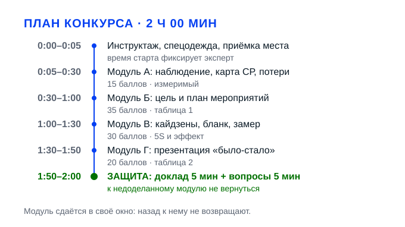
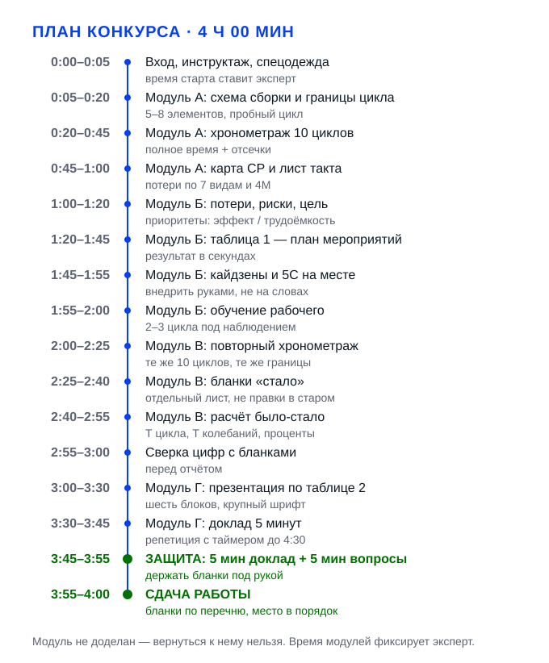
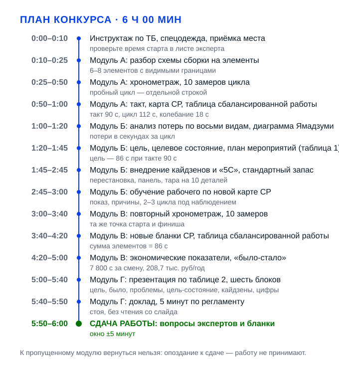

Специалист по организации производства (Бережливое производство) (Р)
Задания ниже — официальные файлы «Абилимпикс» (источник: abilympics-russia.ru), разложенные по категориям. Решения написаны по тексту задания, регламенту и критериям оценки; в них указано, что именно проверяет эксперт.
Школьник
14–16 лет, базовый уровень заданияВыдержка из официального конкурсного задания: страницы, относящиеся к категории «Школьник» (стр. 17–19 источника).
Пошаговое решение
Задание для школьников состоит из четырёх модулей по 0,5 часа — всего 2 часа — и оценивается в 100 баллов: модуль А — ознакомление с технологическим процессом, анализ текущего состояния и выявление потерь, 15 баллов; модуль Б — разработка плана оптимизации процесса и стратегии, 35 баллов; модуль В — кайдзены с предполагаемым эффектом и их оформление на бланке стандартизированной работы, 30 баллов; модуль Г — презентация в формате «было-стало» по заданному шаблону и её защита, 20 баллов. Работа идёт за верстаком со схемой сборки детали: участник наблюдает процесс, заполняет карту стандартизированной работы, классифицирует восемь видов потерь, строит план мероприятий и показывает улучшения на рабочем месте. К недоделанному модулю вернуться нельзя, поэтому главное здесь — не глубина отдельного этапа, а порядок: сначала факты и записи, потом решения, затем оформление и защита.

Задача 1. Понять процесс и найти потериМодуль А · 15 баллов · 30 минут
Первый модуль — самый короткий и самый «смотровой»: за полчаса нужно прочитать схему сборки, проследить цикл, заполнить карту стандартизированной работы и назвать виды потерь, которые мешают выполнить заданный план производства. Здесь ещё ничего не улучшают — здесь собирают факты, на которых потом построят план и кайдзены. Модуль стоит 15 баллов из 100 и оценивается как измеримый, то есть эксперт смотрит на записи и бланк, а не на общие рассуждения. Главный риск — потратить все тридцать минут на наблюдение и оставить карту недописанной, поэтому порядок действий важнее глубины.
Действие 1.1. Войти в модуль и принять рабочее место
Шаг 1.1.1
Первым делом проходим инструктаж по технике безопасности и охране здоровья у эксперта площадки, ставим подпись в журнале, надеваем спецодежду — жилет или халат, закрытую обувь, — и убираем волосы под головной убор, если он предусмотрен. Сразу после этого смотрим на бланк модуля: время начала и окончания вписывает эксперт, и наша задача — убедиться, что цифра стоит верная и совпадает с фактическим стартом, потому что от неё отсчитываются все тридцать минут модуля.
Без отметки об инструктаже к выполнению задания не допускают вообще — это прописано в особых указаниях к компетенции, и никакие баллы за хороший план этого не компенсируют. Проверка времени старта нужна потому, что модуль длится ровно 0,5 часа, а вернуться к недоделанному модулю нельзя: если эксперт по ошибке поставил время на пять минут раньше, у вас забрали шестую часть модуля, и оспорить это после сдачи работы уже невозможно.
В журнале стоит ваша подпись, спецодежда надета полностью, в бланке модуля А время начала совпадает с часами на стене площадки. Если время расходится — говорите об этом сразу, до первого действия, а не в конце модуля, когда исправлять уже нечего.
Типичная ошибка — подписать журнал и не взглянуть на бланк: участник обнаруживает, что старт записан на семь минут раньше, уже на этапе плана, когда переписывать поздно. Вторая — прийти в открытой обуви и потерять время на переодевание внутри модуля, которого и так мало.
Главный эксперт проверяет журнал инструктажа до старта и фиксирует время; дальше он смотрит, в какой момент участник взял в руки бланки, а в какой — детали.
Шаг 1.1.2
Принимаем рабочее место по описи: верстак, лоток с деталями, крепёж в ячейках, инструмент, бланки карты стандартизированной работы, схема сборки. Пересчитываем детали и крепёж вслух, раскладываем крепёж по типоразмерам в ячейки и проверяем, что инструмент, нужный в первом переходе, лежит в пределах вытянутой руки. Всё лишнее — коробки, ветошь, чужие заготовки — сдвигаем на край верстака или убираем на полку, чтобы рабочая зона осталась чистой.
Модуль А стоит 15 баллов и называется «Применение инструментов бережливого производства при текущем состоянии процесса»: эксперт смотрит, умеете ли вы сначала описать рабочее место, а потом его менять. Нехватку деталей или крепежа после старта никто не восполнит — в задании прямо сказано, что участник имеет право пользоваться только тем, что есть на рабочем месте, поэтому пересчёт до начала работы экономит целый модуль.
Крепёж разложен по ячейкам, и его количество совпадает с описью; инструмент первого перехода под рукой; на верстаке нет ничего, что не участвует в сборке; схема сборки и бланки лежат на видном месте и при этом не мешают рукам.
Ошибка — начать сборку, не пересчитав крепёж: нехватка обнаруживается на третьем переходе, когда часть деталей уже собрана, и время уходит на поиск. Вторая — оставить на верстаке коробку от предыдущего участка: она съедает половину рабочей зоны, и вы начинаете тянуться через неё.
Эксперт подходит к рабочему месту в первые минуты модуля и отмечает, разложен ли крепёж по типам и свободна ли рабочая поверхность. Второй раз он подходит к верстаку в середине модуля: если к этому времени крепёж снова смешан в одну кучу, значит, разложение по ячейкам было формальным.
Шаг 1.1.3
На черновике делим тридцать минут на четыре отрезка: пять минут на осмотр и чтение схемы, десять на наблюдение за циклом с записями по переходам, десять на заполнение карты стандартизированной работы, пять на поиск и ранжирование потерь. Отрезки записываем с временем, а не «примерно», и держим лист перед глазами: как только очередной отрезок заканчивается, переходим к следующему, даже если текущий кажется недоделанным.
Модуль А — половина часа, и в нём нужно успеть и посмотреть процесс, и оформить бланк, и найти потери, то есть по десять минут на этап. Практика показывает, что без плана участники тратят двадцать минут на первый переход и потом сдают карту с тремя заполненными строками, теряя большую часть из 15 баллов модуля, хотя процесс видели и потери заметили.
На листе четыре отрезка с временем, и вы можете назвать, в каком из них находитесь сейчас. Если на часах 0:12, а вы всё ещё наблюдаете — план уже нарушен, его надо сокращать, а не догонять потом. Отрезки отмечаем карандашом прямо на листе, а не держим в голове: письменная отметка не даёт незаметно растянуть этап, который кажется почти законченным.
Самая частая ошибка — увлечься наблюдением: интересно смотреть, как собирается деталь, и десять минут превращаются в двадцать пять. Вторая — начать заполнять карту до наблюдения, «по памяти», и потом переписывать её целиком, потому что реальные переходы оказались другими.
Эксперт отмечает, есть ли у участника письменный план модуля: в критерии «Организация производственного процесса» это видно сразу, по тому, как участник переключается между этапами.
Действие 1.2. Разобрать схему сборки и увидеть цикл целиком
Шаг 1.2.1
Разворачиваем схему сборки и читаем её сверху вниз, выписывая переходы в столбик своими словами: взять основание, установить втулку, ввернуть два винта, проверить люфт, уложить изделие в лоток. Напротив каждого перехода ставим номер по схеме и отмечаем, какой инструмент нужен и какой крепёж расходуется, чтобы потом не искать это в процессе наблюдения и не прерывать его.
Карта стандартизированной работы заполняется не по впечатлению, а по переходам, и если переходы не выписаны заранее, наблюдение превращается в хаос: участник смотрит на руки рабочего, а не на последовательность. Модуль А оценивает именно применение инструментов бережливого производства к текущему состоянию, и первая ступень здесь — описанный процесс, а не рассуждения про оптимизацию.
В столбике столько строк, сколько переходов в схеме, у каждой строки есть номер, инструмент и расходуемый крепёж. Прочитайте список вслух: если между двумя строками теряется логика, значит, один переход пропущен и его надо найти в схеме.
Ошибка — читать схему «по диагонали» и потом во время наблюдения гадать, чем третий переход отличается от четвёртого. Из-за этого в карте появляются слитые строки, время цикла оказывается заниженным, и план мероприятий строится на неверных данных.
Эксперт смотрит на черновик участника: есть ли выписанная последовательность переходов с номерами или наблюдение идёт без всякой подготовки. Для него важнее не аккуратность почерка, а наличие номеров переходов и привязки строк к схеме: по такому черновику видно, что документ читали.
Шаг 1.2.2
Просим рабочего собрать деталь один раз в обычном темпе — или выполняем операцию сами, если по условиям площадки её показывает участник, — и смотрим на часы в начале и в конце каждого перехода, записывая время в черновик. Отдельно помечаем моменты, где рука идёт в пустоту: рабочий ищет винт, поправляет лоток, ждёт, пока освободится место, — именно эти секунды и есть потери, которые предстоит назвать.
Наблюдение — единственный способ получить данные, на которые потом можно опереться в плане и в презентации: без него все предложения остаются мнением. Пятнадцать баллов модуля дают за анализ текущего состояния, и эксперт отличает анализ от пересказа схемы именно по наличию зафиксированных наблюдений с временем.
По каждому переходу есть время в секундах, и сумма переходов даёт общую продолжительность цикла. Отдельным списком выписаны замеченные остановки с указанием, на каком переходе они случились и сколько примерно длились.
Типичная ошибка — смотреть на процесс и ничего не записывать, надеясь запомнить: через десять минут в памяти остаются два-три ярких момента, а не хронология. Вторая — засекать только общее время цикла: тогда непонятно, какой переход даёт потери, и план получается безадресным.
Эксперт наблюдает, как участник ведёт запись: по переходам или «одним числом», и есть ли в записях конкретные секунды. Если время записано по переходам, эксперт обычно просит показать один переход и сверить с тем, что видел сам: расхождение в две-три секунды допустимо, расхождение вдвое — уже нет.
Шаг 1.2.3
Договариваемся сами с собой, что считаем циклом: от касания первой детали до укладки готового изделия в лоток, без подготовки инструмента и без уборки. Всё, что делается до первой детали — разложить крепёж, протереть верстак, найти ключ, — выносим в подготовительно-заключительное время и записываем отдельной строкой, чтобы оно не размывало цикл и не путало сравнение.
Если границы цикла не заданы, время цикла получается плавающим: в одном наблюдении в него попадает подготовка, в другом нет, и сравнение «было-стало» в модуле Г теряет смысл. Время цикла и время колебаний — те два показателя, которые задание требует вынести в таблицу презентации, поэтому считать их надо по одному правилу с самого начала.
У вас есть два числа: время цикла и время подготовки, и вы можете объяснить, где именно начинается и заканчивается цикл. При повторном наблюдении границы те же — иначе числа несопоставимы и таблица показателей рассыпается.
Ошибка — включить в цикл поиск инструмента: тогда время цикла вырастет на минуту, виноватым окажется не процесс, а беспорядок на столе, и кайдзен будет направлен не туда. Вторая — менять границы между наблюдениями, чтобы «стало» выглядело лучше: это видно по несовпадению сумм.
Эксперт задаёт участнику один вопрос: что вы считали началом цикла. Ответ показывает, понимает ли участник, что такое цикл, или просто записал два числа.
Действие 1.3. Заполнить карту стандартизированной работы
Шаг 1.3.1
Заполняем шапку бланка: наименование операции, обозначение детали по схеме, исполнитель, дата, номер листа и номер ревизии, а также время такта, если оно указано в задании на план производства. Пишем печатными буквами, чёрной ручкой, без сокращений, которые потом не расшифровать: карту читает не только эксперт, но и рабочий, которому по ней работать.
Карта стандартизированной работы — документ, а не черновик: по ГОСТ Р 56908-2016 она описывает последовательность действий, время и ключевые точки, и оценивается именно как документ. Шапка связывает карту с конкретной операцией и конкретным планом производства, поэтому пропущенное время такта сразу делает непонятным, откуда взялись требования к темпу работы.
Все поля шапки заполнены, ни одного прочерка, наименование операции совпадает с тем, что написано в задании, время такта переписано без округления. Проверьте, что номер ревизии не меньше единицы: карта без ревизии не считается действующей.
Ошибка — оставить шапку на потом: в конце модуля выясняется, что номер листа и ревизия неизвестны, а бланк уже заполнен переходами и переписывать его нет времени. Вторая — писать «сборка» вместо полного наименования операции: эксперт не может сопоставить карту с заданием.
Эксперт проверяет шапку при приёмке модуля: полноту полей и совпадение наименования операции с заданием. Отдельно проверяется, что шапка заполнена до начала работы, а не дописана в конце модуля: об этом говорит и порядок строк, и то, что номер ревизии не приписан поверх другого.
Шаг 1.3.2
Переносим переходы в таблицу карты: номер, описание действия в повелительном наклонении, время в секундах, ключевая точка контроля и требования безопасности. В графе ключевых точек отмечаем то, что нельзя пропустить: затяжку до упора, проверку люфта, ориентацию втулки, — и для каждой точки пишем, чем она проверяется: на ощупь, визуально, ключом до щелчка.
Ключевые точки — это места, где ошибка превращается в дефект, и именно они делают из перечня движений инструмент качества. Модуль В требует оформить кайдзены на бланке стандартизированной работы, а сделать это можно только поверх заполненной карты: без ключевых точек улучшать будет нечего, потому что непонятно, что именно ловится в процессе.
Число строк в карте совпадает с числом переходов на схеме, у каждой строки есть время, у критичных переходов отмечена ключевая точка и способ проверки. Сумма времени по строкам равна времени цикла, которое вы зафиксировали при наблюдении, — расхождение больше двух секунд означает ошибку.
Ошибка — записывать переходы общими фразами вроде «установить узел»: по такой карте нельзя ни обучить, ни найти потерю. Вторая — не указывать время: карта без времени не показывает, где процесс теряет секунды, и весь дальнейший анализ повисает в воздухе.
Эксперт читает две-три строки карты и смотрит, можно ли по ним выполнить действие, не заглядывая в схему. Если в строке нет времени или ключевой точки, он отмечает карту как неполную и снижает балл за стандартизацию работы, даже когда переходы описаны подробно и верно.
Шаг 1.3.3
В нижней части карты рисуем план рабочей зоны сверху: верстак, лотки, крепёж, инструмент, зона готовых деталей, — и стрелками отмечаем, куда тянется рука за каждой позицией. Затем перечитываем карту целиком и проверяем, что каждый переход из схемы нашёл место в таблице, а каждая позиция на плане упоминается хотя бы в одном переходе. План подписываем датой и номером ревизии карты, чтобы при сдаче модуля было видно, к какой редакции относится рисунок и когда он сделан.
План зоны нужен не для красоты: он показывает, какие перемещения рук и лишние шаги заложены в процесс, и именно на нём потом строятся кайдзены по 5S. Кроме того, карта с планом читается экспертом быстрее, а время защиты в модуле Г ограничено пятью минутами, и тратить их на объяснение рисунка невыгодно.
На плане отмечены все позиции, которые упоминаются в переходах, и нет позиций, которых в переходах нет. Стрелки не пересекают рабочую зону насквозь — если пересекают, значит, порядок расположения неудобен, и это уже зафиксированная потеря.
Ошибка — нарисовать план «как красиво» и не сверить с переходами: на защите выясняется, что инструмент для третьего перехода стоит за спиной. Вторая — не рисовать план вообще, ограничившись таблицей: тогда предложения по 5S нечем обосновать, а они стоят баллов в модуле В.
Эксперт сопоставляет план зоны с видом рабочего места и отмечает расхождения между рисунком и реальностью. Особенно его интересует, отмечены ли на плане места, куда рабочему приходится тянуться или наклоняться: именно они потом становятся предметом кайдзенов в модуле В.
Действие 1.4. Найти и назвать потери
Шаг 1.4.1
Берём лист и выписываем восемь видов потерь — перепроизводство, ожидание, транспортировка, излишняя обработка, запасы, лишние движения, дефекты и нереализованный потенциал людей — и напротив каждого пишем, есть ли это в наблюдаемом процессе, с привязкой к номеру перехода. Записываем всё, что заметили, включая мелочи: лишний шаг за лотком, поиск ключа, повторную проверку, которая ничего не ловит.
Перечень видов потерь — это чек-лист, который не даёт остановиться на двух очевидных находках: обычно участник видит ожидание и беспорядок, а мимо излишней обработки и транспортировки проходит. Задание требует определить виды потерь, мешающие выполнению плана производства, и оценивают здесь именно полноту и точность классификации, а не количество строк.
На листе восемь строк, и в каждой либо конкретный пример с номером перехода, либо обоснованное «нет, потому что». Если в строке написано «присутствует» без примера, считайте, что строки нет: проверить её эксперт не сможет.
Ошибка — искать потери «в целом по цеху» и писать общими словами про неэффективность: такие формулировки не проверяемы и не превращаются в мероприятия. Вторая — записывать всё подряд, включая то, что к плану производства отношения не имеет, и размывать главное.
Эксперт смотрит, названы ли потери по видам и привязаны ли они к переходам; общие фразы он не засчитывает. При этом он требует, чтобы потеря была названа термином из перечня, а не бытовым словом вроде «неудобно» или «долго»: за бытовыми словами обычно не стоит понимания механизма.
Шаг 1.4.2
Для каждой найденной потери ставим измеримую величину: сколько секунд занимает ожидание, сколько шагов делает рабочий за цикл, сколько метров проходит до склада, сколько деталей лежит в лотке сверх потребности. Числа берём из наблюдения, а не из головы, и там, где точного замера нет, ставим оценку и помечаем её как оценку, чтобы не выдавать догадку за факт.
Потеря без числа не попадает в план мероприятий, потому что для неё нельзя назначить планируемый результат: колонка «планируемый результат» в таблице плана требует измеримой величины. Кроме того, в модуле Г нужно показать «было» и «стало» по времени цикла и времени колебаний, а это возможно только если исходные потери измерены в тех же единицах.
У каждой потери есть число с единицей измерения и источник: замер, подсчёт шагов, пересчёт деталей. Сумма потерь не превышает времени цикла — если превышает, значит, где-то посчитано дважды, и надо искать накладку, а не радоваться большим числам.
Ошибка — оценивать потерю «на глаз» и получить ожидание в сорок секунд там, где по наблюдению было восемь: такая цифра не выдержит первого вопроса на защите. Вторая — считать потери в процентах от неизвестной базы: процент без базы эксперт не принимает.
Эксперт проверяет, откуда взялись числа: если они совпадают с записями наблюдения, анализ засчитывается. Оценки, помеченные как оценки, он принимает спокойно: честная пометка ценится выше точной на вид цифры без источника, и на защите это экономит участнику объяснения.
Шаг 1.4.3
Раскладываем потери по двум осям: насколько сильно каждая мешает выполнить план производства и насколько просто её убрать в рамках конкурсной площадки. В первую очередь берём то, что даёт много секунд и убирается перемещением лотка, разметкой или изменением последовательности, а потери, требующие закупки оборудования, откладываем и честно помечаем как перспективные.
Модуль Б оценивается в 35 баллов, и он строится на этом отборе: план из пятнадцати невыполнимых пунктов эксперт оценивает ниже, чем план из пяти, где каждый пункт завтра же внедряется на рабочем месте. Отбор показывает, что участник понимает разницу между «хорошо бы» и «можно сделать сейчас», а это и есть профессиональное мышление.
На листе осталось пять-семь потерь, и для каждой вы можете сказать, каким действием она убирается и сколько секунд это вернёт. Отложенные потери выписаны отдельно с причиной, по которой они не входят в план.
Ошибка — тащить в план всё, что нашли: план раздувается, и на его оформление уходит весь модуль Б. Вторая — отбросить потерю только потому, что она кажется мелкой: три по пять секунд в цикле — это пятнадцать секунд, то есть заметная доля времени цикла.
Эксперт смотрит на обоснование приоритетов: умеет ли участник выбирать, а не перечислять всё подряд. Вопрос, который он задаёт чаще всего, звучит так: почему это мероприятие первое, а не второе, — и ответ должен опираться на секунды или на простоту внедрения.
Задача 2. Разработать план оптимизации процессаМодуль Б · 35 баллов · 30 минут
Самый дорогой модуль задания: 35 баллов из 100. Здесь из собранных фактов нужно сделать стратегию — сформулировать цель с числом, описать целевое состояние, собрать план мероприятий по заданной таблице и подобрать под каждую потерю инструмент бережливого производства. Оценивают не красоту формулировок, а связность: каждая потеря должна превратиться в мероприятие, каждое мероприятие — в измеримый результат, а инструмент должен быть тем, который реально внедряется на этом верстаке за тридцать минут следующего модуля. Половина провалов в этом модуле случается не из-за слабых идей, а из-за того, что план не сцеплен с анализом из модуля А.
Действие 2.1. Сформулировать цель и целевое состояние
Шаг 2.1.1
Формулируем цель одной фразой так, чтобы в ней были число и срок: сократить время цикла сборки с наблюдаемых сорока восьми секунд до тридцати восьми за счёт устранения ожидания и лишних движений в пределах модулей Б и В. Рядом записываем, почему эта цель важна для плана производства: при такте в тридцать секунд текущий цикл не даёт выполнить сменное задание, и каждая лишняя секунда превращается в недособранные изделия.
Цель — первый блок презентации по таблице 2, и оценивается она в модуле Г, но формулируется здесь, в модуле Б, потому что от неё зависят и мероприятия, и кайдзены. Размытая цель вроде «повысить эффективность процесса» не позволяет проверить результат, и эксперт снимает баллы за несоответствие цели и показателей в таблице «было-стало».
В цели есть измеримый показатель, исходное значение, целевое значение и срок. Проверьте себя вопросом: можно ли по этой фразе понять, удалось или нет, — если нельзя, цель надо переписать, пока не ушло время модуля.
Ошибка — ставить цель «улучшить всё»: тогда ни одно мероприятие не связано с целью, и блоки презентации не стыкуются между собой. Вторая — взять целевое значение с потолка, не сопоставив его с тактом: цель в двадцать секунд при такте тридцать выглядит неграмотно и вызывает вопросы.
Эксперт проверяет, вытекает ли цель из данных наблюдения и связана ли она с планом производства. Отдельно он смотрит, назван ли в цели тот показатель, который потом появится в таблице «было-стало»: если цель про эффективность, а таблица про секунды, связь придётся объяснять на защите.
Шаг 2.1.2
Описываем целевое состояние так, как будто уже стоим в нём: лоток с крепежом лежит слева в пределах вытянутой руки, инструмент первого перехода — на подставке перед рабочим, готовые детали уходят в лоток справа, переходы идут без возвратов, и рабочему не нужно ничего искать. К описанию прикладываем эскиз планировки целевого состояния — тот же план сверху, что в карте, но с переставленными позициями.
Целевое состояние — четвёртый блок таблицы 2, и без него план мероприятий превращается в список пожеланий. Когда целевое состояние нарисовано, сразу видно, какие именно перемещения исчезнут, а значит, можно посчитать эффект, а не обещать его на словах.
На эскизе целевого состояния у каждой позиции есть своё место, и вы можете показать, чем оно отличается от текущего плана: что переехало, что убрано, что появилось. Отличий должно быть ровно столько, сколько мероприятий в плане.
Ошибка — описать целевое состояние словами «всё аккуратно и под рукой»: проверить такое нельзя, и эксперт не засчитывает блок. Вторая — нарисовать идеальный цех, который не имеет отношения к вашему верстаку: реалистичность здесь ценится выше масштаба.
Эксперт сопоставляет эскиз целевого состояния с текущим планом и смотрит, реалистичны ли изменения на площадке. Наличие эскиза он считает обязательным: без рисунка блок целевого состояния оценивается как неполный, даже если описание сделано подробно и верно.
Шаг 2.1.3
Кладём рядом три листа — записи наблюдения, перечень потерь и описание целевого состояния — и проверяем, что каждая потеря из списка либо исчезает в целевом состоянии, либо осознанно оставлена. Если потеря исчезает, находим в целевом состоянии то изменение, которое её убирает, и подписываем номером мероприятия; если такого изменения нет, дописываем его в план.
Именно эта сверка даёт связность, за которую в модуле Б дают основную часть из 35 баллов: эксперт проверяет не красоту формулировок, а то, что мероприятия вытекают из потерь, а целевое состояние — из мероприятий. Разрыв в этой цепочке — самая частая причина, по которой сильный на вид план получает половину баллов.
У каждой потери в списке стоит номер мероприятия, которое её убирает. Если у какой-то потери номера нет — либо потеря лишняя и её надо убрать из списка, либо план неполный и его надо дописать. Сверку ведём по номерам, а не по названиям: номер находится быстрее и не даёт перепутать похожие формулировки потерь и мероприятий.
Ошибка — писать план и потери параллельно, в разных частях листа, и не сверять: тогда в плане появляются мероприятия «на всякий случай», а половина потерь остаётся без ответа. Вторая — подписать один номер к нескольким потерям, чтобы закрыть список формально.
Эксперт проходит по цепочке потеря — мероприятие — результат и отмечает разрывы. Он может попросить назвать мероприятие, которое убирает конкретную потерю, и слушает, найдётся ли ответ без листа: именно так проверяется, держит ли участник свою же цепочку в голове.
Действие 2.2. Составить план мероприятий по таблице 1
Шаг 2.2.1
Чертим таблицу из четырёх колонок — номер, мероприятие по улучшению, цель, планируемый результат — и вносим пять-семь мероприятий, по одному в строку, начиная с самого весомого. Мероприятие пишем действием: «перенести лоток с крепежом на левую сторону верстака в зону вытянутой руки», а не «оптимизировать расположение крепежа». Колонку «цель» заполняем после того, как сформулировано мероприятие, иначе цель начинает повторять действие и строка теряет смысл для того, кто будет её читать.
Таблица 1 в задании задана жёстко, и эксперт сверяет вашу таблицу с ней по колонкам: если вместо цели написано описание действия, а вместо результата — общее «станет лучше», строка не засчитывается. Кроме того, мероприятие, сформулированное действием, сразу позволяет проверить, выполнимо ли оно на площадке за отведённое время.
В каждой строке заполнены все четыре колонки, мероприятие начинается с глагола, цель отвечает на вопрос «зачем», результат содержит число или измеримый признак вроде «зона размечена». Проверяем это по всем строкам сразу, а не по одной: слабые места обычно идут подряд в середине таблицы, где формулировки писались быстрее всего.
Ошибка — писать в колонке результата «повысится эффективность»: такой результат нельзя предъявить, и строка обесценивается. Вторая — ставить цель, повторяющую мероприятие: «перенести лоток, чтобы перенести лоток».
Эксперт читает таблицу построчно и проверяет, что колонки не дублируют друг друга. Если мероприятие сформулировано существительным, он просит уточнить, кто и что делает, и по ответу видно, продумано действие или записано для заполнения графы.
Шаг 2.2.2
Для каждого мероприятия считаем планируемый результат в секундах, шагах или квадратных метрах рабочей поверхности: перенос крепежа экономит шесть секунд на цикл, разметка зон убирает четыре лишних шага, объединение двух проверок — три секунды. Сумму экономий сопоставляем с разрывом между текущим временем цикла и тактом, чтобы было видно, закрывает ли план этот разрыв целиком или только часть.
Числа в колонке результата — то, из чего в модуле Г вырастет таблица «было-стало» по времени цикла и времени колебаний. Если результаты не посчитаны, участник на защите не сможет ответить на вопрос, откуда взялось улучшение, и потеряет баллы сразу в двух модулях — в плане и в отчёте.
Сумма экономий по мероприятиям не превышает общий запас потерь, найденных в модуле А, и вместе с текущим временем цикла даёт примерно то целевое значение, которое вы записали в цели. Расхождение больше пяти секунд означает, что где-то числа взяты с потолка.
Ошибка — обещать экономию больше, чем весь цикл: если цикл сорок восемь секунд, а план обещает шестьдесят, эксперту очевидно, что числа не считаны. Вторая — писать результат в процентах без базы, от которой эти проценты взяты.
Эксперт пересчитывает одну-две строки и смотрит, сходятся ли обещанные секунды с запасом потерь. Особенно внимательно он смотрит на строки, где результат выражен в процентах без базы, и на строки, где экономия больше самого цикла: и то и другое говорит о том, что числа не считались.
Шаг 2.2.3
Нумеруем мероприятия не по важности, а по порядку внедрения: сначала то, что не требует ничего, кроме перемещения и разметки, потом то, что требует изготовления оснастки или переписи стандарта. Первые два мероприятия должны давать не меньше половины общего эффекта — тогда даже при нехватке времени модуля В процесс заметно изменится и это будет видно эксперту.
В модуле В у вас будет тридцать минут на кайдзены, и внедрить за это время можно только то, что делается руками на месте. Порядок внедрения показывает эксперту, что участник умеет планировать риск и работать с ограничением по времени, а не только придумывать улучшения на бумаге.
Первое мероприятие выполняется за пять минут без инструмента, второе — за десять, и вместе они дают больше половины запланированной экономии секунд. Если это не так, переставьте номера, пока таблица не сдана.
Ошибка — поставить первым мероприятие, требующее токарной обработки или закупки: оно не будет внедрено, и модуль В останется без кайдзена. Вторая — расположить мероприятия по алфавиту или по номерам потерь, потеряв логику внедрения.
Эксперт смотрит на последовательность: что участник собирается делать в первую очередь и почему именно это. По порядку номеров ему видно, планировал участник внедрение или просто перечислял идеи в том порядке, в котором они приходили в голову.
Действие 2.3. Подобрать инструменты бережливого производства
Шаг 2.3.1
Напротив каждой потери ставим инструмент: лишние движения и поиск инструмента — 5S и визуализация, ожидание из-за несвоевременной подачи деталей — канбан или выравнивание, дефекты — встроенное качество и защита от ошибки, лишние запасы — вытягивание, излишняя обработка — пересмотр стандарта. Инструмент выбираем по механизму, а не по названию: важно, что именно он меняет в процессе.
Модуль А и модуль Б вместе оценивают применение инструментов бережливого производства, и эксперту нужно увидеть, что участник понимает назначение каждого инструмента. Когда инструмент выбран по механизму, его внедрение в модуле В занимает минуты; когда по названию, участник начинает «внедрять 5S» там, где проблема в планировании подачи.
Для каждой потери назван инструмент, и вы можете объяснить одним предложением, как он убирает именно эту потерю. Если объяснение не получается — инструмент выбран неверно, и его надо заменить, а не подбирать слова.
Ошибка — приписать все потери к 5S: это самый известный инструмент, и участники тянутся к нему автоматически. Эксперт видит, что за названием нет механизма, и не засчитывает применение инструментов. Оба случая видны на защите: вопрос про механизм задаётся почти всегда, и общий ответ не показывает, какую потерю убирает инструмент.
Эксперт задаёт вопрос, почему выбран этот инструмент, и слушает, назван ли механизм устранения потери. Если на вопрос о механизме участник повторяет название инструмента, балл за применение инструментов не ставится, даже когда название употреблено правильно.
Шаг 2.3.2
Проходим по списку инструментов и для каждого проверяем, что он внедряется на этом рабочем месте за отведённые тридцать минут и без выхода за пределы площадки: разметка зон скотчем — да, изготовление стеллажа — нет, перенос лотка — да, изменение планировки цеха — нет. Инструменты, которые не проходят проверку, заменяем на упрощённые версии или переносим в перспективные.
Задание разрешает пользоваться только тем, что есть на рабочем месте, и это ограничение распространяется на внедрение: кайдзен, который нельзя показать эксперту в конце модуля В, баллов не приносит. Проверка применимости заранее спасает от ситуации, когда красивый план остаётся на бумаге, а рабочее место не изменилось.
У каждого инструмента в списке есть пометка, чем именно он внедряется — скотч, картон, маркер, перенос, — и все эти средства доступны на площадке. Если для инструмента не находится средства, значит, он не войдёт в модуль В.
Ошибка — запланировать изготовление оснастки силами инструментального участка: на чемпионате такого участка нет, и мероприятие провалится. Вторая — заменить внедрение фотографией «как должно быть»: это не кайдзен, а иллюстрация.
Эксперт смотрит на список средств: если в нём есть то, чего на площадке нет, он отмечает нереалистичность плана. Инструменты, внедрённые наполовину, он оценивает по фактическому состоянию рабочего места, а не по записи в плане: недоделанная разметка балла не приносит.
Шаг 2.3.3
Выстраиваем инструменты в логическую цепочку: сначала 5S и визуализация приводят место в порядок, затем стандартизация закрепляет новый порядок в карте, затем встроенное качество убирает лишние проверки, и только после этого имеет смысл говорить о выравнивании загрузки. Каждый следующий шаг опирается на предыдущий, и в плане это видно по номерам мероприятий.
Требования к квалификации прямо говорят о взаимосвязи инструментов и их влиянии на результат: эксперт отличает набор знакомых слов от системы. Связка важна и практически — стандартизировать беспорядок бессмысленно, а встраивать качество в процесс, где инструмент ищут по минуте, невозможно.
В цепочке нет шага, который опирается на ещё не сделанное: стандарт появляется после порядка, качество — после стандарта. Прочитайте цепочку вслух и на каждом переходе спросите себя, сделано ли предыдущее действие.
Ошибка — начинать с канбана или выравнивания: эти инструменты работают только на стабильном процессе, а нестабильный они просто маскируют. Вторая — перечислять инструменты списком, без связки и без объяснения, что за чем идёт.
Эксперт смотрит на порядок инструментов и на объяснение, почему выбран именно такой порядок. Ему важно услышать, почему канбан или выравнивание не поставлены первыми: ответ показывает, понимает ли участник, что эти инструменты требуют уже стабильного процесса.
Действие 2.4. Проверить план на прочность и сдать его
Шаг 2.4.1
На отдельном листе выписываем три-четыре риска: не хватит времени модуля В, деталь окажется другой конфигурации, крепёж закончится, эксперт попросит изменить планировку. Для каждого риска пишем, что вы сделаете: сократите число кайдзенов до двух, возьмёте универсальную оснастку, оставите запас крепежа в лотке, переставите позиции без разметки. Лист подписываем и держим рядом с планом, чтобы в модуле В не искать его по всей папке, когда время начнёт поджимать.
План, в котором нет рисков, при первой неожиданности рассыпается, и участник тратит модуль В на переписывание плана вместо внедрения. Наличие запасного варианта эксперт отмечает как признак зрелости работы и учитывает при оценке организации производственного процесса.
На листе есть риски и ответы на них, и хотя бы один ответ меняет план: сокращает объём или меняет порядок. Если все ответы сводятся к «буду внимательнее», значит, риски выписаны формально и пользы от них не будет.
Ошибка — считать, что всё пойдёт по плану: тогда при первой заминке участник теряет десять минут модуля В, а это треть модуля. Вторая — прописать риск, но не прописать реакцию: такой лист только занимает место.
Эксперт может спросить, что участник будет делать, если времени не хватит; ответ виден по листу рисков. Ответ «сокращу число кайдзенов до двух» он считает сильным, ответ «успею, я быстро» — слабым: второй показывает, что участник не рассматривал вариант нехватки времени.
Шаг 2.4.2
Переписываем таблицу начисто, без помарок и зачёркиваний: ровные строки, читаемый почерк, номера мероприятий совпадают с номерами в перечне потерь. Сверху подписываем, к какому модулю относится лист и какая цель у плана, чтобы эксперт мог проверить его, не разбираясь в черновиках и не задавая уточняющих вопросов. Если строк много, оставляем между ними интервал, чтобы таблица читалась без напряжения: тесные строки эксперт просматривает по диагонали и часть мероприятий пропускает.
Оценочный лист заполняется по документу, а не по рассказу: если эксперт не может быстро прочитать строку, он ставит балл по тому, что видит. Аккуратность здесь не про красоту, а про скорость проверки — а на площадке у эксперта десяток участников и ограниченное время на каждого.
Таблица читается без пояснений, номера сквозные, ни одной строки, перечёркнутой и написанной заново поверх. Проверьте, что номер последнего мероприятия совпадает с числом строк в плане. Сверяем номера с перечнем потерь и убеждаемся, что ни один номер не выпал и ни один не повторён дважды в разных строках.
Ошибка — сдать черновик с сокращениями и стрелками: эксперт потратит время на расшифровку и может не увидеть часть мероприятий, а значит, не засчитать их. Вторая — потерять связь номеров с перечнем потерь, из-за чего рушится вся логика.
Эксперт оценивает план в момент приёмки модуля Б и отмечает читаемость и полноту. Если строка написана неразборчиво, он не пытается её расшифровать, а отмечает как отсутствующую: время приёмки ограничено, и разбирать почерк никто не станет.
Шаг 2.4.3
Прогоняем план по трём вопросам: каждое ли мероприятие убирает конкретную потерю, у каждого ли мероприятия есть измеримый результат, можно ли первое мероприятие внедрить в этом же помещении за десять минут. Если на какой-то вопрос ответ «нет», строку переделываем сразу, пока идёт время модуля Б и правки ничего не стоят. Отмечаем на листе, какие строки уже проверены, чтобы не проходить по ним второй раз и не терять последние минуты модуля на повторную проверку.
Модуль Б — самый дорогой в задании, 35 баллов из 100, и он оценивается целиком, а не построчно: одна невнятная строка тянет вниз впечатление от всей таблицы. Три вопроса повторяют логику оценочного листа, поэтому самопроверка по ним ближе всего к тому, что будет делать эксперт.
На все три вопроса по каждой строке дан ответ «да», и вы можете назвать мероприятие, которое внедрите первым, и время, за которое это сделаете. Если назвать не можете — план ещё не готов к сдаче. Ответы на три вопроса записываем рядом со строками, чтобы на приёмке было видно, что проверка действительно делалась, а не подразумевалась.
Ошибка — проверять план после того, как модуль закончился: правки уже не принимаются, и работа уходит с тем, что есть. Вторая — проверить только первую строку и считать, что остальные такие же, хотя именно в середине таблицы обычно и прячется слабое место.
Эксперт при приёмке модуля Б задаёт один вопрос по случайной строке; ответ показывает, понимает ли участник свой собственный план. Ответ «потому что так быстрее» его не убеждает: он ждёт ссылку на потерю или на посчитанные секунды, а общие слова воспринимает как отсутствие обоснования.
Задача 3. Разработать и внедрить кайдзеныМодуль В · 30 баллов · 30 минут
Третий модуль переводит план в действие: за тридцать минут нужно внедрить на рабочем месте два-три кайдзена, оформить каждый на бланке стандартизированной работы, обновить карту и посчитать эффект. Модуль стоит 30 баллов и оценивается как измеримый: эксперт смотрит не на слова, а на рабочее место — появилась ли разметка, ушло ли лишнее, стало ли короче движение. Здесь же встроена передача изменений рабочему: улучшение, о котором не рассказали и не показали, считается невнедрённым. Ключевое ограничение — всё делается руками и тем, что есть на площадке.
Действие 3.1. Разработать кайдзены
Шаг 3.1.1
Формулируем три-четыре кайдзена, каждый — как маленькое изменение на рабочем месте: перенести лоток с крепежом на левую сторону и разметить его контур, поставить подставку под ключ под углом, объединить две проверки люфта в одну с записью в карте, разложить крепёж по цветам ячеек. Кайдзен формулируем так, чтобы его можно было показать пальцем: вот здесь было, вот здесь стало.
Модуль В требует предложить кайдзены с предполагаемым эффектом и оформить их на бланке стандартизированной работы: оценивают не количество идей, а внедряемость и связь с найденными потерями. Три внедрённых кайдзена стоят больше, чем десять придуманных, потому что эксперт обходит рабочее место, а не читает список.
Каждый кайдзен привязан к номеру потери из модуля А и к номеру мероприятия из модуля Б. Если привязки нет — кайдзен появился сам по себе, и его вклад в результат объяснить нечем. Номера потерь и мероприятий выписываем рядом с каждым кайдзеном на том же листе, где он сформулирован, иначе связь теряется к моменту оформления бланка.
Ошибка — предлагать кайдзен в масштабе всего предприятия: «внедрить систему канбан на складе» на площадке не внедряется и баллов не даёт. Вторая — выдать за кайдзен мероприятие из плана и посчитать его дважды, хотя рабочее место не изменилось.
Эксперт сверяет кайдзены с перечнем потерь и смотрит, насколько предложение конкретно. Он также смотрит, не выданы ли за кайдзен изменения, которых на рабочем месте не видно: если участник не может показать, что именно переделано, предложение не засчитывается.
Шаг 3.1.2
Один кайдзен обязательно делаем по системе 5S: убираем с рабочей зоны всё, что не участвует в операции, оставляем только крепёж, инструмент и лотки, размечаем места контуром или цветной лентой, ставим бирки на ячейки и определяем, что возвращается на место в конце смены. Пятый шаг — совершенствование — записываем как правило: раз в неделю пересматривать содержимое ящика.
5S прямо назван в требованиях к квалификации и в описании модуля В, а его результат виден эксперту без объяснений: чистая размеченная зона читается как улучшение сразу. Разметка и бирки — это ещё и визуализация, второй инструмент из того же перечня, поэтому один кайдзен закрывает два требования одновременно.
На рабочем месте осталось только необходимое, каждое место размечено, у ячеек есть подписи, и вы можете назвать, что именно убрали и куда. Если убрали, но не разметили, кайдзен не считается внедрённым.
Ошибка — понимать 5S как одну уборку: лишнее убрали, но места не разметили, и через десять минут всё вернулось на прежние позиции. Вторая — размечать всё подряд, включая то, что в операции не используется, и создавать новую визуальную помеху.
Эксперт обходит рабочее место после модуля В и проверяет наличие разметки и подписей, а также спрашивает, что убрано. Отдельно он смотрит, читаются ли подписи с расстояния шага: если ячейку приходится разглядывать, разметка работает только для её автора и стандартом не является.
Шаг 3.1.3
Второй кайдзен направляем на лишние движения: замеряем, сколько шагов и наклонов делает рабочий за цикл, и переставляем две-три позиции так, чтобы всё нужное оказалось в пределах вытянутой руки и на высоте пояса. Проверяем результат повторным проходом цикла и считаем, сколько движений исчезло по сравнению с записями модуля А. Замер записываем в тот же черновик, где велось наблюдение в модуле А: два числа рядом на одном листе и есть доказательство улучшения, которое потом пойдёт в таблицу показателей.
Лишние движения — самая частая потеря на сборочном верстаке, и она единственная, которую можно убрать полностью без затрат и без остановки работы. После перестановки эффект виден в секундах времени цикла, а это именно тот показатель, который задание требует вынести в таблицу «было-стало».
После перестановки рабочий выполняет цикл без шагов в сторону и без наклонов ниже пояса, число движений за цикл уменьшилось, и вы можете назвать разницу в штуках. Если разница не считается — кайдзен описан словами, а не сделан.
Ошибка — переставить всё сразу и потерять логику последовательности: инструмент оказывается под рукой, но не в том порядке, в котором нужен, и цикл удлиняется. Вторая — не замерить результат, оставив кайдзен без числа.
Эксперт наблюдает цикл после внедрения и сравнивает с записями наблюдения до него. Если участник не может показать, что именно переставил и сколько движений исчезло, кайдзен считается невыполненным, даже когда на словах всё описано верно.
Действие 3.2. Оформить кайдзены на бланке стандартизированной работы
Шаг 3.2.1
Заполняем бланк предложения по улучшению: что было, что предлагается, где именно, кто автор, дата, ожидаемый эффект в секундах и в чём выражается выгода для рабочего. В графе «было» коротко описываем текущее состояние с числом, в графе «предлагается» — действие в повелительном наклонении, без прилагательных и без оценочных слов. Бланк пишем разборчиво, одной ручкой, без исправлений поверх текста: бланк читает эксперт и, в идеале, рабочий следующей смены, а зачёркнутые строки читаются как небрежность.
Задание требует оформить кайдзены на соответствующем бланке стандартизированной работы, и оценивают именно оформление: незаполненный бланк равен отсутствию кайдзена, даже если на рабочем месте всё переделано. Кроме того, бланк — это документ, по которому улучшение передают смене, поэтому он должен читаться без автора.
В бланке заполнены все графы, «было» содержит число, «предлагается» начинается с глагола, эффект выражен в секундах или штуках. Бланк подписан и лежит вместе с картой стандартизированной работы, а не отдельно от неё.
Ошибка — описать кайдзен только словами, без чисел: тогда эффект нельзя проверить, и в модуле Г нечего показать в таблице. Вторая — оставить бланк без указания места, и потом никто, включая эксперта, не понимает, к какому рабочему месту относится улучшение.
Эксперт читает бланки при приёмке модуля В и проверяет, есть ли в них измеримый эффект. Он сверяет бланк с картой: номер кайдзена должен совпадать с номером изменённого перехода, иначе непонятно, где именно улучшение внедрено.
Шаг 3.2.2
Вносим изменения в карту стандартизированной работы: переписываем те переходы, где изменилась последовательность или расположение, ставим новую ревизию листа и отмечаем дату изменения. Старую редакцию не выбрасываем, а подкладываем под новую — так видно, что именно поменялось и на каком основании. Подпись и дату ставим на новой редакции, а старая остаётся читаемой: без неё сравнение «было-стало» в модуле Г опирается только на память участника, а это самый слабый аргумент на защите.
Стандартизация работы по ГОСТ Р 56908-2016 означает, что улучшение закрепляется документом, иначе оно живёт до первой смены. В модуле Г сравнение «было-стало» опирается на две редакции карты, и если старая выброшена, сравнение приходится делать по памяти, а это самый слабый аргумент на защите.
Новая редакция карты отличается от старой только теми переходами, которые действительно изменились, номер ревизии увеличен, дата стоит, старая карта сохранена и подколота снизу. Сверяем обе карты построчно и убеждаемся, что изменены только те переходы, которые действительно поменялись, а остальные строки перенесены без правок.
Ошибка — переписать карту целиком «заново и красиво»: тогда невозможно показать, что именно изменилось, и теряется главный аргумент улучшения. Вторая — не поднять номер ревизии: две разные карты выглядят одинаково, и непонятно, какая действует.
Эксперт сравнивает две редакции карты и смотрит, отражены ли в них внедрённые кайдзены. Ему важно увидеть, что старая редакция сохранена: именно она подтверждает исходное состояние, которое потом показывают в презентации.
Шаг 3.2.3
К кайдзену прикладываем эскиз или фотографию состояния «стало»: рабочая зона сверху с разметкой, подписанные ячейки, подставка под инструмент. Если фотоаппарат на площадке недоступен, рисуем от руки, но с теми же подписями, что на месте, чтобы эксперт мог сверить рисунок с реальностью без дополнительных объяснений. Подписи на эскизе делаем теми же словами, что на бирках и в карте, иначе сверка занимает лишнее время, а на защите приходится объяснять, что рисунок и реальность совпадают.
Презентация в модуле Г строится в формате «было-стало», и половина её убедительности — в наглядности: рисунок или фото заменяют абзац текста и экономят минуты защиты. Кроме того, эскиз показывает, что участник видел результат своими глазами, а не описал его по памяти.
На эскизе видны те же объекты, что на рабочем месте, подписи совпадают с бирками, и можно показать три отличия от состояния «было». Если отличий не набирается, значит, кайдзен слишком мелкий или недоделанный.
Ошибка — рисовать схему «в общем виде», без привязки к реальным позициям: эксперт не может сопоставить её с местом, и рисунок не работает как доказательство. Вторая — сделать фото до внедрения и забыть про «после».
Эксперт сверяет эскиз с рабочим местом в момент приёмки модуля В. Если рисунок сделан заранее, до внедрения, это видно по отсутствию деталей, которые появились в процессе работы, — эксперт смотрит именно на такие несовпадения.
Действие 3.3. Оценить эффект внедрённых изменений
Шаг 3.3.1
После внедрения проходим цикл ещё раз и засекаем время так же, как в модуле А: от касания первой детали до укладки в лоток, по тем же границам. Записываем новое время, сравниваем с исходным и считаем разницу в секундах и в процентах от исходного значения, а не от нового. Для честности записываем и число проходов: один замер легко случайно ускорить, а три подряд уже показывают реальный темп и дают материал для показателя колебаний.
Время цикла — первый показатель таблицы презентации, и он должен быть получен измерением, а не вычитанием обещанной экономии из старого числа. Эксперт на защите почти всегда спрашивает, как получено «стало», и ответ «посчитал по плану» стоит нескольких баллов, потому что это уже не измерение.
Есть два числа, полученные одним способом с одинаковыми границами цикла, и разница между ними совпадает с суммой эффектов внедрённых кайдзенов с точностью до пары секунд. Расхождение больше пяти секунд означает, что либо границы поплыли, либо эффект преувеличен.
Ошибка — мерить «стало» по одному переходу, а «было» по всему циклу: сравнение получается в пользу участника, но эксперт читает это сразу. Вторая — округлять в свою пользу, теряя честность числа и доверие ко всей таблице.
Эксперт может попросить показать записи замеров; наличие двух наборов с одинаковыми границами снимает вопросы. Он смотрит, названы ли границы цикла при замере «стало» теми же словами, что и в модуле А: если границы поплыли, числа становятся несопоставимыми.
Шаг 3.3.2
Считаем не только среднее, но и разброс: делаем три-четыре прохода цикла и записываем каждый, затем находим разницу между самым быстрым и самым медленным. Если разброс большой, ищем причину — чаще всего это ожидание крепежа или поиск инструмента — и отмечаем, какой именно кайдзен его сократил. Разброс записываем рядом со средним, чтобы на защите можно было показать оба числа сразу и объяснить, что именно дало стабильность, а что осталось неизменным.
В таблице презентации задание требует два показателя: время колебаний и время цикла, — и колебания важны не меньше среднего, потому что именно разброс не даёт стабильно выполнять план. Участник, который показал только среднее, отвечает на вопрос о стабильности «на глаз» и теряет баллы в оценочном модуле Г.
Записаны все проходы с временем, разброс посчитан как разница между крайними значениями, и по нему видно сокращение по сравнению с наблюдением в модуле А. Если разброс вырос, лучше честно это отметить и объяснить причину, чем скрыть.
Ошибка — сделать один проход и назвать его временем цикла: разброс при этом неизвестен, и показатель колебаний приходится выдумывать. Вторая — отбросить медленный проход как «неудачный»: именно он и показывает колебание, ради которого показатель и введён.
Эксперт смотрит на записи проходов: если их несколько, показатель колебаний обоснован. Если записан один проход, он спрашивает, откуда взялось время колебаний, и ответа обычно нет: показатель приходится выдумывать, а это видно по несовпадению с записями.
Шаг 3.3.3
Переводим секунды в то, что понятно заказчику: при такте тридцать секунд экономия десять секунд на цикл — это двадцать изделий за смену, а лишние четыре шага за цикл — это несколько сотен шагов за день. Записываем обе величины, секунды и изделия, потому что первая нужна для таблицы, а вторая — для объяснения выгоды на защите. Формулу пересчёта записываем рядом с числами, чтобы на защите можно было показать её одной строкой и не считать заново под взглядом эксперта.
Блок «показатели и результаты» в презентации требует не только чисел, но и результата: эксперту важно увидеть, что участник понимает связь между секундой цикла и выпуском. Такой пересчёт — простейший признак того, что человек думает о производстве, а не только о хронометраже.
Экономия в секундах пересчитана в изделия за смену через такт, арифметика проверена на калькуляторе, и оба числа записаны рядом. Проверьте, что полученное число изделий не превышает физическую производительность верстака.
Ошибка — умножать секунды на число смен, забыв перевести их в изделия: получаются «сэкономленные секунды», которые ничего не значат для слушателя. Вторая — считать выгоду в рублях, не зная тарифа, и получать число, которое нельзя защитить.
Эксперт проверяет арифметику пересчёта — это быстрый способ понять, считал участник или оценивал. Пересчёт в изделия он считает признаком того, что участник понимает смысл такта, а не только умеет засекать время по секундомеру.
Действие 3.4. Передать изменения рабочему
Шаг 3.4.1
Показываем рабочему новый порядок в четыре шага: рассказываете, что изменилось и почему; показываете новый цикл целиком в нормальном темпе; рабочий выполняет цикл сам, а вы молчите и смотрите; затем разбираете одно расхождение и просите повторить. На всё уходит не больше трёх минут, и это единственный способ убедиться, что стандарт понят, а не просто вручён.
Модуль В включает передачу знаний, навыков и эффективные коммуникации, и это отдельная часть его 30 баллов: улучшение, которое не передано, не работает и не засчитывается. Метод «расскажи — покажи — сделай — проверь» занимает минуты и даёт проверяемый результат, в отличие от чтения карты вслух.
Рабочий выполняет цикл без подсказок и без возврата к старому порядку, и может назвать, где теперь лежит крепёж и почему именно там. Если назвать не может — объяснение было, а понимания нет. Проверяем это дважды: сразу после показа и через один цикл, потому что на первом проходе человек ещё повторяет, а на втором работает по своему пониманию.
Ошибка — отдать карту и сказать «делай так»: человек согласится, но продолжит работать по привычке, и эксперт увидит старое движение. Вторая — показывать в ускоренном темпе, который невозможно повторить.
Эксперт наблюдает передачу или спрашивает, как участник обучал; ценится показ и проверка, а не объяснение. Если участник только рассказывает, а рабочий не выполняет цикл сам, передача не засчитывается: проверяется результат, а не факт объяснения.
Шаг 3.4.2
После обучения просим выполнить ещё два цикла и смотрим, держится ли новый порядок: крепёж возвращается в размеченную ячейку, инструмент — на подставку, деталь уходит в лоток справа. Если что-то съезжает, правим не рабочего, а место: добавляем метку, меняем угол подставки, упрощаем движение. Если рабочему неудобно возвращать инструмент на место, значит, место выбрано неверно, и его надо менять, а не напоминать о дисциплине каждые пять минут.
Стандарт держится не на дисциплине, а на удобстве: если рабочему проще бросить ключ, чем положить, он бросит, и никакая карта этого не изменит. Понимание этого отличает специалиста по бережливому производству от контролёра, и эксперт видит его по тому, что участник правит рабочее место, а не человека.
Два цикла подряд проходят без нарушений нового порядка, и после второго цикла рабочее место выглядит так же, как сразу после внедрения. Это и есть проверка устойчивости улучшения. Смотрим на это после каждого прохода, а не один раз в конце: именно в третьем-четвёртом цикле проявляется, держится порядок или он был случайным.
Ошибка — ограничиться одним циклом: на первом человек ещё помнит инструкцию, а на третьем возвращается привычка. Вторая — ругать за возврат к старому порядку вместо изменения места: так улучшение разваливается в тот же день.
Эксперт смотрит на состояние рабочего места в конце модуля В: оно и есть результат закрепления. Его интересует не разовая аккуратность, а совпадение фактического порядка с тем, что записано в новой редакции карты: расхождение он отмечает как незакреплённое улучшение.
Задача 4. Собрать презентацию «было-стало» и защитить еёМодуль Г · 20 баллов · 30 минут
Последний модуль — отчёт: по заданному шаблону собрать презентацию из шести блоков, заполнить таблицу показателей и защитить работу за пять минут, ответив потом на вопросы ещё пять минут. Модуль стоит 20 баллов и оценивается как оценочный, то есть решают полнота блоков, внятность чисел и владение терминологией. Здесь уже ничего не улучшают: всё, что не посчитано и не записано в предыдущих модулях, предъявить не получится, поэтому порядок работы — сначала собрать факты на слайды, потом репетировать, а не наоборот.
Действие 4.1. Собрать презентацию по шести блокам шаблона
Шаг 4.1.1
Собираем первые три блока по таблице 2: цель с объяснением причин, текущее состояние с текущими показателями и схемой рабочего места, анализ проблем с перечнем потерь и их числами. На каждый блок — один слайд или одна колонка листа, текст тезисами по три-четыре строки, потому что защита идёт пять минут и читать длинные абзацы никто не будет. Заголовки блоков пишем теми же словами, что в шаблоне, чтобы эксперт находил нужный раздел без поиска: цель, текущее состояние, анализ проблем — в том же порядке, что в таблице 2.
Шаблон презентации задан в задании, и отклонение от него эксперт воспринимает как невыполнение требования к отчётному материалу. Кроме того, эти три блока отвечают на первый вопрос любого слушателя: зачем, где мы сейчас и что мешает, — и если они не внятны, дальше слушать не станут.
В первых трёх блоках есть число в каждом: такт или время цикла в текущем состоянии, количество и вид потерь, секунды потерь в анализе. Причины в первом блоке объясняют, почему цель важна для производства, а не только для участника.
Ошибка — начать презентацию с описания процесса и забыть про цель и причины: слушатель не понимает, зачем всё это, и оценка падает уже на первом блоке. Вторая — перегрузить слайд текстом, который невозможно прочитать за отведённое время.
Эксперт сверяет презентацию с таблицей 2 по блокам и отмечает пропущенные. Он также проверяет, есть ли в блоке текущего состояния схема или план, а не только текст: задание разрешает и требует показывать состояние наглядно.
Шаг 4.1.2
Собираем оставшиеся три блока: целевое состояние с эскизом, кайдзены с указанием, что именно внедрено, и таблицу показателей с колонками «было», «стало», «результат» по времени колебаний и времени цикла. В блоке кайдзенов подписываем каждый кайдзен номером потери, которую он убирает, чтобы связь была видна без дополнительных объяснений. Нумерацию блоков сохраняем как в шаблоне, а под таблицей показателей оставляем место для сноски об источнике данных, чтобы она не уехала на следующий слайд при печати.
Вторая половина шаблона — ответ на вопрос «что сделано и что получилось», и именно она несёт основную доказательную нагрузку. Если кайдзены не привязаны к потерям, эксперт не может проверить логику работы, и оценка падает независимо от качества отдельной части.
Все шесть блоков на месте, каждый кайдзен имеет номер, таблица показателей заполнена полностью, целевое состояние совпадает с тем, что описано в модуле Б. Расхождений между блоками быть не должно. Блоки считаем вслух по номерам от первого до шестого: если на каком-то номере сбились, значит, один блок пропущен или объединён с соседним.
Ошибка — объединить анализ проблем и целевое состояние в один блок, чтобы сэкономить место: шаблон нарушен, и один из блоков не засчитывается. Вторая — оставить таблицу показателей без колонки «результат», хотя именно она показывает выгоду.
Эксперт проверяет наличие всех шести блоков и их соответствие шаблону до начала защиты. Таблицу показателей он читает первой: по ней сразу видно, считал участник или оценивал, и от этого зависит доверие к остальным блокам.
Шаг 4.1.3
Приводим оформление к одному виду: одинаковые шрифты, подписи под схемами, единицы измерения у всех чисел — секунды, штуки, шаги, — и профессиональные термины вместо бытовых: не «простой», а «ожидание», не «беспорядок», а «потери на лишние движения». Употребляем те термины, которые можем объяснить, потому что на защите спросят именно про них. Проверяем, что шрифт читается с трёх метров, а подписи под схемами не мельче основного текста: презентацию смотрят на экране или с листа, и мелкий кегль обесценивает даже верные числа.
Задание прямо требует использовать профессиональную терминологию по бережливому производству, и это отдельный критерий оценочного листа. Термин, употреблённый к месту, показывает, что участник понимает инструмент; термин, вставленный для солидности, рассыпается на первом же встречном вопросе.
В презентации нет чисел без единиц измерения, все виды потерь названы терминами из перечня, и по каждому термину у вас есть одно предложение объяснения. Если объяснения нет — термин лучше убрать. Термины проверяем выборочно: берём три случайных и объясняем каждый одним предложением — если объяснение не находится, термин заменяем на понятный.
Ошибка — писать «оптимизация» там, где речь о конкретном инструменте: общее слово не показывает знания. Вторая — использовать термин, значения которого участник не знает, и потерять балл на вопросе, который задают как раз для проверки.
Эксперт слушает формулировки и задаёт уточняющий вопрос по одному из терминов. Термин, которого участник не может объяснить, он отмечает как чужой: такие слова обычно взяты из готовой презентации и рассыпаются на первом же уточняющем вопросе.
Действие 4.2. Заполнить таблицу показателей
Шаг 4.2.1
Переносим в таблицу два показателя: время колебаний и время цикла, в секундах, с колонками «было», «стало» и «результат». «Было» берём из записей модуля А, «стало» — из повторных проходов модуля В, результат считаем как разницу и как процент от исходного значения, округляя до целого. Если в записях остались только средние значения, проходим цикл заново и записываем каждый проход отдельно, иначе показатель колебаний взять неоткуда и строку придётся оставить пустой.
Таблица показателей — единственное место в презентации, где улучшение превращается в проверяемые цифры, и она прямо задана в шаблоне таблицы 2. Числа должны быть согласованы с текстом блоков: если в анализе написано «ожидание двенадцать секунд», а в таблице разница пятнадцать, эксперт заметит нестыковку и снимет балл за анализ данных.
Оба показателя заполнены, разница сходится с арифметикой, проценты посчитаны от исходного значения, а не от нового, и те же числа упоминаются в блоках анализа и кайдзенов. Проверьте это по тексту, а не по памяти.
Ошибка — указать только время цикла, пропустив колебания: показатель из шаблона отсутствует, и блок оценивается неполно. Вторая — посчитать процент от значения «стало» и получить завышенный результат.
Эксперт сверяет числа в таблице с записями замеров и с текстом презентации. Если «было» и «стало» получены разными способами, он замечает это по несовпадению суммы переходов и просит объяснить, как считались показатели.
Шаг 4.2.2
Пересчитываем каждую строку на калькуляторе, проверяем единицы — везде секунды, а не минуты и секунды вперемешку, — и отдельно проверяем, что результат положительный и меньше исходного времени. Если получается больше, значит, где-то перепутаны «было» и «стало» или сложены разные величины. Рядом с таблицей оставляем черновик расчёта: он пригодится, если эксперт попросит объяснить строку, и покажет, что числа получены вычислением, а не подобраны под красивый результат.
Арифметическая ошибка в таблице обесценивает всю работу: эксперт делает вывод, что участник не считал, а оценивал. Проверка занимает две минуты и снимает самый обидный риск — потерять баллы за анализ данных при полностью выполненной работе и внедрённых кайдзенах.
Все строки пересчитаны, единицы одинаковые, разница положительная, сумма процентов не превышает ста. Если хотя бы одно условие не выполняется, таблицу надо переделать до защиты. Ручной пересчёт делаем по каждой строке отдельно, не сворачивая в одну формулу: так ошибка в единицах видна сразу, а не растворяется в общем итоге.
Ошибка — считать в уме и ошибиться на пять секунд: разница видна, и доверие к остальным числам пропадает. Вторая — оставить в одной колонке разные единицы, например секунды и минуты, и получить несопоставимые значения.
Эксперт выборочно пересчитывает одну строку — это стандартный приём проверки отчёта. Ошибку в арифметике он воспринимает как признак того, что таблица заполнена по памяти, и перепроверяет остальные строки внимательнее.
Шаг 4.2.3
К таблице добавляем короткую сноску: откуда взято «было», сколько проходов сделано для «стало», чем мерили время — секундомером телефона, часами на стене — и с какой точностью. Сноска мелким шрифтом, но она снимает половину вопросов на защите и показывает, что числа получены, а не подобраны. Сноску пишем сразу под таблицей, а не на отдельном листе, чтобы её не потеряли при печати и чтобы эксперт видел источник данных в тот момент, когда читает числа.
Сноска — это доказательство, а не формальность: она отвечает на первый же вопрос эксперта про источник данных, а таких вопросов на пять минут защиты обычно два-три. Готовая сноска экономит время и добавляет уверенности, которой не хватает при импровизации.
В сноске названы источник «было», число проходов и средство измерения, и вы можете показать черновик с записями, из которых взяты числа. Если черновик потерян, сноска всё равно работает, но слабее. Проверяем, что в сноске есть все три элемента — источник «было», число проходов и средство измерения, — и что они не противоречат записям в черновике.
Ошибка — не указывать, чем измерялось: тогда любой вопрос про точность ставит участника в тупик, и он начинает оправдываться. Вторая — ссылаться на «данные предприятия», которых у вас нет и которые эксперт не сможет проверить.
Эксперт читает сноску и по ней решает, насколько можно доверять показателям. Для него важно, чтобы источник был назван точно: «мерил телефоном, точность до секунды» звучит убедительнее, чем «замерял по ходу работы».
Действие 4.3. Провести защиту
Шаг 4.3.1
Раскладываем пять минут на отрезки: тридцать секунд на цель и причины, минута на текущее состояние, минута на проблемы, минута на целевое состояние, полторы минуты на кайдзены и результат, тридцать секунд на вывод. Прогоняем вслух с таймером и подрезаем текст там, где вылезли за отрезок. Текст доклада пишем короткими фразами: длинные периоды на защите не помещаются в отведённые отрезки, и участник либо ускоряется, либо выпадает из регламента на середине.
Регламент задан жёстко: пять минут на выступление и пять на вопросы, и превышение обычно останавливают на середине. Распределение времени по блокам гарантирует, что вы успеете сказать главное — про результат, — а не потратите всю минуту на описание того, как устроен верстак.
Хронометраж вслух укладывается в пять минут с запасом десять-пятнадцать секунд, и в каждой части сказано не меньше одного числа. Если какая-то часть осталась без числа, она звучит как общее слово и не запоминается.
Ошибка — рассказывать по слайдам подряд и застрять на текущем состоянии: до кайдзенов и результата время не доходит, а именно там основные баллы. Вторая — говорить быстрее, чтобы уложиться, и терять разборчивость: эксперт перестаёт успевать записывать.
Эксперт фиксирует время выступления и отмечает, изложены ли цель, задачи, выполненные мероприятия и итоги. Отдельно он слушает, названы ли задачи, а не только цель: в докладе должны прозвучать и выполненные мероприятия, и итоги проделанной работы.
Шаг 4.3.2
Прогоняем доклад дважды, второй раз — не подглядывая в лист, только по памяти и по схеме на слайде: так проверяется, держится ли структура без бумаги. Запоминаем три опорных числа — такт, время цикла «было» и «стало» — и три названия инструментов, которые точно произнесём. Если какой-то блок не запоминается, значит, он не продуман, и его надо переписать короче и с числом внутри: запоминается то, что опирается на конкретную величину, а не на общую формулировку.
Чтение с листа на защите воспринимается как отсутствие понимания, а оценивают именно понимание и владение терминологией. Кроме того, при чтении теряется контакт с аудиторией, а задание отдельно упоминает инструменты привлечения и удержания внимания. К этому добавляется простая вещь: выученный наизусть текст рассыпается от одного перебивания, а структура из шести блоков восстанавливается даже после паузы.
Второй прогон проходит без листа, все шесть блоков названы по порядку, три числа произнесены правильно. Если на середине вы сбиваетесь — значит, структура держится на тексте, а не на понимании. Таймер держим рядом и останавливаем прогон на пятой минуте: если не уложились, режем текст сразу, а не надеемся, что на защите получится говорить быстрее.
Ошибка — выучить текст наизусть и сбиться на середине: восстановиться без структуры невозможно, и дальше идёт пауза, которая съедает минуту. Вторая — импровизировать полностью и пропустить блок целевого состояния.
Эксперт слушает, держит ли участник зрительный контакт и не читает ли с листа. Если участник читает с листа, он задаёт вопрос по собственному тексту и проверяет, понимает ли тот прочитанное или просто воспроизводит заученное.
Шаг 4.3.3
Во время доклада показываем указкой или пальцем на тот блок, о котором говорим, и держим презентацию повёрнутой к экспертам, а не к себе. Ключевые числа произносим медленнее и с паузой после них, чтобы эксперт успел записать, а схемы комментируем одной фразой: что на них видно. Перед выступлением проверяем, что презентация открыта на первом слайде и шрифт не поехал после переноса файла: на незнакомом компьютере вёрстка иногда сдвигается, и это съедает первые секунды.
Презентация — средство, а не конспект: если эксперт не может сопоставить слова и картинку, он оценивает только речь. Задание требует, чтобы материал содержал схемы текущего и целевого состояния, и их нужно показать, а не просто иметь в файле. Отдельно это важно потому, что защита идёт по регламенту: любая пауза на поиск нужного слайда отнимает время у той части, где изложен результат.
Во время прогона каждое названное число сопровождается указанием на место в презентации, схемы показаны, а не пролистаны. Проверьте, что текст на слайдах читается с расстояния двух-трёх метров. Проверяем заранее, до старта защиты: открываем презентацию, листаем до последнего блока и обратно, чтобы убедиться, что все шесть блоков на месте.
Ошибка — стоять спиной к экспертам, разбирая слайд: голос уходит в стену, контакт теряется, и половина сказанного не воспринимается. Вторая — пролистнуть схему за две секунды, хотя именно она несёт главное доказательство.
Эксперт оценивает, использованы ли схемы и насколько доклад соответствует материалу. Он смотрит, показывает ли участник на схемы, или презентация идёт отдельно от речи и работает только как фон.
Действие 4.4. Ответить на вопросы
Шаг 4.4.1
На вопрос отвечаем в три шага: повторяем суть вопроса своими словами, даём ответ одним-двумя предложениями с числом, показываем место в презентации или в записях замеров. Если вопрос про то, чего вы не делали, честно говорите, что этот участок не входил в работу, и добавляете, что сделали бы в следующую очередь. Паузу перед ответом держим короткую: две-три секунды на обдумывание читаются как уверенность, а мгновенный ответ на сложный вопрос — как заготовленный заранее.
Пять минут вопросов — отдельная часть защиты, и оценивают в ней умение аргументировать и работать с вопросами. Развёрнутый ответ на простой вопрос читается как неуверенность, а честное признание границ — как зрелость, потому что бережливое производство и есть поиск следующего улучшения.
Ответ укладывается в три-четыре предложения, содержит хотя бы одно число или ссылку на запись, и вы не начинаете со слов «ну, в общем». Если ответ получается длиннее, значит, вы отвечаете не на тот вопрос.
Ошибка — защищать каждое число до конца, даже когда вопрос указывает на реальную слабость: эксперт видит упрямство, а не аргумент. Вторая — отвечать вопросом на вопрос: это читается как уход от ответа.
Эксперт задаёт два-три вопроса: про источник данных, про выбор инструмента и про то, что участник сделал бы иначе. Отдельно оценивается, признаёт ли участник границы своей работы без попытки защитить всё сказанное до конца.
Шаг 4.4.2
Заранее готовим ответы на четыре вопроса: почему выбран именно этот кайдзен, откуда взялось время колебаний, что будет, если деталь окажется другой, и какой следующий шаг. Ответы записываем по одной строке, чтобы на защите не собирать их заново, и проверяем, что в каждом есть число или конкретное действие. Ответы держим на одном листе, чтобы найти нужный за пару секунд и не листать записи под взглядом эксперта: поиск по бумагам во время ответа сбивает и участника, и слушателя.
Эти четыре вопроса повторяются из чемпионата в чемпионат, потому что проверяют одно и то же: обоснованность выбора, достоверность данных, устойчивость решения и видение следующего шага. Готовый ответ экономит время и показывает системность работы, а не реакцию на неожиданность.
На каждый из четырёх вопросов есть ответ в одну-две строки, и вы можете произнести его без подготовки, не заглядывая в лист. Если ответ приходится сочинять на месте, значит, подготовка не сделана. Прогоняем вслух каждый из четырёх ответов и засекаем время: если ответ длиннее тридцати секунд, его надо сократить до одной фразы с числом.
Ошибка — не готовиться к вопросам вовсе, рассчитывая на импровизацию: на защите волнение съедает формулировки, и ответ рассыпается. Вторая — заготовить длинные ответы, которые не укладываются в регламент и вызывают раздражение.
Эксперт отмечает, насколько уверенно и по существу участник отвечает на вопросы по своим же данным. Он задаёт вопрос про следующий шаг почти всегда: ответ показывает, думает ли участник дальше своего модуля или считает работу законченной.
Студент
учащиеся колледжей и техникумовВыдержка из официального конкурсного задания: страницы, относящиеся к категории «Студент» (стр. 17–19 источника).
Пошаговое решение
Задание категории «Студенты» длится четыре часа и состоит из четырёх модулей по часу: снять текущее состояние процесса сборки, разработать и внедрить улучшения, замерить результат и защитить презентацию «было-стало». Баллы распределены неравномерно — модуль А даёт 15, модуль Б — 35, модуль В — 30, модуль Г — 20, — поэтому основные усилия уходят на план мероприятий и на доказательство эффекта. Сквозная линия работы одна: десять замеров полного времени цикла в начале, те же десять замеров в конце и разница между ними, посчитанная по двум показателям — время цикла и время колебаний. Всё, что не подкреплено заполненными бланками стандартизированной работы, на защите не считается: цифры должны сходиться между собой от первого листа наблюдений до последнего слайда.

Задача 1. Снять текущее состояние процесса: хронометраж, бланки СР, расчёт тактаМодуль А · 15 баллов · 1 час
Первый модуль задаёт цифры, на которых держится вся остальная работа. За час нужно разобраться в схеме сборки детали, десять раз замерить полное время цикла, разложить цикл на элементы и перенести всё это в три бланка стандартизированной работы: «Подготовительный лист наблюдений», «Карту стандартизированной работы» и «Лист вычисления времени такта». Ошибка здесь не остаётся незамеченной: если замеры сделаны небрежно, дальше не с чем сравнивать, и модули Б и В теряют смысл вместе с 65 баллами.
Действие 1.1. Войти на площадку и подготовить рабочее место
Шаг 1.1.1
Надеваем рабочую куртку с рукавом на застёжке и надписью «Бережливое производство» на спине, застёгиваем её на все пуговицы и подворачиваем манжеты так, чтобы они не свисали к деталям. Обувь — своя, на нескользящей подошве с закрытым носом: по условиям компетенции участник привозит только её, весь остальной инструмент и спецодежду выдаёт организатор. Длинные волосы убираем под головной убор, рукава проверяем движением руки вверх — они не должны цеплять верстак и оснастку.
Спецодежда входит в измеримый критерий модуля А, где всего 15 баллов, и каждый пункт там весом. Куртка с застёгнутыми манжетами нужна не для красоты: свободный рукав цепляется за оснастку и заготовки, а на сборке это прямой риск сорвать деталь или порезаться. Закрытый нос и нескользящая подошва — требование охраны труда, за нарушение которого эксперты оформляют протокол голосования.
Проверьте себя по трём признакам: манжеты застёгнуты и не свисают, куртка застёгнута полностью, обувь закрытая и сухая. Пройдите вдоль верстака и посмотрите, не задевает ли рукав за выступающие части оснастки, — если задевает, подверните ещё раз и проверьте снова движением руки вверх.
Прийти в открытой обуви или в футболке, рассчитывая надеть куртку позже: инструктаж и старт уже идут, время уходит из модуля А, а балл за организацию рабочего места теряется сразу и вернуть его потом невозможно, потому что оценивают состояние на момент старта.
Эксперт фиксирует внешний вид и обувь до старта, при входе на площадку, и отдельно отмечает, остаётся ли куртка застёгнутой к концу часа и не появились ли на ней следы небрежной работы.
Шаг 1.1.2
Проходим инструктаж по технике безопасности и охране труда, слушаем выходы и порядок действий при аварии, затем ставим подпись в протоколе прохождения инструктажа. Сразу после этого находим эксперта и убеждаемся, что он проставил время начала работы — по правилам компетенции время начала и окончания, включая паузы, проставляет именно эксперт, а участник обязан проверить корректность записи. Если в записи стоит не то время, говорим об этом немедленно, а не в конце.
Без подписи в протоколе к выполнению задания не допускают, и это не формальность: инструктаж — условие допуска, оговорённое в разделе охраны труда. Проверка времени начала защищает ваши четыре часа: если эксперт ошибётся на десять минут, вы потеряете их из модуля, а апелляция после сдачи уже не рассматривается.
В протоколе стоит ваша подпись, а в листе времени — корректное время старта. Сверьте его со своими часами и запишите на первом листе: от этой минуты вы отсчитываете окна модулей, чтобы не уйти в отставание к середине работы.
Отмахнуться от инструктажа и начать трогать оснастку до его окончания — грубое нарушение, за которое снимают баллы протоколом голосования экспертов. Вторая ошибка — не проверить время старта и обнаружить расхождение на сдаче, когда исправлять уже нечего.
Эксперт смотрит на подпись в протоколе и на поведение на площадке: попытки начать работу до инструктажа видны сразу и фиксируются, а проверка времени старта считается частью организации работы.
Шаг 1.1.3
Осматриваем рабочее место по порядку: проходы к верстаку свободны, освещение включено, верстак сухой и не загромождён, крепление тисков или приспособления не шатается. Проверяем наличие инструмента из инфраструктурного листа — отвёртки с ровным жалом, ключи, сборочная оснастка, лотки под детали — и раскладываем комплект входящих деталей по позициям схемы. Всё лишнее, что не относится к сборке, убираем со стола сразу.
Чистое и проверенное место — это база для честного хронометража: если детали лежат кучей, оператор тратит время на поиск, и вы замерите не процесс, а беспорядок. По критериям модуля А оценивают именно организацию производственного процесса, а небрежно подготовленное место читается как её отсутствие. Неисправный инструмент, кроме того, запрещено использовать — о поломке нужно сообщить главному эксперту и не начинать работу.
Пройдите по чек-листу из пяти пунктов: проход свободен, свет есть, верстак пустой и сухой, оснастка закреплена, комплект деталей разложен и пересчитан. Если чего-то не хватает или инструмент повреждён, фиксируйте это до старта — потом замену не дадут, а нехватку придётся объяснять уже после работы.
Начать сборку на загромождённом столе: каждый лишний предмет в зоне рук добавляет секунды к циклу, и вы замерите завышенное время, из которого потом не соберёте реалистичный план улучшений, а в модуле В эффект окажется неправдоподобно большим.
Эксперт проходит по местам до старта и отмечает организацию рабочего пространства: свободные проходы, отсутствие лишнего на столе, разложенный комплект и закреплённую оснастку — всё это видно без единого вопроса.
Шаг 1.1.4
Берём хронометр Torneo и проверяем его до первого замера: кнопкой 2 дважды входим в режим хронометра, кнопкой 3 проверяем пуск и остановку, кнопкой 1 убеждаемся, что отсечки ставятся. Убеждаемся, что память пуста — если на экране остались чужие замеры, обнуляем их удержанием кнопки 3 до появления надписи «ALL». Кладём хронометр на стол справа от рабочей руки, экраном к себе, чтобы не переворачивать его во время цикла.
Хронометр — единственный измерительный прибор модуля, и его показания пойдут в бланки СР, а потом в презентацию. Чужие или не обнулённые данные в памяти дают ошибку в первом же замере, а переворачивание прибора в руке добавляет полсекунды к каждому циклу и искажает Т колебаний. Проверка занимает минуту и страхует весь блок замеров, который иначе придётся делать заново.
На экране режим хронометра, счётчик стоит на нуле, отсечка ставится и видна в списке. Сделайте контрольный пуск на две секунды, сброс и проверьте, что после сброса снова нули: только тогда прибор готов к серии.
Замерять на непроверенном приборе: обнаружить, что кнопка 1 не ставит отсечки, уже на пятом цикле — значит потерять половину данных и начинать заново, а второго часа на модуль А не будет, и в модуль В вы придёте без базы сравнения.
Эксперт смотрит, чем и как участник измеряет: хронометр в руке на весу или на столе, обнулён ли он перед серией, ставит ли участник отсечки осознанно, а не через равные промежутки.
Действие 1.2. Разобрать схему сборки и задать границы цикла
Шаг 1.2.1
Читаем технологическую схему сборки детали от начала до конца, не перескакивая через позиции: находим номер первой операции, последовательность установки деталей, места крепежа и момент, когда изделие считается собранным. Полезно проговорить маршрут про себя по шагам и отметить на схеме карандашом те переходы, где оператор берёт инструмент или меняет хват. Схема — единственный документ, который описывает правильную последовательность, и отступать от неё нельзя ни при замере, ни при улучшении.
Схема задаёт эталон, с которым вы будете сравнивать реальные действия оператора: любое отклонение — это либо потеря, либо нарушение технологии, и то и другое нужно назвать в анализе. В критериях модуля А отдельно стоит применение инструментов бережливого производства к текущему состоянию, а анализ без понимания маршрута превращается в общие слова.
Вы можете пересказать маршрут вслух за две минуты, называя операции по порядку и объясняя, зачем нужна каждая. Если на каком-то переходе вы запинаетесь — перечитайте этот участок схемы до старта хронометража, иначе отсечку поставить будет негде.
Начать наблюдение, не разобрав схему: тогда непонятно, где заканчивается цикл, и границы замера гуляют от цикла к циклу, а сравнение «было-стало» теряет достоверность и превращается в спор о методике вместо разговора о результате.
Эксперт может попросить объяснить последовательность сборки: понимание схемы видно по терминам и по тому, как участник называет операции — «установить втулку в гнездо» вместо «поставить эту штуку».
Шаг 1.2.2
Сверяем комплект входящих деталей с перечнем в схеме: считаем каждую позицию, проверяем крепёж по количеству и типу, раскладываем детали в лоток в той последовательности, в которой они ставятся. Отдельно откладываем брак — заусенцы, повреждённую резьбу, погнутые кромки — и не пускаем его в сборку. Если позиции не хватает, сразу идём к эксперту, а не начинаем собирать неполное изделие.
Нехватка или брак детали — это потеря из-за дефекта и одновременно остановка процесса, которая в хронометраже выглядит как всплеск времени. Пересчёт до старта нужен и для того, чтобы вы могли честно сказать: рост времени вызван не плохой работой оператора, а качеством комплекта, и это уже другое мероприятие в плане улучшений.
Комплект пересчитан и совпадает с перечнем, брак отложен отдельно, лоток разложен по порядку установки. Число деталей в лотке до и после цикла должно сходиться — это простейший контроль, который занимает полминуты.
Собирать из того, что есть, подбирая детали по ходу: время цикла вырастет на десятки секунд, а причина останется невыясненной, и в плане мероприятий вы будете бороться не с той потерей, теряя баллы за разработку стратегии.
Эксперт проверяет, разложен ли комплект и отделён ли брак: это видно с одного взгляда на лоток, и по этому признаку сразу понятно, готовился участник к наблюдению или начал с ходу.
Шаг 1.2.3
Определяем границы цикла: начало — момент, когда оператор касается первой детали, конец — момент, когда собранное изделие отложено в лоток готовой продукции и руки освободились. Внутри цикла выделяем 5–8 элементов: взять заготовку, установить в оснастку, закрепить, установить крепёж, затянуть, проверить, снять и отложить. Каждому элементу даём короткое имя, которое потом без изменений перейдёт в карту стандартизированной работы.
Границы цикла — главная договорённость с самим собой: если в первом замере вы считали до касания лотка, а во втором до шага назад, разница в полсекунды превратится в ложный эффект улучшений. Разбивка на элементы нужна потому, что потери прячутся не в цикле целиком, а в конкретных переходах, и в карте СР оценивают именно их.
Запишите на листе список элементов с границами: у каждого есть начальное и конечное событие. Проверка простая — пройдите цикл мысленно и убедитесь, что элементы идут без разрывов и не перекрываются, а сумма элементов равна полному времени цикла.
Дробить цикл на десять мелких элементов, которые невозможно замерить кнопкой: отсечки станут неточными, а карта СР — нечитаемой, и эксперт снимет балл за качество заполнения бланка, даже если сами замеры сделаны добросовестно.
Эксперт смотрит на бланк: элементы названы действиями, покрывают цикл без пропусков и пересечений, а не собраны в «прочую работу». Он может попросить показать, где начинается и где заканчивается цикл, — по ответу сразу видно, договорился участник о границах или каждый замер начинал по-новому.
Шаг 1.2.4
Заполняем шапку «Подготовительного листа наблюдений»: дата и время наблюдения, наименование операции и изделия, номер рабочего места, фамилия и категория участника, перечень элементов цикла с номерами. Ниже готовим таблицу под десять замеров — десять строк, в каждой колонки для полного времени и для отсечек по элементам. Пишем карандашом, чтобы можно было поправить цифру, не переписывая весь лист.
Подготовительный лист — это первичный документ: по нему эксперт видит, что замеры реальные, а не придуманные после. Пустая или небрежная шапка сразу вызывает вопросы, потому что проверить происхождение цифр больше негде. Карандаш и заранее расчерченные строки экономят время, которого в модуле А всего час.
В шапке заполнены все поля, а таблица готова принять ровно десять строк. Проверьте, что элементов столько же, сколько вы выделили в схеме, и что номера не дублируются, а колонок хватает на все отсечки серии.
Начать замеры на чистом листе, рассчитывая «записать потом»: к концу серии цифры путаются, и вы либо теряете замеры, либо записываете их по памяти — а это уже не хронометраж, а пересказ, который эксперт отличит по слишком ровным значениям.
Эксперт проверяет шапку и разлиновку до начала серии: подготовленный бланк виден и оценивается как часть организации наблюдения, а не как бумажка для отчётности.
Действие 1.3. Провести хронометраж: десять циклов и отсечки по элементам
Шаг 1.3.1
Перед серией просим оператора выполнить один полный цикл без записи — это разогревочный проход. Смотрим на руки, а не на хронометр, и запоминаем, где оператор запинается, где ищет деталь, где перехватывает инструмент. Время этого цикла в бланк не пишем: он всегда длиннее следующих, потому что оператор вспоминает движения. Зато именно в нём видно, какие элементы стоит смотреть внимательнее.
Первый цикл почти всегда выбивается из серии на 10–20 процентов, и если его записать, Т колебаний вырастет, а среднее сместится вверх. Пробный проход позволяет откалибровать глаз и заранее понять, где ставить отсечки, чтобы в серии не тратить на это внимание и не сбивать оператора.
Пробный цикл выполнен целиком, от касания первой детали до укладки изделия. У вас в голове есть карта движений оператора и две-три точки, где стоит поставить отсечку, а в бланке не появилось ни одной лишней строки.
Сразу начинать записывать с первого цикла: его время завышено, и вы либо выбрасываете замер уже после серии, либо тащите его в расчёт среднего и портите базу для сравнения, из-за чего эффект улучшений в модуле В окажется заниженным.
Эксперт следит, делает ли участник пробный проход: это признак того, что человек понимает методику хронометража, а не просто нажимает кнопку, потому что так сказали.
Шаг 1.3.2
Запускаем отсчёт кнопкой 3 в момент касания первой детали и останавливаем в момент, когда изделие легло в лоток готовой продукции. Записываем время в строку листа, обнуляем и сразу запускаем следующий цикл — так серия идёт без пауз, а оператор работает в своём ритме. Всего десять замеров полного времени цикла, как требует задание, и каждый пишем в отдельную строку с номером.
Десять замеров — это минимум, при котором виден разброс: пять показывают тенденцию, но не дают понять, стабилен процесс или его бросает. Полное время цикла — главный показатель презентации, он стоит в таблице «было-стало» как Т цикла, и вся оценка модулей А и В опирается на него.
В листе десять заполненных строк без пропусков, время растёт и падает в узком коридоре. Если один замер резко выбивается, проверьте, не сбились ли границы цикла, — чаще всего дело в них, а не в операторе.
Останавливать отсчёт с задержкой, пока оператор отходит от верстака: в цикл попадут лишние секунды на шаг к лотку, и вы потом будете «оптимизировать» перемещение, которого в стандарте нет, а реальные потери останутся незамеченными.
Эксперт смотрит на серию целиком: непрерывность, число замеров, отсутствие подгонки цифр под красивый результат — слишком ровные значения вызывают подозрение у любого опытного эксперта.
Шаг 1.3.3
По ходу серии ставим отсечки кнопкой 1 на границах элементов: касание детали, установка в оснастку, затяжка, проверка, укладка. Отсечки копятся в памяти прибора, до ста штук, и после цикла вы получаете время каждого элемента, а не только общее. Удобно вести серию так: чётные циклы — только полное время, нечётные — с отсечками, чтобы не сбивать оператора частыми нажатиями.
Полное время цикла показывает, что менять, а отсечки — где именно менять: без разбивки по элементам карта стандартизированной работы останется пустой формой. Именно поэлементные данные позволяют сказать, что 18 секунд из 96 уходит на поиск крепежа, и это уже конкретное мероприятие в плане.
По каждому элементу есть хотя бы три-четыре значения, и их сумма близка к полному времени цикла. Если сумма элементов расходится с общим временем больше чем на секунду, значит отсечка стоит не там и её нужно перенести.
Ставить отсечки «на глаз» через равные промежутки: элементы получаются одинаковыми по времени, что почти всегда неправда, и анализ потерь теряет основание — а вместе с ним и баллы за применение инструментов бережливого производства.
Эксперт проверяет, есть ли в листе поэлементные данные и совпадают ли они по сумме с полным временем: расхождение в пять секунд он заметит и спросит, откуда оно.
Шаг 1.3.4
После серии выводим данные из памяти: кнопкой 3 переходим в просмотр, кнопкой 1 листаем замеры и переносим их в бланк строка за строкой. Переносим все, включая те, что кажутся неудачными, — отбраковка делается позже и осознанно. Закончив перенос, удерживаем кнопку 3 до появления надписи «ALL» и обнуляем память, чтобы следующая серия началась с чистого счётчика.
Перенос «потом» — самая частая причина потерянных данных: память хронометра конечна, а следующая серия в модуле В должна начинаться с нуля. Обнуление до «ALL» — штатная процедура прибора, и она гарантирует, что в бланк не попадёт хвост предыдущих замеров.
Число строк в бланке равно числу замеров на приборе, память обнулена и на экране нули. Пересчитайте строки вслух — десять циклов, десять записей, ни одной лишней и ни одной потерянной, а номера идут подряд без пропусков.
Записывать по памяти после обнуления: восстановить десять значений с точностью до десятой доли секунды невозможно, и часть данных придётся выдумывать, что эксперт заметит по слишком ровным цифрам и по несовпадению с отсечками.
Эксперт может подойти и посмотреть на экран прибора: если память не обнулена или данные не совпадают с бланком, это видно сразу и трактуется как недостоверный замер.
Шаг 1.3.5
Считаем разброс: находим минимальное и максимальное время в серии, вычитаем одно из другого — получаем Т колебаний, который потом пойдёт в презентацию отдельной строкой. Считаем среднее арифметическое по десяти замерам. Если один замер выбивается больше чем на 30 процентов от среднего, помечаем его и записываем причину — уронил крепёж, отвлёкся, искал деталь, — но в среднее оставляем только после объяснения.
Т колебаний — второй показатель презентации после Т цикла, и он показывает стабильность: большой разброс означает, что процесс неуправляем и потери плавают. Именно колебания чаще всего и есть скрытый резерв, который даёт быстрый эффект в модуле В без всяких затрат.
У вас есть два числа — среднее и разброс, и оба обоснованы строками листа. Проверьте арифметику на калькуляторе: ошибка в среднем на единицу ломает все проценты в презентации, а пересчитывать на защите уже поздно.
Выбросить неудобный замер без объяснения: разброс станет красивым, но неправдивым, а на защите первый же вопрос «почему здесь двенадцать секунд разницы» развалит доклад и доверие ко всем остальным цифрам.
Эксперт смотрит на методику расчёта: как считалось среднее, что сделано с выбросами, есть ли рядом пометки о причинах отклонений. Отдельно он проверяет, назван ли разброс в секундах, а не словами «немного плавает»: колебания — обязательная строка в таблице результатов.
Действие 1.4. Заполнить бланки СР и рассчитать время такта
Шаг 1.4.1
Переносим элементы цикла в «Карту стандартизированной работы»: слева — номер и название элемента, в средней колонке — время по замерам, справа — тип действия (создающее ценность, вспомогательное, потеря). Под картой рисуем схему перемещений оператора и расположения деталей, отмечая стрелками, куда и зачем он ходит. Все цифры берём из подготовительного листа, ничего не округляя до целых секунд.
Карта СР — это язык, на котором говорит вся компетенция: по ней видно, из чего состоит цикл, где оператор ходит и что делает лишнее. Критерий модуля А прямо называет заполнение этой карты результатом работы, а в модуле В вы будете заполнять её повторно и сравнивать построчно.
В карте столько строк, сколько элементов, сумма времени равна среднему времени цикла, у каждого элемента проставлен тип действия. Схема перемещений читается без пояснений: видно, откуда оператор берёт деталь и куда относит изделие.
Заполнить карту «крупными мазками», объединив половину элементов в «прочую работу»: тогда непонятно, что именно оптимизировать, и в модуле Б план мероприятий получится общим, а баллы за разработку стратегии уйдут почти полностью.
Эксперт читает карту как основной документ модуля: смотрит на разбивку, на типы действий и на схему перемещений, а также проверяет, совпадает ли сумма времени с подготовительным листом.
Шаг 1.4.2
Заполняем «Лист вычисления времени такта»: берём доступное время смены в секундах, делим на количество изделий по заказу и получаем такт — время, за которое должно выходить одно изделие. Записываем в лист три величины: фонд времени, объём заказа, такт. Рядом ставим фактическое среднее время цикла из хронометража и считаем разницу — она показывает, справляется ли оператор с темпом или не укладывается.
Такт — это требование заказчика, а цикл — то, что реально делает оператор; сравнение двух чисел и есть диагноз процесса. Без расчёта такта невозможно сформулировать цель в модуле Б: «сократить цикл» звучит красиво, а «довести цикл до 84 секунд при такте 90» — это уже измеримая цель.
В листе есть все три величины и разница между тактом и циклом, арифметика пересчитана. Если цикл больше такта, у вас есть обоснование для улучшений; если меньше — ищите потери в колебаниях и в загрузке оператора.
Считать такт «по памяти», не записав фонд времени и объём заказа: цифра появится, но её нельзя защитить, а любой вопрос эксперта о происхождении такта оставит вас без ответа и снизит оценку за анализ данных.
Эксперт проверяет формулу и исходные данные: важно не число, а то, что участник понимает, откуда оно взялось и почему такт не меняется при улучшениях.
Шаг 1.4.3
Поверх карты СР наносим найденные потери по семи видам: перемещение, транспортировка, ожидание, излишняя обработка, запасы, дефекты и переделка, излишние движения. Каждую потерю привязываем к конкретному элементу и оцениваем в секундах, а не словами «много ходит». Дополнительно проходим по схеме 4М — человек, оборудование, материал, метод — и отмечаем, к какому из четырёх элементов относится каждая потеря.
Список потерь с секундами — заготовка плана мероприятий: каждая потеря превратится в строку таблицы с целью и планируемым результатом. Привязка к 4М нужна, чтобы не свалить всё на «человека»: чаще виноват метод или расположение материала, а не оператор.
У каждой потери есть вид, элемент цикла, время в секундах и один из четырёх элементов 4М. Проверьте, что суммарно потери не превышают времени цикла — если превышают, вы посчитали одно и то же дважды и анализ придётся переделать.
Записать потери общими словами: «много лишних движений» без секунд не станет мероприятием, и в модуле Б вы не сможете показать планируемый результат в цифрах, а за это дают основную часть из 35 баллов.
Эксперт смотрит на глубину анализа: названы ли виды потерь профессионально, есть ли привязка к элементам и к 4М, не подменены ли потери жалобами на условия.
Задача 2. Разработать план улучшений, внедрить кайдзены и организовать место по 5СМодуль Б · 35 баллов · 1 час
Самый дорогой модуль задания: 35 баллов из 100. Здесь цифры модуля А превращаются в план мероприятий по таблице 1, кайдзены и реально переставленное рабочее место. Оценивают не красоту формулировок, а связку: потеря в секундах, мероприятие, инструмент бережливого производства и планируемый результат в тех же секундах. Кайдзены нужно не только описать, но и внедрить руками, а рабочего — обучить работать по-новому, потому что в модуле В замеры пойдут уже по изменённому процессу.
Действие 2.1. Классифицировать потери и оценить риски
Шаг 2.1.1
Проходим по семи классическим видам потерь и по каждому ищем факт на своём рабочем месте: перемещения оператора по площадке, транспортировка деталей, ожидание в цикле, излишняя обработка, запасы в лотках, дефекты и переделка, лишние движения рук. Для каждого вида пишем не рассуждение, а наблюдение: сколько раз за цикл оператор отошёл от верстака, сколько деталей лежит в буфере, сколько секунд он ждал, пока освободится оснастка.
Семь видов потерь — это рабочая рамка анализа, и эксперты ждут, что участник называет их профессионально, а не говорит «неудобно». Каждый вид, который вы пропустили, — это не найденный резерв, а значит и не заработанные баллы за разработку стратегии достижения целевых показателей.
По каждому из семи видов есть либо факт с числом, либо осознанная запись «не обнаружено, потому что». Пустых пунктов быть не должно: если потерь этого вида нет, вы это проверили и можете объяснить, чем именно.
Ограничиться тремя привычными потерями — перемещением, ожиданием и движениями: именно они лежат на поверхности, а запасы и излишняя обработка дают самые дешёвые улучшения, и вы их пропустите вместе с частью баллов за анализ.
Эксперт слушает, как участник называет потери: термины из ГОСТ Р 56020 и привязка к конкретному рабочему месту — главный признак понимания, а перечисление по памяти без примеров сразу видно.
Шаг 2.1.2
Привязываем каждую найденную потерю к элементу карты СР и ставим время: перемещение к стеллажу — 6 секунд, поиск нужного крепежа в общей коробке — 9 секунд, ожидание после затяжки — 4 секунды. Складываем секунды потерь и получаем потенциал сокращения цикла. Отдельно отмечаем потери, которые повторяются в каждом цикле, и разовые, связанные с подготовкой.
Секунды превращают анализ в инструмент управления: из них складывается целевое время цикла, которое вы пообещаете в плане мероприятий. Постоянные потери сокращаются стандартом и планировкой, разовые — подготовкой места, и путать их нельзя, иначе мероприятие не даст эффекта.
Сумма секунд потерь посчитана, и она меньше времени цикла. Проверьте на калькуляторе: если потенциал получился больше цикла, вы записали одну потерю дважды или взяли её не за цикл, а за смену, и тогда целевое значение в плане окажется недостижимым.
Записать потери в процентах «примерно половина»: проценты без базы невозможно проверить, и планируемый результат в таблице 1 получится необоснованным, а эксперт снимет балл за отсутствие расчёта — при 35 баллах за модуль это заметная потеря.
Эксперт сверяет карту СР и список потерь: каждая потеря должна стоять напротив конкретного элемента, а не висеть отдельным списком. Если потерь названо больше, чем есть секунд в цикле, он попросит объяснить, откуда взялись лишние.
Шаг 2.1.3
Для каждой потери формулируем риск: к чему она приведёт, если её не убрать. Перемещения — к усталости и падению темпа к концу смены; поиск крепежа — к ошибкам сборки и переделке; ожидание — к скрытию запасами и к незавершённому производству; лишние движения — к травме кисти при повторении. Риски пишем рядом с потерей, в той же строке анализа, чтобы связь читалась сразу.
Связка «потеря — риск» нужна, чтобы объяснить, почему улучшение важно: на защите первый вопрос обычно звучит как «а что будет, если оставить как есть». Риск безопасности и риск качества весят больше, чем просто секунды, и в критериях модуля В отдельно оценивают стабилизацию процесса.
У каждой потери есть риск с последствием, а не общее «будет плохо». Если риск касается безопасности или качества, он помечен — такие мероприятия идут в плане первыми, раньше тех, что дают просто секунды.
Оставить анализ без рисков: тогда план мероприятий выглядит как список пожеланий, и эксперт снижает оценку за отсутствие связи с целями организации и с требованиями охраны труда, а мероприятия, снимающие риск, остаются без обоснования.
Эксперт смотрит, различает ли участник потери темпа и потери качества: это разные риски и разные мероприятия, и на этом вопросе проверяют глубину понимания.
Шаг 2.1.4
Строим простое поле приоритетов: по горизонтали — сколько секунд даст устранение потери, по вертикали — насколько трудно её убрать за оставшееся время. Потери, которые дают много секунд и убираются перестановкой или маркировкой, идут в план первыми; те, что требуют закупки оснастки, откладываем в раздел «после чемпионата». На этом же шаге выбираем три-четыре мероприятия, которые реально внедрить до конца модуля.
За час модуля Б можно физически внедрить только дешёвые и быстрые улучшения, и это нормально: в бережливом производстве сначала убирают то, что лежит под руками. Приоритизация защищает от типичной ловушки, когда участник пишет красивый план на десять пунктов и не внедряет ни одного, теряя баллы и за план, и за внедрение.
В плане есть мероприятия двух типов: те, что будут внедрены сейчас, и те, что запланированы на потом с обоснованием. Первых не меньше трёх, и каждое из них вы сможете показать руками на рабочем месте.
Выбрать мероприятия, которые нельзя выполнить на площадке: закупка нового верстака выглядит солидно, но кайдзен без внедрения в модуле В не даст изменения времени цикла, и сравнение «было-стало» покажет ноль.
Эксперт проверяет реалистичность плана: спрашивает, что именно участник успел сделать за модуль и где это видно на месте, а не только на бумаге. План, в котором все мероприятия требуют закупки, он оценит как невыполненный.
Действие 2.2. Сформулировать цель и целевое состояние
Шаг 2.2.1
Формулируем цель по правилам измеримости: довести среднее время цикла с конкретного значения до целевого за счёт устранения названных потерь, при сохранении качества сборки. В цели три обязательных элемента — показатель, текущее значение и целевое, а также срок в рамках модуля В. Записываем её одной фразой на отдельном листе и держим перед глазами до конца работы.
Цель — первый блок таблицы 2, с которого начинается защита, и оценивают её отдельно: расплывчатая цель рушит логику всей презентации. Кроме того, целевое значение задаёт критерий успеха модуля В: вы либо дошли до него, либо честно объяснили, почему нет.
В цели есть число «было», число «стало» и показатель, по которому их сравнивают. Проверьте: если из фразы убрать цифры, она потеряет смысл — значит цель измеримая и её можно защищать перед экспертами.
Написать «повысить эффективность процесса»: такую цель нельзя проверить, и эксперт не засчитает её ни в презентации, ни в анализе проблем, а вместе с ней и весь блок целей останется без баллов, хотя работа была сделана.
Эксперт ищет в презентации цель с цифрами и объяснение, почему именно эта цель важна для заказчика, — требование стандарта презентации прямо это называет.
Шаг 2.2.2
Сравниваем целевое время цикла с расчётным тактом: если такт, например, 90 секунд, а цикл 96, то цель — уложиться в 88–89 секунд с запасом на колебания. Записываем целевое время и целевой разброс отдельными числами, потому что стабильность важнее разового рекорда. Если цикл уже меньше такта, целью ставим сокращение колебаний и освобождение времени под дополнительный объём.
Цель, привязанная к такту, показывает, что участник понимает связь процесса с заказом, а это ключевой навык компетенции. Целевое значение без привязки к такту выглядит произвольным: почему 85, а не 70 — на этот вопрос нужен ответ из расчёта, а не из ощущений.
Целевое время обосновано тактом и суммой устранимых потерь. Проверьте, что цель достижима: если потери дают максимум 12 секунд, обещать минус 30 нельзя, и лучше поставить скромную, но выполнимую цифру.
Поставить цель «в два раза быстрее»: арифметика потерь её не подтвердит, и на защите участник сам опровергнет свой план, потеряв доверие ко всем остальным числам доклада, включая те, что посчитаны верно.
Эксперт смотрит на связку цели с тактом и с найденными потерями: цифры должны сходиться между собой, а не жить в разных разделах презентации. Цель без привязки к такту он считает произвольной.
Шаг 2.2.3
Рисуем целевую планировку рабочего места: верстак, лоток с входящими деталями слева в зоне досягаемости, оснастка по центру, инструмент на подставке справа, лоток готовой продукции справа внизу, брак — отдельная красная ёмкость. Показываем стрелками, как изменится маршрут оператора: вместо трёх шагов к стеллажу — ноль, вместо поиска в коробке — одна ячейка. Схему делаем от руки, но с размерами и подписями.
Целевое состояние — четвёртый блок презентации, и оно должно быть видно графически: планировка читается быстрее текста. Именно на схеме эксперт проверяет, учтена ли эргономика и правила организации рабочей зоны, которые прямо названы в требованиях к квалификации.
На схеме видно положение каждого предмета, зоны досягаемости и направление перемещений, а маршрут оператора стал короче, чем на схеме текущего состояния. Сравните две схемы: разница должна быть очевидна без пояснений.
Нарисовать целевую планировку, которую нельзя реализовать на этом верстаке: не хватает места или розетки, и в модуле В внедрять будет нечего, а обещание останется невыполненным, хотя время на рисунок уже потрачено.
Эксперт сравнивает планировку «было» и «стало» и проверяет, соответствует ли целевое состояние системе 5С и фактическим размерам рабочего места, а не нарисовано ли оно по общим представлениям об удобстве.
Действие 2.3. Составить план мероприятий по таблице 1
Шаг 2.3.1
Расчерчиваем таблицу 1 ровно по заданной форме: номер мероприятия, мероприятие по улучшению, цель, планируемый результат. Четыре колонки, шапка как в конкурсном задании, нумерация по порядку. Строк — по числу выбранных мероприятий, обычно четыре-шесть, и каждая строка занимает одну потерю или одну их группу. Таблицу чертим сразу набело, крупно, чтобы её можно было показать эксперту и положить в презентацию без переписывания.
Форма таблицы задана в задании, и отступать от неё нельзя: эксперты сверяют бланк с шаблоном, а не оценивают дизайн. Пропущенная колонка «планируемый результат» — самая частая потеря баллов, потому что именно она связывает мероприятие с цифрой, а без неё план читается как перечень намерений.
В таблице четыре колонки с правильными названиями, строки пронумерованы, ни одна ячейка не пустая. Сверьте шапку с таблицей 1 задания буква в букву, прежде чем заполнять содержание, — переделывать потом дороже по времени.
Нарисовать свою таблицу с другими колонками — например, добавить «ответственный» и убрать «цель»: формально это уже не тот документ, который требуется, и проверяющий вправе не засчитать его целиком, даже если содержание сильное.
Эксперт проверяет бланк на соответствие шаблону до того, как читать содержание: форма таблицы — первый фильтр, через который проходит план, и несоответствие видно за секунду.
Шаг 2.3.2
Формулируем мероприятие как действие с объектом и инструментом: «перенести лоток с крепежом в зону досягаемости и промаркировать ячейки по типу крепежа», «нанести контурные метки положения оснастки на верстак», «сделать подставку под отвёртки с наклоном 15 градусов». Каждое мероприятие должно быть выполнимо одним человеком за минуты и проверяемо глазами.
Такие формулировки сразу показывают, какой инструмент бережливого производства применён: визуализация, 5С, стандартизированная работа. Общие фразы вроде «улучшить организацию труда» не позволяют понять, что именно вы сделаете, и эксперт не может засчитать применение инструментов.
По каждой строке понятно, что нужно взять и куда положить, кто это делает и как проверить результат. Если мероприятие нельзя показать пальцем на рабочем месте, переформулируйте его до этого состояния.
Писать «внедрить систему 5С» как мероприятие: это цель, а не действие, и выполнить её за час невозможно — строка останется невыполненной и испортит впечатление от всего плана, каким бы хорошим он ни был в остальном.
Эксперт оценивает конкретность: спрашивает, где на месте видно результат каждого мероприятия, и по ответу понимает, писал участник план сам или переписал общие рекомендации из учебника.
Шаг 2.3.3
В колонке планируемого результата ставим число в тех же единицах, что и потеря: «минус 6 секунд на перемещениях», «минус 9 секунд на поиске крепежа», «минус 4 секунды ожидания». Сумма по строкам должна давать целевое сокращение цикла из цели. Если сумма не сходится, корректируем либо цель, либо оценки потерь — но не оставляем расхождение. Рядом с каждой цифрой в скобках указываем элемент цикла, к которому она относится.
Планируемый результат в секундах — то, что делает план проверяемым: в модуле В вы сравните обещанное с фактическим и покажете это в таблице «было-стало». Расхождение между обещанием и фактом допустимо, если оно объяснено, а вот отсутствие чисел в плане выглядит как отсутствие расчёта.
Сумма планируемых результатов равна разнице между текущим и целевым временем цикла. Пересчитайте столбиком и запишите сумму отдельной строкой под таблицей, чтобы её было видно без калькулятора и чтобы эксперт мог сверить её сам.
Писать «сокращение времени цикла» без числа: тогда в модуле В нечего сравнивать и нечем доказать эффект, а половина баллов модуля В ставится именно за доказанный результат, подтверждённый повторным замером.
Эксперт сверяет суммы: сходятся ли обещания плана с целевым значением в презентации, и не появилось ли в докладе цифр, которых не было в плане мероприятий.
Шаг 2.3.4
Расставляем мероприятия по очерёдности внедрения и у каждого помечаем, к какому кайдзену он относится и когда будет внедрён: до повторного хронометража или после. Первыми идут те, что меняют время цикла, — их эффект попадёт в замеры модуля В; вторыми — те, что улучшают условия и качество. Рядом с номером мероприятия ставим короткую пометку «внедрено» после того, как сделали.
Очерёдность важна потому, что повторный хронометраж идёт сразу после модуля Б, и мероприятие, внедрённое позже, в цифрах не отразится. Пометка о внедрении — доказательство для эксперта: план без отметок выглядит как список намерений, а не как рабочий документ.
У каждой строки есть порядковый номер внедрения и отметка о фактическом выполнении. К концу модуля Б отметок «внедрено» не меньше трёх, и вы можете показать каждое изменение на месте, не заглядывая в записи.
Внедрять в последнюю минуту, когда до хронометража осталось пять минут: оператор не успеет привыкнуть, и замер покажет ухудшение вместо улучшения, а объяснять это на защите придётся уже без запаса времени.
Эксперт смотрит на план как на рабочий документ: есть ли на нём следы реальной работы, пометки, исправления, — а не только аккуратный текст, переписанный набело.
Действие 2.4. Разработать и внедрить кайдзены
Шаг 2.4.1
Выбираем три-четыре кайдзена с прямым эффектом на цикл: перенос крепежа в зону досягаемости, маркировка ячеек и контуров, подставка под инструмент под рукой, разделение потоков «детали — готовое — брак». Для каждого записываем ожидаемый эффект в секундах и в рисках, которые он снимает. Кайдзен без эффекта в плане не нужен, даже если выглядит красиво.
Кайдзен — это малое улучшение, сделанное своими руками на своём месте, и в задании он назван прямо: разработать и внедрить. Пять кайдзенов, из которых внедрён один, оцениваются хуже, чем три внедрённых: считают результат, а не замысел, и проверяют его на рабочем месте.
У каждого кайдзена есть описание, ожидаемый эффект в секундах и место, где он применён. Проверьте, что все они относятся к найденным потерям, а не появились из общих соображений о том, как должно быть.
Придумать кайдзены, требующие изготовления оснастки в мастерской: за час модуля это невыполнимо, и внедрение сорвётся, а вместе с ним и весь блок оценки улучшений в модуле В, где сравнивать будет нечего.
Эксперт оценивает связь кайдзена с потерей: улучшение ради улучшения не засчитывается, даже если оно полезное. Он же смотрит, назван ли эффект в секундах и совпадает ли он с оценкой потери в анализе.
Шаг 2.4.2
Оформляем кайдзен на бланке так, как требует стандартизированная работа: что было, что стало, какой инструмент применён, ожидаемый эффект, кто автор и когда внедрено. Рядом с описанием — эскиз или фотография места до и после, пусть даже нарисованная от руки. Один кайдзен — один бланк, чтобы его можно было показать отдельно и чтобы эксперт не искал нужное улучшение в общем тексте.
Оформление предложений по улучшению — отдельное требование компетенции: важно не только придумать, но и подать так, чтобы рабочий понял и повторил. Бланк «было-стало» совпадает по логике с будущей презентацией, и вы дважды тренируете один и тот же навык.
На бланке видно состояние до и после, указан эффект и дата внедрения. Прочитайте бланк глазами рабочего: поймёт ли он, что ему делать иначе, без ваших объяснений и без дополнительных вопросов, — это и есть проверка качества оформления.
Описать кайдзен только словами, без эскиза и без цифры эффекта: такой бланк невозможно проверить, а значит и защитить на чемпионате, где каждый пункт требует подтверждения документом. Эксперт в этом случае засчитает идею, но не внедрение, и половина баллов модуля Б уйдёт.
Эксперт читает бланки кайдзенов как отдельный артефакт и оценивает их оформление: наличие состояния «было» и «стало», эффекта и даты, а также понятность для рабочего.
Шаг 2.4.3
Внедряем кайдзены физически: переставляем лоток, клеим маркировку, ставим подставку, размечаем контуры оснастки цветным скотчем. Делаем это в присутствии оператора и проговариваем каждое изменение вслух, чтобы он сразу увидел новое расположение. После внедрения просим оператора выполнить один цикл и смотрим, не мешает ли ему новое расположение и не придётся ли тянуться через оснастку.
Кайдзен без внедрения — это только предложение, а в модуле В замеры должны показать другое время, иначе весь блок оценки улучшений теряет смысл. Пробный цикл сразу после перестановки нужен, чтобы поймать неудобство: иногда формально правильное расположение мешает конкретному человеку.
Изменения видны на рабочем месте и зафиксированы в бланке. Оператор выполнил цикл по новой схеме без подсказок и не сбился, а вы отметили в плане, что мероприятие внедрено и с какого времени. Проверка занимает одну минуту и заменяет целый абзац объяснений.
Переставить всё «как правильнее» и не проверить с оператором: он будет тянуться в привычное место, и время цикла вырастет вместо того, чтобы упасть, а вы потратите оставшееся время на объяснение неудачи.
Эксперт проходит по рабочему месту и проверяет, что изменения реальные: маркировка наклеена, лотки стоят там, где заявлено, контуры совпадают с инструментом.
Действие 2.5. Организовать место по системе 5С и обучить рабочего
Шаг 2.5.1
Наводим порядок по первым двум шагам 5С: сортируем всё, что лежит на верстаке и в ящиках, и убираем то, что не используется в этой операции, — лишний крепёж, старые заготовки, чужой инструмент. Остальное раскладываем по частоте использования: что берут каждый цикл — в зоне вытянутой руки, что раз в смену — на полку, что редко — в шкаф. Каждой позиции определяем своё место и количество.
Сортировка и рациональное расположение — ядро 5С, и в задании для студентов оптимизация места по этой системе выделена в отдельный пункт. Лишние предметы в зоне рук не только отнимают место, но и провоцируют лишние движения, которые прямо видны в карте СР как потеря.
На верстаке остались только предметы, нужные для операции, у каждого есть постоянное место, и всё часто используемое доступно без шага. Пройдите рукой по зоне досягаемости: всё нужное достаётся не вставая.
Убрать всё «в ящик, чтобы не мешало»: порядок снаружи при беспорядке внутри — это не 5С, и на повторном хронометраже оператор потратит те же секунды на поиск, а эффект улучшений окажется нулевым, хотя время на уборку потрачено.
Эксперт открывает ящики и смотрит зоны: 5С проверяется не по докладу, а по фактическому состоянию места, и обмануть эту проверку невозможно. Он же смотрит, есть ли у каждой позиции своё определённое место.
Шаг 2.5.2
Закрепляем порядок стандартом: наносим контуры инструмента, подписываем ячейки, ставим цветовые метки на лотки «входящие», «готовое», «брак», вешаем на верстак лист стандарта с фотографией правильного состояния. Стандарт делаем на одном листе, крупно, чтобы его читали с расстояния шага. Рядом ставим дату и подпись, чтобы было видно, когда стандарт введён и кто его составил.
Визуализация и стандарт — это то, что удерживает улучшение после чемпионата: без них место вернётся к прежнему состоянию за неделю. В требованиях к квалификации студентов прямо названы разработка стандартов и использование визуализации для анализа состояния процессов.
На листе стандарта видно целевое состояние места и порядок действий, метки читаются с расстояния, ячейки подписаны. Проверьте: сможет ли новый человек разложить всё по местам, глядя только на стандарт.
Сделать стандарт мелким текстом на трёх листах: его никто не прочитает, и эксперт отметит, что визуализация не работает и стандарт не выполняет свою функцию. Улучшение без читаемого стандарта уходит вместе с участником, а баллы за 5С снижаются.
Эксперт смотрит на стандарт как на рабочий документ: читаемость, наличие фотографии или схемы, привязка к конкретному месту и дата. Стандарт без картинки он считает формальным.
Шаг 2.5.3
Обучаем рабочего новому порядку: показываем каждый элемент по карте СР, проговариваем новую последовательность движений, объясняем, зачем перенесли лоток и почему крепёж теперь в одной ячейке. Даём выполнить два-три цикла под наблюдением, поправляя только грубые отклонения, и добиваемся, чтобы рабочий сам назвал порядок действий. В конце просим подтвердить, что новый способ удобнее прежнего.
Обучение рабочего с учётом внедрённых изменений — прямое требование модуля Б, и оно оценивается: улучшение, о котором рабочий не знает, не работает. Два-три цикла под наблюдением нужны, чтобы к моменту повторного хронометража в модуле В оператор работал по новому стандарту, а не вспоминал его.
Рабочий выполняет цикл по новой схеме без подсказок и может объяснить, зачем сделано каждое изменение. Запишите, сколько циклов на это ушло, — это ваша оценка времени на освоение, она пригодится в докладе.
Объяснить изменение один раз и сразу перейти к хронометражу: оператор собьётся на привычные движения, и замер покажет рост времени, а вы потеряете баллы за оценку улучшений и будете объяснять провал вместо результата.
Эксперт наблюдает за обучением: говорит ли участник с рабочим по делу, показывает ли руками, проверяет ли понимание вопросом, а не только словами «всё понятно».
Задача 3. Повторно замерить процесс и посчитать эффект улучшенийМодуль В · 30 баллов · 1 час
Здесь проверяется, были ли улучшения настоящими. За час нужно повторить хронометраж по тем же правилам и с теми же границами цикла, что в модуле А, заново заполнить «Подготовительный лист наблюдений», «Карту стандартизированной работы» и «Лист вычисления времени такта», а затем свести показатели в таблицу «было-стало». Сравнивают два числа — время цикла и колебания, — и любая небрежность в методике замера сразу видна как неправдоподобный эффект.
Действие 3.1. Провести повторный хронометраж
Шаг 3.1.1
Проверяем, что память хронометра обнулена, и просим оператора выполнить один пробный цикл по новому порядку, не записывая его. Затем запускаем серию: десять циклов полного времени, от касания первой детали до укладки изделия в лоток. Границы цикла оставляем ровно те же, что в модуле А, — это обязательное условие сравнения, иначе цифры несопоставимы.
Сравнивать можно только одинаково измеренное: если в модуле А цикл считался до лотка, а сейчас до шага назад, разница в две секунды не будет эффектом улучшения. Десять замеров повторяют методику первого модуля, потому что показатели презентации должны быть получены одним способом.
В листе снова десять строк, границы замера совпадают с первым листом. Сравните названия элементов в двух бланках — они должны совпадать дословно, а не по смыслу, иначе сравнение превратится в спор о формулировках.
Изменить границы или число замеров «чтобы быстрее»: экономия пяти минут превращается в недоказуемый результат и потерю большей части из 30 баллов модуля В, потому что сравнивать будет нечего и сравнение никто не засчитает.
Эксперт сверяет два подготовительных листа между собой: одинаковые границы и одинаковое число замеров — признак корректного сравнения, и он смотрит на это первым делом.
Шаг 3.1.2
По ходу серии ставим отсечки на границах тех же элементов, что и в первом замере, — это позволяет увидеть, где именно ушло время и не переехала ли потеря в другой элемент. Особое внимание уделяем элементам, которые менялись кайдзенами: поиск крепежа, перемещения, ожидание. Записываем всё в черновик сразу, не откладывая на конец серии, и рядом с каждым элементом ставим его значение из модуля А для быстрого сравнения.
Поэлементные данные нужны, чтобы честно ответить на вопрос «за счёт чего стало быстрее»: если цикл сократился, а какой-то элемент вырос, значит потеря переместилась, и это надо назвать. В критериях модуля В оценивают выполнение работы по стабилизации процесса, а стабильность видна именно по элементам.
Сумма элементов по каждому циклу совпадает с полным временем, у элементов есть минимум три значения. Сравните поэлементно с модулем А и найдите два-три элемента с заметным изменением — они станут основой доклада.
Мерить только полное время, не ставя отсечки: тогда эффект есть, а объяснения нет, и презентация превращается в голое число без причины. За такое число дают минимум баллов, потому что непонятно, за счёт чего оно изменилось.
Эксперт смотрит, сохранил ли участник структуру элементов: это показывает дисциплину измерения и то, что участник понимает смысл карты СР, а не заполняет её формально.
Шаг 3.1.3
Переносим серию из памяти прибора в новый бланк «Подготовительного листа наблюдений», подписывая его как состояние «стало» с датой и временем. Считаем среднее и разброс тут же, на листе, чтобы сразу увидеть, получился ли эффект. После переноса обнуляем память хронометра до надписи «ALL», чтобы данные не смешались с предыдущими и чтобы в бланке не осталось хвостов.
Отдельный бланк «стало» нужен потому, что старый лист уже заполнен и править его нельзя: подчистки в первичном документе выглядят как подгонка. Среднее и разброс, посчитанные сразу, дают вам время на дополнительный замер, если результат выглядит странно.
Новый лист подписан как «стало», в нём десять замеров, посчитано среднее и разброс. Числа отличаются от первого листа, и отличие объяснимо внедрёнными кайдзенами — то есть вы можете назвать, за счёт чего.
Вписать новые замеры в старый лист рядом со старыми: через десять минут вы сами не разберёте, какая строка к какому состоянию относится, а эксперт увидит путаницу в первичном документе и усомнится в замерах.
Эксперт проверяет, что бланков два и они не противоречат друг другу по структуре: одинаковые элементы, одинаковый порядок колонок, разные цифры. Два листа с одинаковыми цифрами он воспримет как отсутствие улучшений.
Действие 3.2. Заполнить бланки стандартизированной работы повторно
Шаг 3.2.1
Заполняем «Подготовительный лист наблюдений» состояния «стало» полностью: шапка с датой и номером рабочего места, элементы, десять замеров, среднее, минимум, максимум и разброс. В примечании фиксируем, какие кайдзены были внедрены к моменту замера, — это свяжет цифры с мероприятиями плана. Ничего не округляем до целых секунд, а десятые доли пишем через запятую.
Этот лист — доказательство того, что улучшения измерены, а не заявлены. Примечание о внедрённых кайдзенах важно: если замер сделан до внедрения очередного улучшения, это надо честно указать, иначе цифры не сойдутся с планом и защита превратится в разбор расхождений.
Все поля заполнены, среднее и разброс пересчитаны, в примечании перечислены внедрённые изменения. Сверьте: те же кайдзены названы в плане мероприятий и на слайде презентации, иначе цифры не сойдутся. Это обязательная сверка перед модулем Г.
Заполнить лист «стало» копированием листа «было» с исправленными цифрами: элементы и примечания останутся старыми, и расхождение бросится в глаза при первом же сравнении двух бланков. Проверка двух листов занимает у эксперта полминуты.
Эксперт сравнивает два листа построчно: одинаковые формулировки при разных цифрах вызывают вопросы, а разные элементы в бланке «стало» — прямое указание на копирование.
Шаг 3.2.2
Перерисовываем «Карту стандартизированной работы» для нового состояния: те же элементы, новое время, обновлённая схема перемещений — маршрут оператора стал короче, и это видно на рисунке. Отмечаем тип каждого действия и проверяем загрузку: если после перестановки один элемент стал заметно длиннее остальных, он превратился в новое узкое место, и это надо назвать.
Карта «стало» — это уже рабочий стандарт, по которому место будет работать дальше, и в требованиях к квалификации разработка стандартов названа отдельно. Поиск нового узкого места — признак зрелого анализа: улучшение часто просто сдвигает ограничение, а не убирает его.
В карте новое время по каждому элементу, схема перемещений соответствует фактическому расположению, самый длинный элемент отмечен. Сумма времени равна среднему из листа «стало», а не взята из прошлого модуля.
Оставить карту «было» без изменений и показывать её как результат: тогда непонятно, что именно стандартизировано после улучшений, и баллы за стандартизированную работу не начисляются, даже если замеры сделаны правильно.
Эксперт читает карту «стало» как итог модуля: по ней видно, стало ли место действительно организованнее, и совпадает ли схема с тем, что стоит на верстаке.
Шаг 3.2.3
Пересчитываем «Лист вычисления времени такта» для нового состояния: тот же фонд времени, тот же объём заказа, новое время цикла. Сравниваем цикл с тактом и показываем запас: сколько секунд теперь остаётся до такта. Если цикл ушёл ниже такта, считаем, сколько дополнительных изделий можно выпустить за смену, и записываем этот расчёт отдельной строкой, чтобы его можно было повторить.
Такт остаётся неизменным, потому что заказ не менялся, а цикл стал другим — именно это сравнение показывает, приблизился ли процесс к требованию потребителя. Запас до такта — самый понятный для эксперта показатель: он переводит секунды в возможность выполнить план.
В листе два расчёта: было и стало, и оба с одинаковым тактом. Разница между циклом и тактом стала меньше, и вы можете назвать её в секундах и в процентах от такта, не заглядывая в черновик. Оба числа остаются в листе до сдачи работы.
Пересчитать такт «под новое время», чтобы числа выглядели красиво: такт определяется заказом, а не возможностями процесса, и подмена здесь — грубая методическая ошибка, которую эксперт заметит сразу и разберёт на вопросах.
Эксперт проверяет, что такт остался прежним: это тест на понимание разницы между тактом и циклом, и на нём часто ловят участников, которые считают эти понятия синонимами.
Действие 3.3. Свести показатели «было-стало» и посчитать эффект
Шаг 3.3.1
Строим таблицу по форме из презентации: показатель, было, стало, результат. Строки — время цикла в секундах и время колебаний в секундах, как задано в таблице 2, плюс, при желании, число перемещений и время на поиск крепежа. Значения берём из двух подготовительных листов, а не из памяти, и перепроверяем каждую цифру по бланку, ставя галочку напротив сверенной строки.
Таблица «было-стало» — шестой блок презентации и главный её блок: по нему эксперт за минуту понимает, была ли работа. Две обязательные строки — Т цикла и Т колебаний — названы в самом задании, и их отсутствие сразу снижает оценку за отчёт, каким бы убедительным ни был доклад.
В таблице есть обе обязательные строки, каждая цифра находится в бланке, а результат посчитан как разница. Проверьте таблицу на сложение и вычитание вручную, не доверяя черновику, который заполнялся в спешке.
Взять цифры из презентации, которую делали в спешке, не сверив с бланками: одно расхождение — и эксперт усомнится во всех числах доклада, даже в тех, что посчитаны верно, и проверять будет каждую строку.
Эксперт сверяет таблицу с бланками: цифры должны совпадать до десятых, и он специально смотрит на строку колебаний, потому что её чаще всего забывают.
Шаг 3.3.2
Считаем процент сокращения: разницу делим на значение «было» и умножаем на сто. То же делаем для колебаний. Округляем до одного знака после запятой и записываем рядом с таблицей, потому что проценты звучат на защите убедительнее секунд. Если колебания выросли, не прячем это — объясняем причиной, например освоением нового порядка, и показываем, что это временно.
Проценты переводят локальное улучшение в язык бизнеса: сокращение цикла на 8 процентов при тысяче изделий в смену — это уже часы высвобожденного времени. Честное объяснение выросших колебаний ценится выше красивой цифры, потому что показывает понимание процесса.
Проценты посчитаны по обеим строкам, арифметика проверена на калькуляторе. Сравните: если сокращение цикла больше суммы устранённых потерь из плана, ищите ошибку в расчёте, а не радуйтесь результату. Это обязательная проверка перед сведением таблицы.
Считать процент от разницы, а не от базового значения: типичная ошибка даёт неправдоподобные 60 процентов там, где реально 8. Эксперт сразу понимает, что участник не владеет методикой, и проверяет остальные расчёты особенно внимательно.
Эксперт проверяет методику расчёта процентов: от какой базы считали, как округляли и сходятся ли проценты с абсолютными значениями в таблице. Расхождение он трактует как ошибку в расчёте, а не как округление.
Шаг 3.3.3
Переводим секунды в производственный результат: умножаем сокращение цикла на число изделий за смену и получаем высвобожденное время в минутах, затем показываем, сколько дополнительных изделий можно собрать за это время. Записываем расчёт в две строки, чтобы его можно было повторить. Если по условиям площадки смена не определена, берём восемь часов и указываем это допущение явно.
Экономический смысл — то, ради чего улучшения делают на реальном производстве, и в требованиях к квалификации студентов он назван через показатели операционной эффективности. Такой расчёт показывает, что участник мыслит не секундами на верстаке, а результатом участка.
Расчёт воспроизводится: подставьте другие цифры и получите другой результат по той же формуле. Все допущения записаны рядом с числами, чтобы их можно было проверить и объяснить на защите, не вспоминая ход мысли.
Обещать экономию в рублях без данных о стоимости минуты: такие цифры невозможно проверить, и они вызывают недоверие ко всему докладу, включая проверяемые показатели, которые посчитаны честно. Лучше показать минуты и штуки, чем выдуманные рубли.
Эксперт слушает, как участник объясняет эффект: переводит ли он секунды в изделия или остаётся на уровне «стало быстрее». Второй вариант он оценивает ниже, потому что экономический смысл улучшения не показан.
Шаг 3.3.4
Проверяем, не переехала ли потеря: сравниваем поэлементно карты «было» и «стало» и смотрим, не вырос ли какой-то элемент за счёт сокращения другого. Если рост есть, записываем его как новое ограничение и предлагаем следующее улучшение в плане на будущее. Это же место называем в презентации как направление дальнейшей работы, с ожидаемым эффектом в секундах.
Улучшение, которое просто перекладывает потерю на соседний элемент, не даёт устойчивого результата, и опытный эксперт это проверяет первым делом. Признание нового узкого места показывает, что участник понимает процесс как систему, а не как набор отдельных движений.
Поэлементное сравнение сделано, и по каждому элементу есть объяснение роста или снижения. Названо одно направление следующего улучшения с ожидаемым эффектом, и оно не повторяет уже внедрённые кайдзены.
Показать только суммарное сокращение, скрыв выросший элемент: на защите вопрос «а почему затяжка стала дольше» поставит в тупик, и станет ясно, что сравнение делалось поверхностно, а потеря просто переехала.
Эксперт ищет в докладе следы системного взгляда: названо ли новое ограничение после улучшения и что участник предлагает делать дальше. Такой ответ показывает, что человек понимает цикл улучшений.
Задача 4. Собрать презентацию «было-стало», выступить и защитить работуМодуль Г · 20 баллов · 1 час
Последний модуль переводит сделанную работу в речь и слайды. Презентация строится строго по таблице 2: цель, текущее состояние, анализ проблем, целевое состояние, кайдзены, показатели и результаты. На выступление даётся пять минут и ещё пять — на вопросы, и за это время нужно успеть показать логику: какая была проблема, что сделали, что получилось в цифрах. Оценивают и содержание, и владение терминологией, и умение держать регламент.
Действие 4.1. Собрать презентацию по шести блокам таблицы 2
Шаг 4.1.1
Открываем таблицу 2 из задания и делаем ровно шесть смысловых блоков в том же порядке: цели с объяснением причин, текущее состояние, анализ проблем, целевое состояние, усовершенствования-кайдзены, показатели и результаты. По одному слайду на блок, итого шесть слайдов плюс титульный. Заголовки слайдов называем так же, как блоки в таблице, чтобы эксперт видел соответствие стандарту.
Стандарт презентации задан в задании, и отступление от него читается как невыполнение требований к отчётному материалу. Шесть блоков — это готовая логика доклада, и если следовать ей, выступать становится легко: каждый слайд отвечает на один вопрос, и ничего не приходится держать в голове.
На слайдах шесть заголовков, совпадающих с таблицей 2, и ни один блок не пропущен. Пройдите по списку блоков и отметьте галочкой каждый, прежде чем переходить к содержанию. Так пропуск виден сразу, а не на защите.
Сделать презентацию «как обычно» — с титулом, задачами, выводами и без блока анализа проблем: формально красиво, но не по стандарту. Часть баллов за отчёт теряется без возможности восстановить, а стандарт проверяют первым делом.
Эксперт сверяет структуру презентации с таблицей 2 — это первое, что он смотрит, когда участник выходит защищаться, и по ней сразу видно, готовился человек по заданию или собирал слайды по памяти.
Шаг 4.1.2
На слайде текущего состояния ставим цифры модуля А: среднее время цикла, колебания, такт, схему рабочего места с маршрутом оператора. На слайде анализа проблем — список потерь с секундами и рисками, привязанный к элементам цикла. Показываем связь: вот эта потеря даёт эти секунды и вот этот риск, поэтому цель сформулирована так. Никаких общих слов про «неоптимальную организацию» на слайдах не оставляем.
Текущее состояние и анализ проблем — два первых содержательных блока, и именно они обосновывают необходимость улучшений. Схема с маршрутом оператора читается быстрее текста, а цифры из бланков делают анализ неоспоримым: их нельзя оспорить вопросом «а вы уверены».
На слайдах есть время цикла, колебания, такт и список потерь с секундами. Каждая цифра на слайде находится в бланке, и вы можете показать где, если спросят, — это главный тест на достоверность доклада.
Написать на слайде «выявлены потери: лишние перемещения, ожидание» без цифр: такой анализ не отличается от общего места. Баллов за анализ данных он не даёт, хотя данные собирались целый час и лежат в бланках.
Эксперт смотрит, подкреплены ли заявленные проблемы данными, собранными на этапе снятия текущего состояния, — это прямо требует стандарт презентации. Он же проверяет, есть ли на слайде схема размещения рабочего места.
Шаг 4.1.3
На слайде целевого состояния — планировка после улучшений и целевые значения цикла и колебаний. На слайде кайдзенов — по одному короткому описанию на каждое улучшение с эффектом в секундах и фотографией или эскизом места после перестановки. Формулировки берём из бланков кайдзенов, не переписывая заново, чтобы не разошлись с планом. Если кайдзенов внедрено четыре, на слайде тоже четыре, а не пять.
Целевое состояние и кайдзены — это ответ на вопрос «что вы предлагаете и почему это сработает». Совпадение формулировок с бланками и планом мероприятий показывает, что работа велась по документам, а не сочинялась вечером перед защитой, и эксперт это проверяет первым делом.
На слайдах есть целевые числа и столько же кайдзенов, сколько внедрено. Сравните с планом мероприятий: названия и эффекты совпадают, расхождений нет, лишних пунктов не добавилось. Расхождение сразу бросается в глаза.
Показать кайдзены, которые не внедрены, и умолчать о внедрённых: первый же вопрос «покажите, где это на месте» обнажит расхождение. Пострадает оценка за все блоки презентации, включая те цифры, что посчитаны верно.
Эксперт проверяет, соответствует ли описанное целевому состоянию из плана мероприятий, и может попросить показать место. Особенно он смотрит на блок кайдзенов: там видно, работал участник руками или только рисовал.
Шаг 4.1.4
На последнем слайде — таблица «показатель, было, стало, результат» с двумя обязательными строками: время колебаний и время цикла в секундах, плюс процент сокращения и перевод эффекта в изделия за смену. Оформляем просто: крупный шрифт не меньше 20 пунктов, не больше шести строк на слайде, один цвет для акцента, никаких украшений и мелких подписей. Каждый слайд проверяем на читаемость с трёх метров.
Показатели и результаты — блок, по которому судят об итоге всей работы, и он должен читаться без комментариев. Крупный шрифт и минимум строк нужны не для красоты: эксперты смотрят на экран с расстояния, а защита длится пять минут, и мелкий текст никто разбирать не станет.
Таблица читается с трёх метров, обе обязательные строки на месте, процент посчитан. Отойдите от экрана на три шага и проверьте, видно ли цифры без напряжения: на защите эксперты сидят ещё дальше. Проверка занимает полминуты.
Вставить в таблицу десять строк с десятыми долями и подписями в шесть пунктов: на экране это нечитаемо, и главные две строки теряются среди остальных, а вместе с ними теряется и главный аргумент доклада.
Эксперт оценивает оформление отчётного материала: читаемость, соответствие стандарту, отсутствие визуального шума и лишних элементов. Мелкий шрифт и перегруженные слайды он считает неумением представить результат.
Действие 4.2. Подготовить доклад на пять минут
Шаг 4.2.1
Пишем текст доклада по слайдам: на цель и причины — 40 секунд, на текущее состояние с цифрами — минута, на анализ проблем — минута, на целевое состояние и кайдзены — полторы минуты, на показатели — минута, на вывод — 20 секунд. Проговариваем вслух и вычёркиваем всё, что не несёт цифры или действие. Обязательно используем профессиональные термины: такт, цикл, колебания, потери, кайдзен, 5С, стандартизированная работа.
Регламент пять минут — жёсткое требование задания, и выступление, обрезанное на середине, теряет самые весомые баллы, которые приходятся на результаты. Терминология оценивается отдельно: без неё доклад звучит как рассказ обывателя, а не специалиста по организации производства.
Доклад укладывается в пять минут при чтении в спокойном темпе, в нём не меньше восьми профессиональных терминов и все ключевые цифры. Замерьте время секундомером, а не на глаз: на глаз пять минут всегда превращаются в шесть.
Рассказывать историю «сначала я растерялся, потом понял»: на это уходит минута, а результатов зрители так и не увидят. Регламент будет исчерпан, а последний слайд с цифрами и таблицей «было-стало» останется непоказанным.
Эксперт слушает именно терминологию и логику: цель — проблема — решение — результат, без отступлений и без пересказа конкурсного задания. Термины он отмечает отдельно, потому что они названы в требованиях к докладу.
Шаг 4.2.2
Репетируем дважды с таймером, стоя, с указкой или рукой на экране. На первой репетиции отмечаем, где сбиваемся и где превышаем время, на второй — убираем лишние слова и доводим до четырёх с половиной минут, чтобы остался запас. Запоминаем не текст, а последовательность: цифра текущего состояния, потеря, кайдзен, цифра результата. Такой каркас держится даже при волнении.
Запас в тридцать секунд нужен на волнение и на то, чтобы спокойно перейти к следующему слайду. Заученный наизусть текст рассыпается от первого сбоя, а запомненная последовательность держится и позволяет говорить своими словами, не теряя ни одной цифры.
Вторая репетиция укладывается в 4:30, вы не смотрите в бумажку больше двух раз и называете цифры без запинки. Попросите кого-нибудь послушать и задать один вопрос по таблице результатов. Второй прогон обычно короче первого.
Репетировать молча, глазами по тексту: на защите выясняется, что вслух доклад идёт на две минуты дольше, и половина результатов не сказана, а время уже вышло. Репетиция вслух — единственный способ поймать темп.
Эксперт замечает подготовленность по темпу и по тому, держит ли участник зрительный контакт с аудиторией, а не читает с экрана. Свободное владение материалом он отличает от зачитанного текста с первого слайда.
Действие 4.3. Выступить, ответить на вопросы и сдать работу
Шаг 4.3.1
Начинаем с одной фразы о том, что было сделано и какой результат получен: например, что время цикла сокращено с одного значения до другого за счёт трёх внедрённых кайдзенов. Дальше идём по слайдам, показывая рукой на цифры, и не читаем текст со слайда — там только цифры и схемы. Держим темп ровный: на каждый слайд около минуты, на таблицу результатов — не меньше минуты.
Первая фраза задаёт рамку: эксперт сразу понимает, что перед ним результат, а не процесс. Чтение со слайда снижает оценку за коммуникацию, потому что видно отсутствие владения материалом, а ровный темп позволяет уложиться в регламент без спешки в конце.
Выступление уложилось в пять минут, все шесть блоков названы, ключевые цифры озвучены голосом. Следите за сигналом эксперта о времени и реагируйте на него сразу, а не договаривайте последний слайд на ходу.
Начать с описания модулей и того, как проходил день: пять минут закончатся на текущем состоянии, а результатов никто не услышит, хотя именно они дают основные баллы модуля. Начинайте с результата, а не с процесса.
Эксперт фиксирует регламент и полноту: отражены ли цель, задачи, мероприятия и итоги, как требует задание. Он же смотрит, называет ли участник цифры по памяти или ищет их на слайде.
Шаг 4.3.2
На вопросы отвечаем коротко и по существу, начиная с прямого ответа, а потом добавляя обоснование: почему выбран этот кайдзен, откуда взялось целевое значение, как считали процент. Если ответа нет, говорим прямо, что этот показатель не измеряли, и объясняем, как измерили бы. Держим в руках бланки СР и план мероприятий — почти любой вопрос можно закрыть, показав документ.
Пять минут вопросов даны не для проверки памяти, а чтобы увидеть, понимает ли участник свои же цифры. Прямой ответ с обоснованием звучит убедительнее длинного рассуждения, а признание пробела с планом проверки ценится выше выдумки: эксперты быстро ловят несоответствия в числах.
На каждый вопрос дан ответ в два-три предложения, и хотя бы два ответа подкреплены показом бланка или плана. Спорных цифр, которых нет в документах, вы не называете ни при каких обстоятельствах. Документ убеждает лучше слов.
Начать спорить с экспертом или повторять доклад вместо ответа: это снижает оценку за коммуникацию. Иногда такое поведение приводит к замечанию о нарушении регламента и к протоколу, который останется в личном деле.
Эксперт оценивает работу с вопросами и возражениями: слышит ли участник суть вопроса и отвечает ли на него, а не на удобный ему. Умение признать пробел он ценит выше выдумки.
Шаг 4.3.3
После защиты приводим рабочее место в порядок: инструмент на места, лотки освобождены, брак убран в свою ёмкость, стандарт и бланки сданы эксперту по перечню. Проверяем, что все заполненные листы подписаны и лежат вместе, а презентация сохранена и открывается. Сообщаем эксперту о замеченных неполадках оборудования, если они были, и уточняем, что ещё нужно сдать.
Порядок после работы входит в оценку организации и коммуникации, а сданные документы — единственное доказательство выполненной работы. Правила требуют после окончания убрать место, отключить оборудование и сообщить о неполадках, и это проверяется так же, как и сами замеры.
Место приведено в исходное состояние, все бланки сданы и подписаны, презентация открывается, о неполадках сказано. Пройдите по чек-листу сдачи до того, как выйти с площадки. Сдача — часть работы, а не формальность.
Уйти сразу после выступления, оставив бланки на столе: работа без документов не считается сданной. Разбросанное место снимает баллы за организацию, которые уже были в кармане, и восстановить их нечем.
Эксперт принимает работу по перечню документов и осматривает место после участника, отмечая, приведено ли оно в исходное состояние. Порядок на столе после защиты он читает как отношение к работе в целом.
Специалист
работающие профессионалыВыдержка из официального конкурсного задания: страницы, относящиеся к категории «Специалист» (стр. 17–21 источника).
Пошаговое решение
Разбор конкурсного задания регионального чемпионата «Абилимпикс» 2026 по компетенции «Специалист по организации производства (Бережливое производство)» для категории «Специалисты». Шесть часов работы, четыре модуля и 100 баллов. Модуль А — час на наблюдение за сборкой детали, десять замеров полного времени цикла и четыре бланка стандартизированной работы; модуль Б — два часа на стратегию, план мероприятий, внедрение кайдзенов по системе «5С» и обучение рабочего; модуль В — два часа на повторный хронометраж, новые карты и расчёт экономических показателей; модуль Г — час на презентацию «было-стало» и защиту. Здесь оценивают не только найденные потери, но и умение довести улучшение до работающего стандарта, обучить исполнителя и посчитать эффект в секундах, рублях и процентах. К пропущенному модулю вернуться нельзя, поэтому время внутри каждого часа распределяйте сразу.

Задача 1. Снять текущее состояние процесса и заполнить бланки стандартизированной работыМодуль А · 15 баллов · 1 час
Первый час — самый ответственный: всё, что вы насчитаете дальше, стоит на цифрах этого наблюдения. Нужно разобрать технологическую схему сборки на элементы, провести десять замеров полного времени цикла, посчитать время такта под программу 300 деталей за смену и перенести результат в четыре бланка: «Лист вычисления времени такта», «Подготовительный лист наблюдений», «Карту стандартизированной работы» и «Таблицу сбалансированной работы». Ошибка в такте или в среднем времени цикла обнулит весь расчёт в модуле В, поэтому считайте до десятых секунды и пишите всё сразу в бланк.
Действие 1.1. Подготовить наблюдение и рабочее место
Шаг 1.1.1
Надеваем спецодежду полностью: куртку или халат на все пуговицы, головной убор, закрытую обувь, при работе с инструментом — защитные очки. Проходим инструктаж по технике безопасности до старта и расписываемся в листе, а затем подходим к эксперту и проверяем, что время начала в оценочном листе проставлено верно: шесть часов отсчитываются от этой минуты, и любая ошибка в записи потом не оспаривается.
Без отметки о пройденном инструктаже к выполнению задания не допускают вообще — это записано в особых указаниях к компетенции, и никакие баллы за анализ здесь не спасут. Кроме того, время начала и окончания ставит эксперт, а участник обязан убедиться в корректности записи: от этой цифры зависит, успеете ли вы закрыть все четыре модуля, и на апелляции ссылаться будет не на что.
В листе инструктажа стоит ваша подпись, спецодежда застёгнута, волосы убраны, очки на месте. В оценочном листе напротив вашей фамилии проставлено время старта, и оно совпадает с часами на площадке — сверьте оба значения лично, не полагаясь на память.
Самая частая ошибка — начать раскладывать инструмент, не проверив время старта: потом выясняется, что оно записано на десять минут раньше, и последний модуль обрезается. Вторая — формально расписаться в инструктаже и работать без очков при разборке узла: это фиксируется как нарушение охраны труда.
Эксперт проверяет спецодежду и подпись в журнале в первые минуты, до того как вы возьмёте секундомер, и отдельно фиксирует время начала работы. Проверка идёт до старта, и опоздание с ней уже нельзя компенсировать работой.
Шаг 1.1.2
Раскладываем на столе технологическую схему сборки детали и читаем её не как картинку, а как последовательность: выписываем на лист 6–8 элементов операции в том порядке, в каком их выполняет рабочий, и для каждого отмечаем границу — по какому видимому действию заканчивается один элемент и начинается следующий. Границы привязываем к движениям, а не к деталям: «взял кронштейн со стеллажа», «вставил в приспособление», «затянул два болта ключом», «снял узел и уложил в тару».
Карта стандартизированной работы и таблица сбалансированной работы строятся по элементам, а не по операции целиком, поэтому без разбивки бланки заполнить нечем. Кроме того, по элементам видно, где именно теряется время: если цикл 112 секунд, а полезная работа занимает 70, то 42 секунды — это потери, и найти их можно только на границах элементов, а не в общем замере.
На листе 6–8 элементов, у каждого есть начало и конец, описанные действием, и все элементы вместе покрывают цикл от взятия заготовки до укладки готового узла в тару. Проверьте себя так: прочитайте список и мысленно проиграйте сборку — ни одного пропуска и ни одного пересечения быть не должно.
Дробят операцию на два-три крупных элемента «приготовление, сборка, уборка»: такой карты не хватает для расчёта баланса, и в таблице сбалансированной работы появляются столбики по 40 секунд, за которыми не видно потерь. Обратная ошибка — нарезать по двадцать движений, на которые не хватит времени наблюдения.
Эксперт смотрит на подготовительный лист наблюдений и оценивает, совпадает ли ваша разбивка с реальной последовательностью, которую выполняет рабочий на площадке.
Шаг 1.1.3
Готовим инструменты наблюдения: секундомер с ценой деления 0,01 секунды (подойдёт и механический, и на телефоне в режиме секундомера), планшет с зажимом, три чистых бланка и карандаш — ручка не даёт исправить значение без грязи в документе. Встаём сбоку от рабочего места на расстоянии 1,5–2 метра, так, чтобы видеть и руки рабочего, и тару, и приспособление, но не попадать в его поле зрения и не перекрывать проход.
Позиция наблюдателя напрямую влияет на достоверность: если встать напротив, рабочий начинает работать на камеру, темп меняется, и десять замеров дают завышенный или заниженный результат. Боковая позиция в 1,5–2 метрах — стандартная практика хронометража: видно все движения, но эффект присутствия наблюдателя минимален, а значит, цифры в карте СР будут отражать процесс, а не ваше присутствие.
Вам видно начало и конец каждого элемента без перехода с места, секундомер запускается одной рукой, бланк лежит на планшете и не мнётся. Проверьте, что вы не стоите на пути транспортировки заготовок и не заслоняете свет над приспособлением.
Встать прямо перед рабочим местом и «смотреть в глаза» — темп падает или растёт, и все десять замеров придётся отбрасывать. Вторая ошибка — наблюдать из-за спины: не видно, в какой момент деталь вставлена в приспособление, и границы элементов съезжают.
Эксперт отмечает, где вы расположились и как держите секундомер: позиция наблюдателя входит в критерий организации производственного процесса. Если наблюдатель мешает рабочему, это фиксируется как нарушение организации процесса.
Действие 1.2. Провести хронометраж десяти циклов
Шаг 1.2.1
Первый цикл не замеряем в зачёт, а используем как пробный: запускаем секундомер на старте и останавливаем на каждом элементе, проговаривая про себя его название, чтобы привязать границы к реальным движениям. Если элемент оказался длиннее, чем казалось по схеме, разбиваем его на два и дописываем строку в подготовительный лист, а не подгоняем факт под заранее заготовленную таблицу.
Пробный цикл убирает главную причину брака в наблюдении — несовпадение плана и реальности. Рабочий на первом цикле часто ищет инструмент или поправляет оснастку, и если начать зачёт сразу, эти секунды попадут в среднее и завысят время цикла. Один цикл на калибровку стоит 2 минуты из 60, а спасает весь расчёт.
Границы элементов в бланке совпадают с тем, что вы увидели, и на каждый элемент приходится хотя бы одно видимое действие. Пробный замер записан отдельной строкой и помечен как «пробный», чтобы не попасть в расчёт среднего.
Начать зачёт с первого же цикла: в среднее попадает поиск ключа и лишние движения, время цикла завышается, и потом весь эффект кайдзена выглядит дутым. Вторая ошибка — оставить разбивку из схемы, хотя рабочий делает два элемента одновременно.
Эксперт проверяет, помечен ли пробный замер отдельно, и смотрит, совпадает ли число строк в подготовительном листе с реальной последовательностью действий.
Шаг 1.2.2
Проводим десять замеров полного времени цикла подряд, без остановок и разговоров с рабочим. Запускаем секундомер в момент, когда руки рабочего касаются первой заготовки, и останавливаем, когда готовый узел полностью лёг в тару. Каждый замер записываем сразу, до десятых секунды, в подготовительный лист наблюдений: номер цикла, время начала по часам, полное время, отметка о дефекте, если он был.
Задание требует ровно десять замеров полного времени цикла, и это число прописано в результате модуля А. Десять циклов нужны не для красоты: по ним видно не только среднее, но и разброс, а именно разброс показывает нестабильность процесса — ту самую муру, из-за которой план не выполняется даже при хорошем среднем.
В бланке десять заполненных строк, время каждого цикла в секундах с десятыми, рядом стоят номера по порядку и время начала. Сумма десяти замеров, делённая на десять, даёт среднее — посчитайте его сразу на месте, чтобы поймать опечатку, пока не ушли с площадки.
Записать «на глаз» потом, по памяти: восстановить десятые доли секунды невозможно, а именно они дают разброс. Вторая ошибка — останавливать секундомер, когда деталь ещё в руках у рабочего: время цикла занижается, и целевое состояние получается недостижимым.
Эксперт сверяет число замеров в листе и их разброс: десять значений, снятых с интервалом в один-два цикла, читаются как честное наблюдение, а десять одинаковых цифр — как выдумка.
Шаг 1.2.3
Сразу после десятого замера считаем три величины: среднее арифметическое, минимум и максимум. Разницу между максимумом и минимумом записываем как колебание времени цикла — это и есть показатель «Т колебаний», который потом пойдёт в презентацию. Отдельно отмечаем циклы, где были дефекты или остановки: они не выбрасываются, а помечаются, потому что дефект — это тоже потеря, и её надо назвать.
В таблице 2 презентации есть две строки — «Т колебаний, сек» и «Т цикла, сек», и обе заполняются по этому наблюдению. Колебание 18 секунд при среднем 112 означает, что процесс неуправляем: даже при выполнении плана в среднем отдельные циклы выходят за такт, и на выходе копится незавершёнка. Именно на снижение колебаний работает стандартизированная работа, поэтому цифру надо получить сразу.
Среднее посчитано по десяти значениям, минимум и максимум выделены, колебание записано отдельной строкой. Убедитесь, что сумма и деление пересчитаны дважды: арифметическая ошибка здесь стоит баллов сразу в двух модулях.
Отбросить «неудобные» замеры, где рабочий замешкался: колебание уменьшается, картина становится приторной, и целевое состояние теряет смысл. Вторая ошибка — считать колебание как разницу средних по элементам, а не как размах между циклами.
Эксперт смотрит на строку колебаний и на то, объяснены ли выбросы: если максимум 130 секунд, а рядом написано «поиск ключа», это грамотный анализ, а не подгонка.
Действие 1.3. Рассчитать время такта и заполнить карту стандартизированной работы
Шаг 1.3.1
Заполняем «Лист вычисления времени такта»: берём доступное время смены в секундах и делим на программу выпуска. При восьмичасовой смене за вычетом двух перерывов по 15 минут и пяти минут на уборку остаётся 27 000 секунд, программа — 300 деталей, значит такт равен 90 секундам на деталь. Записываем в бланк обе исходные величины и результат, а не только итог: проверяющий должен видеть, откуда взялось число.
Время такта — это ритм, который диктует заказчик, и вся стандартизированная работа строится относительно него. Если среднее время цикла 112 секунд против такта 90, процесс физически не может выпустить 300 деталей: он даёт около 241 детали за смену, и это главный аргумент в пользу кайдзенов. Без расчёта такта план мероприятий превращается в список пожеланий без цели.
Такт посчитан как 27 000 разделить на 300 и равен 90 секундам. Сравните его со средним временем цикла: разница 22 секунды — это и есть перегрузка рабочего места, её величина должна появиться в анализе проблем.
Взять вместо доступного времени полные восемь часов (28 800 секунд): такт получается 96 секунд, перегрузка маскируется, и целевое состояние ставится заниженным. Вторая ошибка — делить на программу в штуках, а время оставить в минутах, получив такт «0,5 минуты» без привязки к секундам.
Эксперт проверяет арифметику в листе такта и то, вычтены ли перерывы: это первое место, где видно, понимает ли участник разницу между календарным и доступным временем.
Шаг 1.3.2
Переносим наблюдение в «Карту стандартизированной работы»: в левой колонке — элементы в том порядке, в каком их выполняет рабочий, в средней — время каждого элемента и тип работы (ручная, машинная, ходьба), в правой — стандартный запас, то есть сколько деталей лежит на рабочем месте между элементами. Внизу карты ставим три обязательные строки: время такта 90 секунд, время цикла 112 секунд и время прохождения детали по участку.
Карта СР — центральный документ компетенции: она одновременно фиксирует последовательность, время и запас, и без неё улучшение нельзя ни обучить, ни проверить. Три строки внизу не формальность — именно по ним в модуле В сравнивают «было» и «стало», и если стандартный запас не указан, невозможно доказать, что рабочее место стало организованнее.
Сумма времени элементов равна времени цикла из десяти замеров, отклонение не больше одной-двух секунд. В карте видны все элементы, у каждого указан тип работы, а стандартный запас записан числом деталей, а не словами «немного».
Заполнить карту по памяти, не сверяя сумму с хронометражем: карта и подготовительный лист начинают противоречить друг другу, и эксперт это видит сразу. Вторая ошибка — не указывать стандартный запас: без него рабочий после внедрения набирает детали «на всякий случай», и потери на запасы возвращаются.
Эксперт читает карту СР как рабочий документ: если по ней можно собрать деталь, не задавая вопросов, значит стандарт описан правильно. Отдельно смотрят, указан ли в карте стандартный запас числом, а не словами.
Шаг 1.3.3
Строим «Таблицу сбалансированной работы» — по сути диаграмму Ямадзуми: по горизонтали элементы операции, по вертикали время в секундах, столбики ставятся друг на друга в порядке выполнения, а поперёк графика проводится горизонтальная линия такта на отметке 90 секунд. Если столбик вылезает за линию, закрашиваем выступающую часть другим цветом — это перегрузка, мура, которую надо снимать.
Таблица сбалансированной работы требуется в результате модуля А отдельным пунктом, и она же служит главным визуальным аргументом в презентации. Линия такта превращает разговор о потерях в измеримый факт: видно, что операция на 22 секунды длиннее ритма, а значит, переработка неизбежна и стоит денег.
На графике 6–8 столбиков, сумма их высот равна 112 секундам, линия такта проведена ровно на 90. Выступающая часть выделена, и её величина совпадает с разницей между циклом и тактом. Сверьте также, что за линию такта не выходит ни один столбик, кроме выделенного.
Нарисовать столбики без линии такта: график превращается в картинку и не отвечает на вопрос, есть ли перегрузка. Вторая ошибка — масштаб «на глаз», из-за которого 112 секунд выглядят ниже линии 90. Правильный масштаб задаётся один раз, по первой таблице, и дальше не меняется.
Эксперт смотрит на таблицу сбалансированной работы в момент анализа потерь и проверяет, соотнесены ли элементы с тактом, а не просто перечислены. Линия такта на графике — то, что эксперт ищет первым делом.
Действие 1.4. Найти и назвать потери
Шаг 1.4.1
Проходим по карте СР и против каждого элемента ставим пометку одного из восьми видов потерь: излишняя обработка, ожидание, транспортировка, запасы, лишние движения, перепроизводство, дефекты и нереализованный потенциал работника. Рядом записываем, в чём потеря выражается в секундах: ожидание из-за поиска ключа — 6 секунд, лишний переход к стеллажу — 8 секунд, повторная затяжка из-за срыва резьбы — 4 секунды.
Модуль А оценивается по критерию «Применение инструментов бережливого производства при текущем состоянии процесса» — то есть эксперту нужно увидеть не общее «есть потери», а классификацию по видам с привязкой к элементам. Восемь видов потерь дают общий язык с экспертом и основу для плана мероприятий: каждое мероприятие в таблице 1 должно закрывать конкретный вид потери.
У каждой потери есть вид, элемент операции и величина в секундах, а сумма найденных потерь не превышает разницу между временем цикла и полезной работой. Проверьте, что ни одна пометка не осталась без цифры: «много ходит» — это не анализ.
Написать список потерь общими словами без секунд: на защите нечем доказать, что потеря реальна, и баллы за анализ снижаются. Вторая ошибка — записать все потери в «лишние движения», потеряв транспортировку и ожидание, из-за чего план мероприятий получается однобоким.
Эксперт оценивает именно классификацию и её привязку к элементам, а не количество исписанных строк. Названный вид потери без секунд рядом эксперт не засчитывает как анализ.
Шаг 1.4.2
Рисуем план рабочего места сверху и прокладываем на нём фактический маршрут рабочего за один цикл: откуда берёт заготовку, куда несёт, где ставит готовый узел, куда ходит за инструментом. Измеряем рулеткой длину каждого перехода и суммируем — на типовом участке сборки набегает 6–9 метров за цикл, а при 300 деталях это почти два километра за смену.
Диаграмма перемещений — самый наглядный аргумент в пользу перестановки оборудования, и именно она обосновывает кайдзен по организации рабочего места. Требования к презентации прямо разрешают показывать текущее состояние в виде планировки и размещения рабочих мест, так что этот рисунок пойдёт в модуль Г без переделки.
На плане отмечены рабочий, приспособление, стеллаж с заготовками, тара готовых деталей и инструмент, а маршрут нарисован линией с указанием метража по участкам. Сумма метров за цикл записана рядом с рисунком.
Нарисовать маршрут «по прямой» между точками, не учитывая обход приспособления: реальная длина занижается вдвое, и кайдзен по перестановке выглядит необоснованным. Вторая ошибка — не измерять, а оценивать расстояние шагами без пересчёта.
Эксперт сверяет рисунок с фактической планировкой площадки: расхождение между схемой и реальностью читается как работа по шаблону, а не по наблюдению.
Шаг 1.4.3
Сводим найденные потери в короткую таблицу на отдельном листе: вид потери, элемент, секунды за цикл, секунды за смену при программе 300 деталей. Сортируем по убыванию и выбираем три верхние позиции — именно они пойдут в план мероприятий модуля Б. Остальные не выбрасываем, а оставляем в резерве: если по главным позициям упрётесь в ограничение, будет чем заменить.
План мероприятий должен опираться на цифры, иначе он не защищается: на вопрос «почему выбрали именно это улучшение» нужен ответ в секундах и рублях. Кроме того, приоритизация защищает от распыления — за два часа модуля Б физически невозможно внедрить десять кайдзенов, а три проработанных дают реальный результат и баллы.
Три приоритетные потери объясняют не меньше половины разрыва между циклом и тактом: если сумма трёх верхних позиций меньше 11 секунд из 22, значит, главная потеря не найдена. Проверьте также, что пересчёт на смену сделан умножением на 300, а не «примерно».
Взять в план всё сразу: ни одно мероприятие не доводится до стандарта, повторный хронометраж показывает прежние 112 секунд, и модуль В теряет баллы. Вторая ошибка — выбрать потерю, которую нельзя устранить имеющимися средствами, например заменить станок.
Эксперт смотрит на обоснованность выбора: три потери с цифрами и понятным способом устранения читаются как инженерное решение, а длинный список без приоритетов — как переписывание учебника.
Задача 2. Разработать стратегию, внедрить кайдзены и обучить рабочегоМодуль Б · 35 баллов · 2 часа
Самый дорогой модуль конкурса: 35 баллов из 100 и два часа времени. Здесь нужно превратить найденные потери в целевое состояние с цифрами, заполнить таблицу 1 «План мероприятий», реально переставить и оснастить рабочее место по системе «5С», ввести стандартный запас и обучить рабочего работать по новой карте стандартизированной работы. Оценивается не красота плана на бумаге, а работающее улучшение: если после ваших действий рабочий продолжает искать ключ и бегать к стеллажу, баллы не начисляются, сколько бы мероприятий ни было записано.
Действие 2.1. Сформулировать цель и целевое состояние
Шаг 2.1.1
Формулируем цель в измеримом виде и записываем её первой строкой плана: снизить полное время цикла сборки со 112 до 86 секунд, то есть уложиться в такт 90 секунд, и сократить колебание времени цикла с 18 до 6 секунд. Рядом указываем, что это даёт: выполнение программы 300 деталей за смену вместо текущих 241 и высвобождение около 2,2 часа рабочего времени в смену. Цифры берём из модуля А, ничего не округляя «в удобную сторону».
Требования к презентации начинают доклад с цели и объяснения, почему она важна, а критерий модуля Б называется «Разработка стратегии достижения целевых показателей». Цель без числа не проверяется: на защите эксперт спросит, достигнута ли она, и ответ «стало лучше» не принимается. Заодно целевые 86 секунд задают рамку для всех кайдзенов — каждое мероприятие должно снимать конкретные секунды.
В цели есть три числа: время цикла 86 секунд, колебание 6 секунд и программа 300 деталей. Проверьте, что целевое время цикла ниже такта 90 секунд с запасом 4 секунды — этот запас нужен на естественные отклонения, иначе процесс снова выйдет за ритм.
Поставить целью «оптимизировать процесс и устранить потери» без цифр: такой пункт невозможно ни проверить, ни защитить, и баллы за стратегию срезаются. Вторая ошибка — поставить цель ровно 90 секунд, без запаса: любой сбой выбивает процесс из такта.
Эксперт оценивает стратегию по конкретности цели и её связи с тактом: цель, привязанная к 90 секундам, читается как понимание ритма потока. Цель, привязанная к такту, проверяется одним вопросом: сколько деталей даст участок.
Шаг 2.1.2
Описываем целевое состояние: рисуем тот же план рабочего места, что и в модуле А, но с новым расположением — стеллаж с заготовками в пределах шага, тара готовых деталей справа от приспособления, инструмент на подвесе или на панели перед рабочим. На рисунке подписываем, что где будет стоять, и указываем целевой метраж перемещений за цикл: вместо 7 метров — не больше 3.
Целевое состояние — обязательный блок таблицы 2 презентации, и оно должно быть образом, а не лозунгом. Рисунок нужен ещё и потому, что по нему вы будете переставлять мебель в модуле Б: без плана перестановка превращается в хаотичное перекладывание, а рабочий теряет ориентиры и начинает работать медленнее.
На плане «стало» видно не меньше трёх изменений по сравнению с «было», у каждого подписан ожидаемый эффект в секундах или метрах. Проверьте, что новая планировка не перекрывает проход и не ставит рабочего спиной к источнику света.
Нарисовать целевое состояние абстрактно, без привязки к площадке: при внедрении выясняется, что стеллаж физически не встаёт на новое место, и перестановка отменяется. Вторая ошибка — поставить тару так, что рабочий тянется через приспособление.
Эксперт сравнивает план «стало» с фактической планировкой после внедрения: совпадение рисунка и реальности говорит о том, что улучшение сделано, а не описано.
Шаг 2.1.3
Подбираем инструмент под каждую приоритетную потерю и записываем пары «потеря — инструмент»: лишние переходы закрываются перестановкой по «5С» и сокращением зон досягаемости, ожидание из-за поиска инструмента — панелью и подвесом, запасы — стандартным запасом и тарой с фиксированной ёмкостью, потери на повторную затяжку — сменой оснастки и обучением. Для каждой пары сразу называем ожидаемый эффект в секундах.
Критерий модуля Б требует внедрения именно кайдзенов, а кайдзен — это изменение способа работы, а не призыв работать быстрее. Связка «потеря — инструмент — секунды» показывает эксперту, что участник владеет арсеналом бережливого производства и выбирает средство по задаче, а не применяет всё подряд. Кроме того, такая таблица напрямую переносится в блок «Усовершенствования» презентации.
На каждую из трёх приоритетных потерь приходится свой инструмент, и сумма ожидаемых эффектов не меньше 26 секунд, которые нужно снять. Если сумма меньше, значит, часть потерь осталась без решения — вернитесь к анализу и добавьте мероприятие.
Записать «внедрить 5С» одной строкой на все потери: система «5С» сама по себе не убирает ожидание, она убирает лишние движения и поиск, и на защите это различие видно сразу. Вторая ошибка — обещать эффект без расчёта, «примерно 30 процентов».
Эксперт смотрит, различает ли участник инструменты: перебалансировка, стандартный запас, «5С» и быстрая переналадка решают разные потери, и подмена одного другим читается как формальное знание.
Действие 2.2. Заполнить план мероприятий (таблица 1)
Шаг 2.2.1
Заполняем таблицу 1 по её штатным графам: номер мероприятия, мероприятие по улучшению, цель, планируемый результат. Формулировки пишем в повелительном наклонении и с объектом: «перенести стеллаж с заготовками к рабочему месту на расстояние вытянутой руки», «изготовить панель для ключа и закрепить её на стойке приспособления», «установить тару на 10 деталей вместо накопителя без счёта». В графе результата — секунды, метры или штуки, а не «повышение эффективности».
Таблица 1 — форма отчётности, которую эксперт проверяет построчно, и каждая пустая графа читается как незакрытый пункт задания. Четыре графы нужны, чтобы отделить действие от цели и от результата: без этого невозможно понять, зачем мероприятие делается и что считать успехом. Заполненная по правилам таблица экономит время в модуле Г — блок «кайдзены» собирается из неё почти без правок.
В таблице 3–5 строк, у каждой заполнены все четыре графы, и в планируемом результате стоит число. Проверьте, что мероприятия не дублируют друг друга: две строки про перестановку стеллажа — это одна строка, разбитая для объёма.
Заполнить графу «планируемый результат» словами «улучшение процесса»: эксперт не может сопоставить такое обещание с фактическим замером в модуле В, и строка не засчитывается. Вторая ошибка — вписать мероприятие, которое нельзя выполнить на площадке, например покупку нового верстака.
Эксперт проверяет таблицу 1 на полноту и на связь с анализом потерь из модуля А: каждая строка должна закрывать названную ранее потерю. Пустая графа или строка без числа снижает оценку за план мероприятий целиком.
Шаг 2.2.2
Против каждой строки плана ставим две оценки: сколько секунд она снимает и сколько времени займёт внедрение. Дальше выстраиваем порядок по отношению эффекта ко времени: сначала то, что даёт 8–10 секунд за пятнадцать минут, потом то, что даёт 4 секунды за полчаса. Мероприятия, которые не успеваете довести до рабочего состояния, переносите в раздел «предложения на следующий период» — это не поражение, а честная приоритизация.
Два часа модуля Б — жёсткое ограничение, и типичная причина потери баллов здесь не в слабых идеях, а в том, что участник начал с самого трудоёмкого улучшения и не довёл ни одного. Ранжирование по эффекту на единицу времени — стандартный приём отбора кайдзенов, и он показывает эксперту управленческое мышление, а не только техническое.
У каждой строки плана есть две цифры, и порядок строк соответствует отношению этих цифр. Проверьте бюджет: сумма времени внедрения не должна превышать 60 минут, потому что оставшиеся полтора часа нужны на обучение рабочего и проверочный цикл.
Начать с перестановки всего участка, которая съедает полтора часа и оставляет рабочего без инструктажа: модуль Б формально закрыт, а результат в модуле В не изменился. Вторая ошибка — не учитывать время на обучение вообще.
Эксперт следит за темпом: если к середине модуля участок ещё не переставлен, это видно и по времени, и по отсутствию изменений на рабочем месте. Порядок внедрения эксперт сверяет с фактическими изменениями на площадке.
Шаг 2.2.3
Проверяем план на реализуемость прямо на площадке: проходим по рабочему месту и для каждого мероприятия отвечаем на три вопроса — есть ли куда перенести, есть ли чем закрепить, не мешает ли новое расположение безопасности. Если мероприятие упирается в ограничение, сразу заменяем его на резервное из списка потерь, а не оставляем в плане «на всякий случай».
План, который нельзя выполнить, хуже короткого плана, который выполнен: в модуле В вы будете сравнивать замеры, и невыполненное мероприятие тянет за собой объяснение на защите. Проверка на месте занимает 10 минут и снимает риск того, что перестановка упрётся в бетонную колонну или в отсутствие крепежа.
Для каждой строки плана есть ответ по месту, крепежу и безопасности, а сомнительные строки заменены. Проверьте, что в плане остались только мероприятия, которые вы успеете довести до состояния «рабочий делает по-новому».
Оставить в плане мероприятие, требующее сверления несущей стойки, — его запретят по технике безопасности, и вся строка выпадает. Вторая ошибка — не проверить, что новая тара помещается в зону и не перекрывает доступ к кнопке.
Эксперт обращает внимание на то, обследовал ли участник место перед внедрением: осмотр площадки перед изменениями — часть культуры безопасности. Осмотр до внедрения экономит время и снимает риск запрета по охране труда.
Действие 2.3. Внедрить кайдзены и организовать место по «5С»
Шаг 2.3.1
Начинаем с первых двух шагов «5С» — сортировки и рационального расположения. Убираем с рабочего места всё, что не участвует в сборке этой детали: лишние ключи, чужую тару, ветошь, документы, заготовки другого типоразмера. Остальное раскладываем по частоте использования: то, что берут каждый цикл, — в зоне вытянутой руки на уровне пояса и груди, то, что раз в смену, — на полку выше или ниже, то, что раз в неделю, — в шкаф.
Сортировка и порядок — базовые шаги системы «5С», и они дают самый быстрый эффект по лишним движениям: на типовом участке сборки поиск инструмента занимает 5–8 секунд за цикл. Частота использования как критерий размещения — не украшение, а правило: если ключ берут 300 раз за смену, он не может лежать в ящике за спиной.
На рабочем месте остались только предметы, нужные для этой операции, и каждый лежит на обозначенном месте. Пройдите взглядом от приспособления: всё, что берётся в цикле, находится не дальше вытянутой руки, и для этого не нужно наклоняться или обходить стойку.
Разложить инструмент красиво, но вдалеке от точки сборки: порядок есть, а лишние движения остались, и повторный хронометраж не показывает улучшения. Вторая ошибка — убрать в шкаф то, что нужно каждый цикл, «чтобы не мешало».
Эксперт смотрит на рабочее место после внедрения: чистота, обозначенные места и логика размещения по частоте использования оцениваются визуально, без замеров.
Шаг 2.3.2
Организуем зоны досягаемости по эргономике: рабочая зона — радиус примерно 40 сантиметров от корпуса на высоте 80–110 сантиметров от пола, всё, что берётся чаще одного раза за цикл, ставим туда. Инструмент, который нужен в каждом цикле, вешаем на панель или подвес перед рабочим, заготовки кладём слева, готовые детали — справа, чтобы не пересекать руки. Всё, что требует наклона или шага, убираем из цикла.
Каждое лишнее движение — это доли секунды, которые умножаются на 300 циклов: наклон за ключом 1,5 секунды даёт 450 секунд, то есть 7,5 минуты за смену. Эргономика здесь не про удобство вообще, а про конкретную потерю из списка модуля А, и её эффект измеряется повторным хронометражем. Кроме того, работа без наклонов снижает утомление, а значит, и колебание времени цикла к концу смены.
Замерьте рулеткой: предметы цикла лежат в пределах 40 сантиметров от линии корпуса, и ни один не требует наклона ниже 70 сантиметров от пола. Проверьте, что траектории левой и правой руки не пересекаются — заготовки слева, готовая тара справа.
Поставить панель с инструментом за спиной рабочего: он вынужден разворачиваться корпусом, и вместо экономии движений получается потеря 3–4 секунды. Вторая ошибка — повесить тяжёлый ключ на высоту глаз, из-за чего его снятие занимает больше времени, чем лежание на подставке.
Эксперт оценивает эргономику по факту: смотрит, приходится ли рабочему наклоняться, тянуться или обходить оснастку при выполнении цикла. Наклон за инструментом в каждом цикле он считает потерей, а не привычкой.
Шаг 2.3.3
Вводим стандартный запас: определяем, сколько деталей должно лежать на рабочем месте между элементами, и фиксируем это число в карте СР. Тара делается на фиксированное количество — например, лоток на 10 заготовок с ячейками, — чтобы счёт шёл без пересчитывания. Точку пополнения обозначаем цветной полосой: когда заготовок остаётся три, лоток меняется, и рабочий не отвлекается на ожидание подвоза.
Стандартный запас — третья обязательная составляющая стандартизированной работы наряду с тактом и последовательностью, и без него карта СР неполна. Слишком большой запас превращается в потерю на запасы и занимает рабочую зону, слишком маленький даёт ожидание: фиксированная тара снимает обе крайности и убирает пересчёт, который занимает 2–3 секунды за цикл.
В карте СР стоит число деталей стандартного запаса, тара физически вмещает ровно это количество, точка пополнения обозначена и видна рабочему без наклона. Проверьте, что лоток не мешает ходу инструмента и не выходит за границу рабочей зоны.
Оставить накопитель без счёта «пусть лежит побольше»: запас растёт, детали путаются, а время на поиск нужной заготовки возвращается. Вторая ошибка — поставить тару так, что она перекрывает доступ к приспособлению, и рабочий вынужден тянуться через неё.
Эксперт проверяет, зафиксирован ли стандартный запас в карте и совпадает ли он с фактическим количеством в таре: расхождение читается как незакрытый пункт стандартизации.
Шаг 2.3.4
Убираем потери на подготовке цикла по принципу быстрой переналадки: делим действия на внешние, которые можно сделать до остановки работы, и внутренние, которые делаются только на месте. Заготовки, крепёж и ключ готовим заранее, вне цикла, а внутри цикла остаётся только сборка. Затем прогоняем первый узел по новой схеме сами, засекая время, и смотрим, где ещё остались лишние движения.
Разделение внешних и внутренних операций — суть быстрой переналадки, и на сборке это даёт прямой выигрыш: подготовка крепежа вне цикла снимает 4–6 секунд ожидания. Первый прогон нужен, чтобы поймать ошибки планировки до обучения рабочего: учить человека схеме, которая не работает, — худшее из возможного в этом модуле.
Все подготовительные действия вынесены за цикл, и в самом цикле остались только сборка и контроль. Первый прогон уложился в 90 секунд или меньше — если нет, ищите, какой элемент остался длинным, и правьте планировку сейчас, а не после обучения.
Оставить подготовку внутри цикла: рабочий продолжает искать крепёж в процессе, и повторный замер показывает те же 110 секунд. Вторая ошибка — не прогонять новый порядок самому и обнаружить неудобство уже на обучении, когда время модуля почти вышло.
Эксперт наблюдает за первым прогоном: способность участника самому выполнить новый стандарт показывает, что улучшение проработано, а не описано. Прогон делается до обучения рабочего, и это видно по последовательности действий.
Действие 2.4. Обучить рабочего новой стандартизированной работе
Шаг 2.4.1
Готовим одностраничный стандарт: на лист А4 переносим новую карту стандартизированной работы в визуальном виде — последовательность элементов сверху вниз, время каждого, стандартный запас, место инструмента. Ключевые точки помечаем значком и короткой подписью: «ключ берём с панели, не из ящика», «деталь кладём в лоток справа, не на стол». Лист крепим на стойке так, чтобы рабочий видел его, не поворачивая головы.
Критерий модуля Б прямо включает передачу знаний и навыков, а обучение без документа превращается в устный рассказ, который забывается к следующей смене. Одностраничный визуальный стандарт — обязательный элемент стандартизированной работы: он позволяет рабочему восстановить порядок действий без обращения к мастеру, а эксперту показывает, что улучшение закреплено.
На листе видны последовательность, время элементов, стандартный запас и места инструмента, и всё это читается с расстояния полутора метров. Проверьте, что подписи не противоречат карте СР: расхождение между документом и листом — типичная ошибка.
Повесить лист с текстом мелким шрифтом: рабочий его не читает, и стандарт остаётся формальностью. Вторая ошибка — указать в листе старую последовательность, скопировав карту «было». Проверьте лист на стойке после правок карты: расхождение видно при первом же цикле.
Эксперт подходит к стойке и смотрит на лист стандарта: его читаемость и соответствие карте СР оцениваются в блоке передачи знаний. Лист без даты и подписи он считает черновиком, а не стандартом.
Шаг 2.4.2
Объясняем рабочему новую схему по схеме «подготовка — показ — объяснение — проверка»: сначала говорим, что меняется и зачем, затем показываем цикл целиком в нормальном темпе, потом разбираем ключевые точки — почему ключ на панели, почему тара справа, почему запас ровно десять деталей. Каждую ключевую точку подкрепляем причиной, а не приказом, и просим рабочего повторить порядок своими словами.
Передача знаний оценивается отдельно, и её результат — не кивок рабочего, а способность воспроизвести порядок. Объяснение через причину работает потому, что рабочий сам начинает замечать отклонения: если он понимает, что тара справа нужна для непересечения рук, он не поставит её слева, даже если так удобнее сегодня. Это и есть разница между инструктажем и обучением.
Рабочий пересказывает последовательность и называет не меньше трёх ключевых точек с причинами. Если он повторяет только «делать быстрее», объяснение не дошло — вернитесь к показу и разберите точки ещё раз, но уже на его рабочем месте.
Провести инструктаж одной фразой «теперь работаем вот так» и сразу перейти к замеру: рабочий возвращается к привычным движениям, и время цикла не меняется. Вторая ошибка — объяснять в спешке, глядя в свой лист, а не на руки рабочего.
Эксперт слушает объяснение участника: умение назвать причину каждого изменения — главный признак того, что знание передано, а не зачитано. Пересказ ключевых точек самим рабочим эксперт воспринимает как результат обучения.
Шаг 2.4.3
Даём рабочему выполнить два-три цикла под наблюдением, не вмешиваясь в процесс, и фиксируем время каждого. Ошибки записываем по элементам, а не общим счётом: где именно ушло время — на поиск ключа, на перенос детали, на пересчёт заготовок. После третьего цикла показываем найденное отклонение и просим повторить элемент в правильном порядке.
Пробное выполнение — единственный способ убедиться, что стандарт работает в руках исполнителя, а не только на бумаге. Два-три цикла нужны потому, что первый всегда медленнее: человек ещё помнит старый порядок, и судить по нему нельзя. Именно на этом этапе видно, где стандарт слишком сложен и требует упрощения.
Три цикла подряд укладываются в 90 секунд, разброс между ними не больше 5–6 секунд, ошибок по ключевым точкам нет. Если время падает с каждым циклом, но ещё выше такта, дайте четвёртый цикл — это нормальный разгон, а не провал.
Измерять только первый цикл после обучения и делать вывод, что улучшение не сработало: первый цикл всегда длиннее на 10–15 секунд. Вторая ошибка — стоять над рабочим и подсказывать каждое движение, из-за чего он не осваивает последовательность сам.
Эксперт смотрит на то, как участник работает с исполнителем: замечает ли отклонения, показывает ли их, не раздражается ли — коммуникация входит в критерий модуля.
Шаг 2.4.4
Закрываем обучение фиксацией: сверяем фактические движения рабочего с картой СР, при необходимости правим один-два элемента в карте, а не в голове рабочего, и подтверждаем новый стандарт — ставим в карте дату и свою подпись как автора улучшения. Проговариваем рабочему, что делать при отклонении: остановиться, зафиксировать причину, сообщить мастеру, а не подгонять темп.
Стандарт существует только тогда, когда он записан и принят: без подписи и даты карта остаётся черновиком, а улучшение — экспериментом. Правило «остановись и сообщи» защищает от главной болезни улучшений — рабочий скрывает отклонение, чтобы не выглядеть медленным, и потеря возвращается в процесс незаметно. Это прямо относится к критерию стабилизации процесса.
В карте СР стоит дата и подпись, фактическая последовательность совпадает с картой по всем элементам, рабочий знает порядок действий при отклонении. Проверьте, что правки внесены в оба экземпляра — в карту и в лист на стойке.
Оставить карту без даты и подписи: через час в модуле В невозможно доказать, какой стандарт действовал при повторном замере. Вторая ошибка — исправить карту, но не сказать рабочему, и он продолжает работать по прежней последовательности.
Эксперт проверяет карту СР на наличие даты и признаков действующего стандарта: подписанный документ на рабочем месте — сильный аргумент в защиту модуля Б.
Задача 3. Провести повторный хронометраж и посчитать экономику улучшенияМодуль В · 30 баллов · 2 часа
Два часа на то, чтобы доказать: улучшение работает и оно выгодно. Сначала повторный хронометраж по той же методике и тем же десяти циклам, затем заново заполненные «Подготовительный лист наблюдений» и «Карта стандартизированной работы», пересчёт такта и таблицы сбалансированной работы, и только после этого — экономические показатели: секунды на деталь, детали за смену, проценты роста производительности, рубли экономии и срок окупаемости кайдзена. Ошибка этого модуля в том, что участники начинают считать деньги, не закончив замеры, и получают красивые цифры, которые не сходятся между собой.
Действие 3.1. Провести повторный хронометраж
Шаг 3.1.1
Повторяем ту же процедуру, что в модуле А, без упрощений: секундомер в момент касания первой заготовки, остановка в момент, когда готовый узел полностью лёг в тару, десять циклов подряд, запись до десятых секунды. Точку старта и точку финиша берём ровно те же, что в первом наблюдении, иначе сравнение «было-стало» становится некорректным. Стоим на той же позиции сбоку в 1,5–2 метрах, чтобы не менять условия.
Сравнительный анализ результатов — прямое требование задания, и он держится на сопоставимости замеров. Если в первом наблюдении вы останавливали секундомер при укладке детали в тару, а во втором — при снятии с приспособления, разница в 3–4 секунды будет вашей же ошибкой, а не эффектом кайдзена. Единая методика — это то, что делает цифру доказательством.
В новом листе десять строк, у каждой то же определение начала и конца цикла, что и в первом наблюдении. Сверьте первые два замера с прошлым листом: если они отличаются на 20 секунд и больше, скорее всего, сдвинулась точка фиксации.
Начать замер с середины цикла, когда рабочий уже взял заготовку: время занижается на 3–5 секунд, и улучшение выглядит значительнее, чем есть. Вторая ошибка — замерить три цикла вместо десяти и растянуть вывод на всю смену.
Эксперт сопоставляет два подготовительных листа и смотрит, совпадают ли определения границ цикла: несовпадение сразу видно по разнице в элементах. Совпадение точек старта и финиша — то, что делает сравнение законным.
Шаг 3.1.2
Заполняем второй «Подготовительный лист наблюдений» отдельно от первого, не стирая и не переписывая исходные данные: сверху пишем «стало», дату и время наблюдения, ниже — десять замеров с номерами. Если в процессе были отклонения (рабочий отвлёкся, закончилась тара), отмечаем их в примечании, но замер не выбрасываем.
Два отдельных листа нужны потому, что «было-стало» — это два документа, а не один с исправлениями: правка исходных значений читается как подгонка результата. Примечания об отклонениях тоже важны: они объясняют выбросы, которые иначе выглядят как недостоверные данные, и показывают, что участник видел процесс, а не только секундомер.
Первый лист остался без изменений, второй заполнен полностью и помечен как «стало». В примечаниях есть хотя бы одна запись о том, что происходило вокруг цикла, — это признак живого наблюдения. Две даты на листах должны отличаться, иначе сравнение «было-стало» недоказуемо.
Переписать первый лист «по-новому», чтобы цифры выглядели ровнее: эксперт помнит исходные значения, а расхождение между листами и картой СР разрушает доверие ко всему расчёту. Вторая ошибка — заполнить второй лист по памяти после модуля В, когда рабочий уже ушёл.
Эксперт проверяет наличие двух листов и их раздельность: сохранённое «было» — обязательное условие зачёта сравнительного анализа. Лист с исправлениями поверх старых значений он считает подгонкой.
Шаг 3.1.3
Считаем по десяти новым замерам среднее, минимум, максимум и колебание, затем сравниваем с первым наблюдением: было 112 секунд при колебании 18, стало 86 секунд при колебании 6. Считаем и производные величины — сколько деталей успевает выпустить участок за 27 000 секунд доступного времени: было 241, стало 314. Все четыре числа записываем в одну строку, чтобы они не разъехались по разным листам.
Показатели «Т цикла» и «Т колебаний» — обязательные строки таблицы 2 презентации, и именно они дают баллы за анализ данных. Колебание здесь не менее важно, чем среднее: снижение с 18 до 6 секунд означает, что процесс стал предсказуемым, а предсказуемость и есть то, за что платят при стандартизированной работе. Расчёт числа деталей за смену переводит секунды в понятный производственный результат.
Среднее по новым замерам посчитано дважды и равно 86 секундам, колебание 6, деталей за смену 314. Проверьте согласованность: 27 000 разделить на 86 даёт 313,9, то есть 313 целых деталей, и это значение нужно писать как 313, а не 314.
Сравнить средние, но не сравнить колебания: половина эффекта остаётся незамеченной, а на вопрос о стабильности процесса ответить нечем. Вторая ошибка — округлить 86 до 90 и объявить, что процесс ровно в такте, хотя запас 4 секунды — это тоже результат.
Эксперт сверяет строки «Т цикла» и «Т колебаний» в презентации с подготовительными листами: цифры должны совпадать до десятых. Расхождение хотя бы на секунду он проверяет пересчётом на месте.
Шаг 3.1.4
Проверяем, не породило ли улучшение новых потерь: смотрим, не появилось ли ожидание из-за маленького стандартного запаса, не участились ли остановки на пополнение тары, не стало ли больше дефектов из-за ускоренного темпа. Если что-то появилось, фиксируем это отдельной строкой и корректируем стандартный запас или расположение тары прямо сейчас, пока есть время.
Любое улучшение перераспределяет потери, и это нормально; ненормально — не заметить перераспределения. Критерий модуля В называется «Выполнение работы по стабилизации процесса», и стабилизация означает, что процесс не просто быстрее, а устойчивее: дефекты не выросли, ожидание не появилось, рабочий не бегает за пополнением. Замеченная и исправленная новая потеря ценится выше, чем идеальные цифры без анализа.
По каждому виду потерь есть ответ: не появилось или появилось и устранено. Дефектов за десять новых циклов не больше, чем было, остановок на пополнение не больше одной на пять циклов. Отметьте в листе, что проверка сделана, — это след работы по стабилизации процесса.
Увидеть рост дефектов и промолчать, потому что среднее время улучшилось: на защите вопрос о качестве обязательно прозвучит, и ответить будет нечего. Вторая ошибка — уменьшить стандартный запас до одной детали ради экономии движений и получить простой на подвозе.
Эксперт ищет в отчёте следы проверки на новые потери: участник, который сам назвал побочный эффект и его устранил, получает баллы за стабилизацию, а не теряет их.
Действие 3.2. Заполнить бланки стандартизированной работы заново
Шаг 3.2.1
Заполняем новую «Карту стандартизированной работы» по фактическим замерам: элементы в новом порядке, время каждого элемента из десяти циклов, тип работы, стандартный запас с новым числом деталей, три строки внизу — такт 90, цикл 86, время прохождения. Старую карту не выбрасываем: она нужна для сравнения и для презентации, поэтому кладём её рядом или подшиваем второй страницей.
Карта СР после улучшения — это документ, по которому будет работать смена, а не отчёт для эксперта, и заполнять её нужно по факту, а не по замыслу. Сравнение двух карт по элементам показывает, откуда взялись 26 секунд: например, 8 секунд дала перестановка стеллажа, 6 — панель с ключом, 5 — стандартный запас, остальное — сокращение лишних движений. Без этого разбора эффект выглядит как чудо.
Сумма времени элементов в новой карте равна 86 секундам, стандартный запас указан числом и совпадает с фактическим в таре. В нижних строках стоит такт 90 и цикл 86, и разница между ними положительная — 4 секунды запаса.
Скопировать старую карту и поменять только итоговое время: сумма элементов не сойдётся, и эксперт увидит, что карта не отражает реальный процесс. Вторая ошибка — не указать новый стандартный запас, из-за чего улучшение по запасам невозможно подтвердить.
Эксперт сравнивает новую карту с фактическим выполнением цикла: если рабочий делает иначе, чем написано, карта считается недействующей. Сумма элементов карты должна сходиться с новым средним, иначе карта не принимается.
Шаг 3.2.2
Строим «Таблицу сбалансированной работы» заново: те же элементы в новом порядке, новые высоты столбиков, та же линия такта на 90 секундах. Столбики теперь должны укладываться под линией с запасом 4 секунды. Рядом с графиком подписываем, какой элемент сколько потерял в секундах, — это готовая иллюстрация для слайда.
Сравнение двух диаграмм Ямадзуми — самый убедительный визуальный аргумент в презентации: видно, как столбик, выходивший за линию на 22 секунды, ушёл под неё. Таблица требуется в результате модуля В, и её перерисовка подтверждает, что баланс действительно изменился, а не просто улучшилось среднее.
Сумма высот столбиков равна 86, линия такта на 90, ни один столбик не выходит за линию. Проверьте масштаб: если в первой таблице 112 секунд занимали всю высоту, во второй 86 должны занимать примерно три четверти — при одинаковом масштабе разница видна глазом.
Нарисовать новую таблицу в другом масштабе: визуально ничего не меняется, и главный аргумент пропадает. Вторая ошибка — оставить один элемент за линией такта и не заметить этого, хотя именно он объясняет остаточные потери.
Эксперт смотрит на пару диаграмм «было-стало»: одинаковый масштаб и видимое снижение столбиков читаются как доказательство, разные масштабы — как подгонка.
Шаг 3.2.3
Пересчитываем «Лист вычисления времени такта»: доступное время осталось 27 000 секунд, но изменилось, что теперь участок успевает. Показываем обе стороны расчёта — при цикле 86 секунд пропускная способность 313 деталей за смену против 241 при цикле 112, а такт при программе 300 деталей остаётся 90 секунд. Если в задании программа другая, подставляйте её и пересчитывайте обе величины.
Такт не меняется от улучшения — его диктует заказ, и это важное различие, которое эксперты проверяют специально. Меняется другое: способность уложиться в такт и запас пропускной способности, который позволяет брать дополнительные заказы без сверхурочных. Именно этот пересчёт связывает модуль В с экономикой: секунды превращаются в детали, а детали — в деньги.
В листе стоят 27 000 секунд, программа 300, такт 90, и отдельной строкой — пропускная способность 313 деталей. Проверьте, что 313 больше 300: если получилось меньше, значит, целевое состояние не достигнуто и это надо честно отразить.
Написать, что после улучшения такт стал 86 секунд: это путаница понятий, которая сразу видна эксперту и стоит баллов за анализ данных. Вторая ошибка — не пересчитать пропускную способность и оставить вывод «стало быстрее» без производственного смысла.
Эксперт проверяет, различает ли участник такт и время цикла: это базовое различение для компетенции, и оно видно по одной строке в листе. Путаница в этих двух понятиях стоит баллов сразу в двух модулях.
Шаг 3.2.4
Делаем сверку «было-стало» по элементам: строим таблицу, где для каждого элемента стоят два времени и разница, и рядом — какое мероприятие эту разницу дало. Сумма разниц должна дать 26 секунд. Элементы, где время не изменилось, тоже оставляем в таблице: они показывают, что улучшение было точечным, а не общим ускорением темпа.
Разбор по элементам — это ответ на вопрос «за счёт чего», который обязательно прозвучит на защите. Он же защищает от обвинения в том, что участник просто заставил рабочего работать быстрее: если секунды снялись с переходов и поиска, а время самой сборки осталось прежним, значит, устранены потери, а не добавлена интенсивность. Критерий модуля В оценивает именно стабилизацию, а не скорость.
Сумма разниц по элементам равна 26 секундам, у каждой значимой разницы указано мероприятие из таблицы 1. Проверьте, что время чисто ручных элементов сборки не сократилось больше чем на 1–2 секунды — иначе это ускорение темпа, а не устранение потерь.
Показать только итог 112 и 86 без разбивки: на вопрос «откуда 26 секунд» ответа нет, и баллы за анализ снижаются. Вторая ошибка — приписать весь эффект «5С» одной строкой, хотя часть дала перестановка, часть — стандартный запас.
Эксперт задаёт вопрос по конкретному элементу из таблицы: способность объяснить каждую разницу показывает, действительно ли участник вёл наблюдение. Ответ «за счёт 5С» без разбивки по элементам его не убеждает.
Действие 3.3. Рассчитать экономические показатели
Шаг 3.3.1
Считаем экономию на одну деталь и на смену: разница времени цикла 26 секунд умножается на программу 300 деталей и даёт 7 800 секунд, то есть 2,17 часа рабочего времени за смену. Записываем расчёт цепочкой, чтобы был виден каждый шаг: 112 минус 86 равно 26, 26 умножить на 300 равно 7 800, 7 800 разделить на 3 600 равно 2,17. Эти же 7 800 секунд — основа для денежной оценки.
Расчёт экономических показателей — отдельное требование категории «Специалисты», которого нет у школьников, и он оценивается в модуле В. Экономия в часах понятна производству: 2,17 часа за смену — это высвобожденный ресурс, который можно направить на дополнительный выпуск или на снижение сверхурочных. Без промежуточных шагов цифру невозможно проверить, а значит, и защитить.
Цепочка расчёта видна полностью, итог 2,17 часа смены подтверждается делением 7 800 на 3 600. Проверьте, что экономия посчитана от полного времени цикла, а не от времени одного элемента. Единицы измерения проставьте в каждой строке: секунды, часы, детали.
Умножить 26 секунд на количество рабочих в бригаде, которой нет: расчёт теряет связь с заданием. Вторая ошибка — записать «экономия 23 процента» там, где нужны часы: проценты и часы отвечают на разные вопросы.
Эксперт смотрит на структуру расчёта: пошаговая цепочка с единицами измерения читается как инженерный расчёт, одна итоговая цифра — как догадка. Единицы измерения в каждой строке — обязательное требование к расчёту.
Шаг 3.3.2
Считаем рост производительности и высвобожденное время: производительность выросла на 23,2 процента — это 112 минус 86, делённое на 112 и умноженное на сто. Высвобожденное время за смену — 2,17 человеко-часа, за месяц при 21 смене — около 45,6 человеко-часа. Если на участке два рабочих места, величины удваиваются, и это надо указать отдельной строкой.
Проценты нужны для презентации, человеко-часы — для решения о том, что делать с освободившимся ресурсом: перевести человека на другую операцию, увеличить выпуск или сократить сверхурочные. Оба показателя считаются из одного и того же замера, и их согласованность проверяется легко: 2,17 часа за смену при 21 смене не могут дать 100 человеко-часов.
Проценты посчитаны от базового значения 112, а не от нового 86, и равны 23,2. Человеко-часы за месяц сходятся с 2,17 умноженными на 21, то есть 45,6. Оба показателя пересчитайте на калькуляторе и запишите рядом с расчётом.
Посчитать рост как 26 делить на 86 и получить 30 процентов: завышение почти на треть, и на защите это ловится одним вопросом. Вторая ошибка — считать высвобожденное время по количеству деталей, не разделив секунды на 3 600.
Эксперт проверяет базу процента: рост производительности всегда считается от исходного значения, и это первое, что смотрят в экономическом блоке. Считается от 112 секунд, а не от нового значения 86.
Шаг 3.3.3
Переводим секунды в рубли: при стоимости минуты рабочего времени 6,5 рубля экономия 130 минут за смену даёт 845 рублей, за 247 рабочих смен в году — около 208,7 тысячи рублей. Дальше оцениваем затраты на кайдзен: панель, крепёж, тара и переноска стеллажа — примерно 12 тысяч рублей, и считаем окупаемость: 12 000 разделить на 208 715 и умножить на 12 месяцев, получается около 0,7 месяца, то есть три недели.
Экономические показатели в задании требуются отдельным пунктом, и именно они превращают улучшение в управленческое решение: кайдзен с окупаемостью три недели внедряют без обсуждений, а с окупаемостью три года — обсуждают. Стоимость минуты и число смен берутся из справочной информации на рабочем месте, а если её нет, значения подписываются как принятые допущения, чтобы расчёт оставался проверяемым.
Цепочка сходится: 130 минут умножить на 6,5 равно 845, умножить на 247 равно 208 715, а 12 000 разделить на 208 715 и умножить на 12 даёт 0,69 месяца. Все допущения подписаны прямо в таблице, рядом с цифрами.
Посчитать годовую экономию умножением сменной на 365 дней: в году 247 рабочих смен, и завышение почти в полтора раза обесценивает расчёт. Вторая ошибка — не учитывать затраты на внедрение и объявить окупаемость «сразу».
Эксперт проверяет, подписаны ли допущения по стоимости минуты и числу смен: честно указанное допущение принимается, скрытое — вызывает вопросы ко всему расчёту.
Шаг 3.3.4
Собираем сводную таблицу показателей ровно в том виде, в каком она нужна для презентации: показатель, было, стало, результат. Четыре строки обязательны — время цикла 112 и 86 секунд, колебание 18 и 6 секунд, детали за смену 241 и 313, экономия в рублях за год 208,7 тысячи. Пятая строка — окупаемость 0,7 месяца — добавляется как управленческий вывод.
Таблица 2 презентации содержит именно такой блок «Показатели и результаты» с графами «было», «стало», «результат», и заполненная сейчас таблица переносится в модуль Г без пересчёта. Согласованность строк — главная проверка: если время цикла улучшилось на 23 процента, а детали за смену не изменились, значит, где-то ошибка, и эксперт это увидит мгновенно.
Все строки согласованы между собой: 27 000 делить на 112 даёт 241, делить на 86 даёт 313, а разница 26 секунд соответствует 208,7 тысячи рублей в год. Проверьте, что единицы измерения стоят в заголовках граф, а не в каждой ячейке.
Оставить в таблице только время цикла: колебание и пропускная способность выпадают, и блок показателей выглядит неполным. Вторая ошибка — перенести в «стало» плановые цифры вместо фактических, из-за чего презентация расходится с бланками.
Эксперт сверяет таблицу показателей с бланками модуля В: совпадение всех строк — самый сильный аргумент в защиту работы. Пятая строка с окупаемостью показывает, что участник думает как организатор производства.
Задача 4. Собрать презентацию «было-стало» и защитить еёМодуль Г · 20 баллов · 1 час
Последний час — это 20 баллов, которые набираются не работой руками, а умением показать результат. Презентация собирается строго по таблице 2 из шести блоков: цели и объяснение причин, текущее состояние, анализ проблем, целевое состояние, кайдзены, показатели «было-стало». Затем пять минут доклада и пять минут ответов на вопросы экспертов, причём пользоваться нужно профессиональной терминологией, а не бытовыми словами. Здесь теряют баллы те, кто сделал хорошее улучшение, но не смог объяснить, зачем оно нужно и сколько стоит.
Действие 4.1. Собрать презентацию по шаблону
Шаг 4.1.1
Открываем шаблон таблицы 2 и заполняем все шесть блоков по порядку, не меняя их смысла: цель и объяснение причин, текущее состояние, анализ проблем, целевое состояние, усовершенствования-кайдзены, показатели и результаты. В каждый блок переносим готовые материалы — цифры из листа такта, планировку рабочего места, таблицу потерь, план мероприятий, сводную таблицу показателей. Пустых блоков быть не должно: шаблон обязателен, и его пропуск читается как невыполненный пункт задания.
Требования к презентации прямо указывают, что материал оформляется по установленному стандарту, и таблица 2 — этот стандарт. Шесть блоков образуют логику доклада: сначала зачем, потом как было, что мешало, куда идём, что сделали и что получили. Если поменять порядок, слушатель теряет нить, и эксперт оценивает не результат, а путаницу.
На слайдах присутствуют все шесть блоков в заданном порядке, и в каждом есть хотя бы одна цифра или схема из ваших бланков. Проверьте, что блок «показатели» содержит графы «было», «стало», «результат», а не только итоговое значение.
Сделать презентацию «как удобно» — с титульным листом, благодарностями и общими словами: шаблон не соблюдён, и баллы за оформление теряются целиком. Вторая ошибка — оставить блок «анализ проблем» пустым, посчитав, что кайдзены говорят сами за себя.
Эксперт сверяет структуру слайдов с таблицей 2 в первые же секунды доклада: соответствие шаблону — формальное, но обязательное условие. Пропущенный блок он отмечает как невыполненный пункт, даже если материал есть в бланках.
Шаг 4.1.2
Добавляем визуальные доказательства: план рабочего места «было» и «стало» рядом на одном слайде, две диаграммы Ямадзуми в одинаковом масштабе, фотографию рабочего места до и после перестановки, если разрешено снимать. Под каждой схемой — одна подпись с цифрой: «7 метров перемещений за цикл» и «3 метра», «112 секунд» и «86 секунд». Схемы делаем крупными, во всю ширину слайда.
Требования к презентации разрешают показывать текущее состояние в виде схемы, планировки и размещения рабочих мест, и это самый быстрый способ объяснить проблему без длинного текста. Сравнение в одинаковом масштабе работает как доказательство: глаз сразу видит, что столбик ушёл под линию такта. Мелкие схемы с подписями внизу не читаются с расстояния и не приносят баллов.
На слайдах не больше двух схем на страницу, каждая занимает не меньше половины ширины, подписи с цифрами видны с расстояния трёх метров. Диаграммы «было» и «стало» стоят рядом и в одном масштабе — проверьте это, отойдя от экрана.
Вставить скриншот бланка целиком: на слайде он превращается в серое пятно, и эксперт не может разглядеть ни одного значения. Вторая ошибка — разные масштабы на двух диаграммах, из-за которых улучшение выглядит нарисованным.
Эксперт оценивает наглядность: возможность увидеть изменение без пояснений — признак качественной презентации, а не украшения. Схема, которую нельзя прочитать с трёх метров, баллов не приносит.
Шаг 4.1.3
Проверяем читаемость: шрифт не мельче 20 пунктов, не больше шести строк на слайде, ключевые цифры выделены крупно и цветом, фон светлый, текст тёмный. Убираем всё, что не несёт информации: рамки, тени, анимацию, картинки из библиотеки. На каждом слайде оставляем один смысловой акцент — либо схему, либо цифру, либо вывод.
Презентация защищается пять минут, и за это время слушатель успевает прочитать не больше шести строк на слайд. Мелкий шрифт и перегруженные страницы заставляют эксперта отвлекаться на чтение вместо слушания, а анимация съедает время на переключение. Чистый слайд с одной цифрой работает как тезис, который вы тут же раскрываете голосом.
Проверьте на экране с трёх метров: все подписи читаются без прищуривания, на слайде не больше шести строк, цифры видны сразу. Пролистайте презентацию целиком за минуту — если не успеваете понять смысл каждого слайда, сокращайте.
Перенести в презентацию весь текст из бланков: слайды становятся копией документов, и доклад превращается в чтение вслух. Вторая ошибка — поставить светлый шрифт на тёмный фон, который на проекторе площадки выглядит блёкло.
Эксперт смотрит на слайды в момент доклада: читаемость и отсутствие перегруза влияют на оценку подготовки отчётной документации. Перегруженный слайд он читает сам, и на это уходит время доклада.
Действие 4.2. Подготовить доклад на пять минут
Шаг 4.2.1
Раскладываем пять минут по блокам: 40 секунд на цель и причины, минута на текущее состояние с цифрами 112 секунд и 18 секунд колебаний, минута на проблемы и потери, минута на целевое состояние и кайдзены, полторы минуты на показатели и экономику, 30 секунд на вывод. Проговариваем каждую часть вслух с таймером и записываем фактическую длительность рядом с планом.
Регламент жёсткий: пять минут на выступление, и за это время нужно успеть назвать цель, текущее состояние, проблемы, целевое состояние, кайдзены и результат — это перечень из требований к докладу. Без разбивки по времени участники тратят три минуты на описание текущего состояния и не доходят до показателей, а именно там сосредоточены самые весомые аргументы.
Сумма запланированных отрезков равна пяти минутам, и фактический прогон укладывается в 4 минуты 40 секунд — 5 минут 10 секунд. Проверьте, что блок показателей звучит не позже четвёртой минуты. Отметьте в плане, какие слайды соответствуют каждому отрезку времени.
Готовить доклад без таймера: на защите он обрывается на середине, и блок результатов остаётся непроизнесённым. Вторая ошибка — отвести две минуты на предысторию задачи, которая эксперту известна. Держите таймер на виду: на защите он один, и следить за ним придётся самому.
Эксперт следит за регламентом и за тем, прозвучали ли все обязательные элементы доклада: цель, задачи, мероприятия, итоги. Незавершённый доклад он оценивает по тому, что успел прозвучать.
Шаг 4.2.2
Переписываем формулировки на профессиональный язык бережливого производства: вместо «стало быстрее» — «время цикла снижено со 112 до 86 секунд при такте 90 секунд», вместо «убрали лишнее» — «устранены потери на лишние движения и транспортировку», вместо «порядок на столе» — «внедрены первые три шага 5С, введён стандартный запас 10 деталей». Каждый термин используем один раз и точно, не вставляя его для солидности.
Требование к докладу звучит прямо: участник должен использовать профессиональную терминологию по бережливому производству. Это не украшение речи, а проверка понимания: термин, употреблённый неточно, выдаёт заученный текст, а точный — подтверждает, что участник различает такт и цикл, муду и муру, кайдзен и рационализаторское предложение.
В докладе прозвучали не меньше шести корректно употреблённых терминов: время такта, время цикла, колебание, потери, кайдзен, стандартизированная работа, стандартный запас, 5С. Проверьте, что ни один не использован как синоним другого — особенно такт и цикл.
Называть такт временем цикла и наоборот: эксперт задаст уточняющий вопрос, и путаница станет очевидной. Вторая ошибка — перегрузить речь терминами без цифр, из-за чего доклад звучит как пересказ учебника.
Эксперт оценивает терминологию отдельно: точность употребления понятий для этой компетенции важнее гладкости речи. Бытовая формулировка вместо термина снижает оценку анализа данных.
Шаг 4.2.3
Готовим ответы на пять вероятных вопросов и репетируем их вслух: почему целевое время 86, а не 90 секунд, за счёт чего именно снялись 26 секунд, что будет при росте программы до 350 деталей, почему стандартный запас 10, а не 5, и что произойдёт, если рабочий отклонится от стандарта. На каждый отвечаем в три шага: факт, причина, цифра — и укладываемся в 40 секунд.
На вопросы даётся пять минут, и это половина защиты: именно там видно, понимает ли участник свой процесс или выучил доклад. Заранее продуманные ответы звучат спокойно, а структура «факт — причина — цифра» не даёт растекаться. Вопрос о запасе и о росте программы почти всегда задают, потому что они проверяют, думал ли участник о границах своего решения.
На каждый из пяти вопросов есть ответ не длиннее 40 секунд, и в каждом присутствует число из ваших бланков. Прогоните ответы перед напарником или на диктофон: если ответ начинается со слов «ну, в общем», структура не отработана.
Отвечать «мы это не рассматривали»: честно, но баллы за анализ теряются; правильнее назвать границу решения и объяснить, что нужно проверить. Вторая ошибка — уходить в длинное объяснение на три минуты, съедая время остальных вопросов.
Эксперт задаёт вопросы по слабым местам расчёта: спокойный ответ с цифрой принимается, спор с экспертом — нет. Ответ без цифры он считает общим рассуждением, а не знанием процесса.
Действие 4.3. Защитить работу
Шаг 4.3.1
Выступаем стоя, лицом к экспертам, слайды листаем по одному и говорим по существу, не читая текст с экрана: на слайдах только цифры и схемы, расшифровка — в речи. Начинаем с цели и одной фразы о том, почему она важна для выполнения программы 300 деталей, затем ведём слушателя по блокам шаблона. В конце — вывод одной фразой: цикл 86 секунд при такте 90, экономия 208,7 тысячи рублей в год, окупаемость три недели.
Требования к докладу включают цель, задачи, мероприятия и итоги, а также объяснение, почему цель важна, — и всё это за пять минут. Чтение со слайда отнимает зрительный контакт и сигнализирует, что участник не владеет материалом. Финальная фраза с тремя цифрами остаётся в памяти эксперта, когда он заполняет оценочный лист.
Доклад уложился в пять минут, все шесть блоков прозвучали, вывод сформулирован одной фразой с цифрами. Проверьте, что вы ни разу не повернулись спиной к экспертам и не читали с экрана больше одного предложения подряд.
Читать текст со слайдов: время уходит, контакт теряется, и эксперт фиксирует слабое владение материалом. Вторая ошибка — закончить на «вот, в общем, всё», без вывода и цифр, из-за чего сильный результат выглядит незавершённым.
Эксперт оценивает доклад целиком: структуру, владение цифрами, соблюдение регламента и способность объяснить причины, а не только результат. Финальную фразу с цифрами он слышит перед заполнением оценочного листа.
Шаг 4.3.2
Отвечаем на вопросы по схеме «факт — причина — цифра», при необходимости показывая слайд или бланк: «колебание снизилось с 18 до 6 секунд, потому что убрали поиск инструмента, это видно в карте СР по элементу затяжки». Если вопрос выходит за рамки сделанного, называем границу решения и то, что нужно проверить, вместо догадок. После защиты сдаём эксперту все бланки, карты и презентацию в том порядке, в каком они перечислены в задании, и уточняем, всё ли принято.
Пять минут вопросов — вторая половина защиты, и они показывают, насколько участник понимает собственный процесс: ссылка на бланк и конкретный элемент убеждает лучше любых слов. Признание границы решения не снижает оценку, а повышает доверие к остальным цифрам. Сдача документов завершает модуль: несданный бланк считается невыполненным, даже если работа сделана.
Все вопросы получили ответ с опорой на документ или цифру, ни один не остался без реакции. Бланки сданы полностью: лист такта, два подготовительных листа, две карты СР, таблица сбалансированной работы, план мероприятий, расчёт экономики и презентация.
Спорить с экспертом и доказывать, что вопрос некорректный: это тратит время и снижает оценку коммуникации. Вторая ошибка — оставить бланки на столе, посчитав, что презентации достаточно: не сданный документ не оценивается.
Эксперт фиксирует полноту сдачи документов и качество ответов: именно здесь видно, работал участник самостоятельно или собирал отчёт по шаблону. Ссылка на конкретный бланк в ответе принимается как доказательство.